Samba Solar Track
Waveshare ESP32-P4-WIFI6-Touch-LCD-10.1 mit der Platine RearCircuitBoard_10
Die Hauptvariante von Samba Solar Track. Dieses Handbuch beschreibt Aufbau, Platine, Anschlüsse, Akku, das erste Aufspielen der Firmware und die Prüfung der Hardware. Die Firmware für dieses Board ist begonnen und auf einem Testboard aufgespielt (sie startet, das WLAN funktioniert), sonst aber noch nicht am Gerät geprüft; die Platine liegt als Entwurf 0.10 vor und ist weder gefertigt noch gemessen.
© Silvio Sternitzke, 10/2026 · Lizenz CC BY-NC-SA 4.0 · keine kommerzielle Verwendung durch Dritte
Alles in diesem Handbuch ist ein Entwurf. Die Platine RearCircuitBoard_10 (Entwurf 0.10 vom 11. Oktober 2026) ist nur am Rechner geprüft: Die Regelprüfungen von KiCad melden keine Fehler, die Fertigungsdaten für JLCPCB liegen vor. Gefertigt, aufgebaut und gemessen ist nichts; alle Werte sind gerechnet oder aus Datenblättern übernommen. Die Maße der Rückwand sind Annahmen, bis das Gerät nachgemessen ist. Vor einer Bestellung stehen Messungen am gelieferten Board (Anhang 11 E). Eine Firmware, mit der das 10,1-Zoll-Board einen Tracker steuern kann, gibt es noch nicht; begonnen ist sie (Kapitel 8).
1Was ist Samba Solar Track?
Ein Solarmodul liefert am meisten Strom, wenn die Sonne senkrecht darauf scheint. Samba Solar Track dreht und neigt das Modul den ganzen Tag über so, dass das möglichst immer der Fall ist, und legt es bei Sturm flach.
Folgt der Sonne
Ein Sensor mit vier Lichtfühlern erkennt, wo die Sonne steht. Zwei Antriebe richten das Modul danach aus.
Schützt bei Sturm
Ein Windmesser überwacht den Wind. Bei Sturm legt sich das Modul flach und bleibt dort, bis es ruhig ist.
Großes Display
Das 10,1-Zoll-Display mit Touch ist das Hauptgerät. Ein eingebauter Akku hält es bei einem Ausfall der 24 V am Laufen.
Schont die Mechanik
Endschalter, Pausen beim Richtungswechsel und eine Laufzeitüberwachung verhindern Schäden.
Die Teile des Systems
Die zwei Achsen
Das Modul bewegt sich in zwei Richtungen. Die Elevation ist die Neigung: Morgens und abends steht die Sonne tief, mittags hoch. Der Azimut ist die Drehung von Ost nach West, dem Lauf der Sonne über den Himmel folgend.
Samba Solar Track gibt es in zwei Betriebsarten: nur vertikal (eine Achse, die Elevation) oder als vollwertiger Tracker mit Elevation und Azimut. Welche gilt, wählst du beim ersten Einschalten am Display (in Vorbereitung, siehe Kapitel 8).
2Sicherheit zuerst
Die Steuerung bewegt schwere Teile mit kräftigen Antrieben und hat einen Akku. Lies diese Punkte, bevor du etwas anschließt.
Ein Linearantrieb drückt mit mehreren hundert Newton und hält nicht an, wenn eine Hand dazwischen ist. Arbeite an der Mechanik nur, wenn das 24-V-Netzteil ausgeschaltet ist (bei zwei Netzteilen das der Antriebe). Die Automatik kann jederzeit von selbst losfahren.
Die Platine RearCircuitBoard_10 ist eine Erweiterungsplatine für Samba Solar Track. Allein hat sie keine Funktion. Sie benötigt ein kompatibles Waveshare-Board mit Display (für die Platine RearCircuitBoard_10 das ESP32-P4-WIFI6-Touch-LCD-10.1), eine externe 24-V-Gleichstromversorgung sowie Sensoren und Antriebe. Diese gehören nicht zur Platine (nicht im Lieferumfang enthalten). Die Platine selbst wird nur mit 24 V versorgt. Die Antriebe dürfen mit 12 oder 24 V arbeiten, solange an jedem Schaltkontakt höchstens 30 V und 1 A liegen (Kapitel 6).
Die Platine RearCircuitBoard_10 ist ausschließlich für Schutzkleinspannung (SELV) bestimmt: An keinem ihrer Anschlüsse dürfen mehr als 30 V Gleichspannung liegen. Die Steuerung bekommt 24 V Gleichspannung, die Antriebe arbeiten typisch mit 12 oder 24 V. Netzspannung (230 V) gehört nie an die Platine, an ihre Klemmen oder an ihre Schaltkontakte. Die Schaltkontakte (PhotoMOS) sind keine Netzrelais: Sie schalten Steuersignale und Relaisspulen bis 30 V und 1 A, aber keinen Motor und kein Gerät am Stromnetz. Das Netzteil, das aus 230 V die 24 V macht, ist ein fertig gekauftes Gerät mit einem Ausgang, der für SELV zugelassen ist (im Datenblatt nachsehen); bei zwei Netzteilen gilt das für beide. Arbeiten an 230 V gehören in die Hände einer Elektrofachkraft.
In der Bestückungsvariante „smd“ lötest du die Klemmen, die Stiftleisten J16 und J21 und die Stiftleiste J1 selbst ein, in der Bestückungsvariante „voll“ nur J1 (Anhang 11 B). Danach schließt du Netzteil, Sensoren und Antriebe selbst an. Für Schäden durch unsachgemäßes Löten, Falschpolung oder falschen Anschluss externer Komponenten wird keine Haftung übernommen, soweit gesetzlich zulässig. Haftung, die das Gesetz nicht ausschließen lässt (etwa bei Vorsatz, grober Fahrlässigkeit oder nach dem Produkthaftungsgesetz), bleibt davon unberührt. Das ist ein Hinweis, keine Rechtsberatung.
Setze in die Plus-Leitung jedes Antriebs eine Sicherung, die zum Antrieb passt (Wert steht in dessen Datenblatt). Ein blockierter Motor zieht ein Vielfaches seines normalen Stroms. Am gemeinsamen Netzteil bekommt jede Leitung ihre eigene Sicherung direkt am Netzteil: die Antriebe 25 A, die Steuerung 2 A (Kapitel 6).
Die Steuerung fährt das Modul flach, aber sie kann einen Stromausfall nicht ausgleichen. Einen Windmesser, der gar nicht mehr antwortet, erkennt sie. Einen, der falsche Werte liefert (zum Beispiel ein festsitzendes Schalenrad), erkennt sie nicht. Die Mechanik muss einen Sturm auch in ungünstiger Stellung überstehen.
Bei jedem Fehler öffnen alle Schaltkontakte, die Antriebe bleiben stehen. Ein gerissenes Endschalter-Kabel wirkt wie eine erreichte Endlage. Antwortet der Windmesser nicht mehr, legt die Automatik das Modul vorsorglich flach. Sturm hat Vorrang vor allem, auch vor deinen Fingern auf dem Display. Die Firmware für das 10,1-Zoll-Board, die das umsetzt, ist in Vorbereitung (Kapitel 8).
Das 10,1-Zoll-Board hat einen Akku (3,7 V). Sein Lader auf dem Board prüft die Temperatur nicht. Die Platine RearCircuitBoard_10 sperrt deshalb das Laden selbst, wenn es an der Rückwand kälter als 10 °C oder wärmer als 35 °C ist (Kapitel 7). Weil einige seltene Lötfehler diese Sperre unbemerkt aufheben können, gilt: Der Akku bleibt abgesteckt, bis eine Firmware die Sperre laufend gegenprüft. Diese Firmware gibt es noch nicht.
Verwende ein Netzteil mit 24 V Gleichspannung und höchstens 5 % Abweichung (also 22,8 bis 25,2 V); ein einstellbares Netzteil stellst du auf 24,0 V, denn die Windmesser vertragen höchstens 24 V. Kurze Spannungsspitzen fängt die Platine ab, eine dauerhafte Spannung über 30 V nicht: Dann löst die Sicherung auf der Platine aus.
Baue die Steuerung nur an einem trockenen Ort ein, an dem sich kein Tauwasser auf der Platine bilden kann, und nicht höher als 3050 m über dem Meer. Das Board selbst ist für 0 bis 60 °C angegeben. Der Deckel des Gehäuses muss schwer entflammbar sein (UL94 V-0).
3Was du brauchst
Die Elektronik besteht aus dem fertigen Display-Board und der eigenen Platine RearCircuitBoard_10, die auf seiner Rückwand sitzt.
| Teil | Wofür | Hinweis |
|---|---|---|
| Waveshare ESP32-P4-WIFI6-Touch-LCD-10.1 | Display, Touch, Steuerrechner, WLAN | Genau dieses Modell (1280 × 800, im Metallgehäuse, mit Akku 3,7 V). Am Board und am Akku wird nichts verändert. |
| RearCircuitBoard_10 | Stromversorgung, Messung, Schaltausgänge, Windmesser-Anschluss, Ladesperre | Eigene Platine, bei JLCPCB gefertigt und bestückt (Kapitel 5, Stückliste im Anhang). |
| Sonnensensor | Erkennt, wo die Sonne steht | Fest vorgeschrieben: fertig gekaufter Solar-Tracker-Detektor mit vier analogen Ausgängen und 3 m Kabel. Kein Eigenbau (Kapitel 4). |
| Windmesser mit RS485-Ausgang | Misst den Wind | Fest vorgeschrieben: RS485 (Modbus-RTU), nur Windgeschwindigkeit oder Windgeschwindigkeit mit Windrichtung. Andere Ausgänge (Impuls, 0–10 V, 4–20 mA) funktionieren nicht. |
| Linearantriebe | Bewegen das Modul | Mit Controller und Taster-Eingang oder mit zwei Leistungsrelais je Achse (Kapitel 6). Pflicht: eigene Endschalter im Motorkreis. |
| 4 Endschalter | Melden die Endlagen | Mit Öffner-Kontakt (NC) |
| Netzteil 24 V Gleichspannung | Einzige Stromversorgung der Steuerung, empfohlen auch für die Antriebe | 24 V ± 5 %, ein gemeinsames Netzteil nahe den Antrieben, beim Rack 2.0-E Plus mit SCN4 600 W / 25 A (Kapitel 6). Die Platine macht daraus 5 V für Board und Akku; ein USB-Netzteil brauchst du nicht. Zwei Netzteile (eines für die Antriebe) sind ebenfalls erlaubt. |
| Leitungen und Sicherungen | Vom Netzteil zu Antrieben, Steuerung und HallTapBoard | Je Abgang eine eigene Leitung mit eigener Sicherung am Netzteil: Antriebe ab 4 mm² mit 25 A, Steuerung 2 × 1,5 mm² bis 15 m mit 2 A. |
| 2 Leuchten für das Gehäuse (wahlweise) | Zeigen außen, ob alles läuft | Eine grüne Leuchtdiode und eine RGB-Leuchtdiode mit gemeinsamer Anode, beide ohne eingebauten Vorwiderstand. |
| Rückgehäuse aus dem 3D-Drucker | Deckt die Platine ab | Eigenentwurf im Ordner cover/ des Projekts, nicht größer als das Display, 40 mm tief, mit 6 Bohrungen für Kabelverschraubungen PG 11 an der Unterseite. |
| Mechanik | Befestigung und Wärmeweg | 4 Abstandsbolzen M2,5 mit Außen- und Innengewinde, 4 Schrauben M2,5 mit Scheibe (höchstens 7 mm), 1 Messing-Distanzbolzen M3 und 2 Wärmeleitpads (Kapitel 7) |
4Der Sonnensensor
Der Sensor ist das Auge des Trackers. Er wird fertig gekauft und meldet für jede der vier Himmelsrichtungen, wie hell es dort ist.
So funktioniert er
Im Sensor sitzen vier Lichtfühler, je einer für Ost, West, Süd und Nord. Steht die Sonne genau vor dem Sensor, sind alle vier gleich hell. Wandert sie zur Seite, wird der Fühler auf ihrer Seite heller und der gegenüberliegende dunkler. Die Steuerung vergleicht immer zwei gegenüberliegende Fühler und fährt so lange in Richtung des helleren, bis beide wieder gleich sind.
| Vergleich | Bedeutung | Die Steuerung fährt |
|---|---|---|
| Nord heller als Süd | Die Sonne steht höher, als das Modul schaut | RAUF |
| Süd heller als Nord | Die Sonne steht tiefer | RUNTER |
| Ost heller als West | Die Sonne steht weiter östlich | nach OST (nur bei zwei Achsen) |
| West heller als Ost | Die Sonne steht weiter westlich | nach WEST (nur bei zwei Achsen) |
Anschluss und Aderfarben
Der Sensor hat ein drei Meter langes Kabel mit fünf Adern: eine für die Versorgung und vier für die Signale. Eine eigene Masse-Ader gibt es nicht. Der Stromkreis schließt sich über vier kleine Widerstände auf der Platine RearCircuitBoard_10. Die Versorgung läuft über einen Strombegrenzer, damit ein Kurzschluss im langen Kabel die Steuerung nicht stört.
Montage
- Am Modul befestigenDer Sensor sitzt fest am Modul und schaut genau in dieselbe Richtung wie die Modulfläche. Er bewegt sich also mit dem Modul mit.
- AusrichtenDie Seite NORD zeigt zur Oberkante des Moduls, die Seite OST nach Osten.
- Freie SichtNichts darf einen Schatten auf den Sensor werfen, auch nicht der Rahmen des Moduls oder der Windmesser.
- Kabel verlegen und anschließenDas Kabel zur Steuerung führen und die fünf Adern nach Abb. 4 an die Klemmen der Platine RearCircuitBoard_10 anschließen.
Halter für ein Profil 40 × 40
Für Gestelle aus Aluminiumprofil 40 × 40 gibt es einen passenden Halter für den Sonnensensor. Er gehört nicht zu Samba Solar Track und wird später als Bauanleitung, Fertigteil oder Bausatz erhältlich sein.

Der Hersteller liefert nur eine Anschlussskizze. Drei Dinge sind deshalb Annahmen: dass der Ausgang einer Richtung am höchsten ist, wenn die Sonne in dieser Richtung steht; dass NORD zur Oberkante des Moduls gehört; und wie hoch die Signale bei voller Sonne sind. Die Inbetriebnahme prüft alle drei. Stimmt eine Richtung nicht, lässt sie sich in den Einstellungen tauschen, ohne umzuklemmen.
Der Hersteller weist darauf hin, dass der Sensor vor allem zu seinem eigenen Controller passt. Für andere Systeme nennt er genau die Beschaltung, die Samba Solar Track verwendet: 3,3 V Versorgung und je Ausgang 200 Ω nach Masse.
Auf der Platine RearCircuitBoard_10 hat die Klemme J2 einen sechsten Pol für den Schirm des verlängerten Sensorkabels. Den Schirm nur dort an der Steuerung anschließen, am Sensor nicht.
5Die Platine RearCircuitBoard_10
Das 10,1-Zoll-Board steckt in einem Metallgehäuse. Die Platine RearCircuitBoard_10 sitzt außen auf dessen Rückwand und ist über eine lange Stiftleiste mit dem Board verbunden.
Die Stiftleiste J1 mit 40 Stiften sitzt auf der Unterseite der Platine. Sie steckt durch einen Schlitz der Rückwand in die Buchsenleiste J8 des Boards. Darüber laufen die Daten (I2C), die 3,3 V vom Board, die 5 V zum Board und die Verbindung zum Windmesser. Kabel zwischen Platine und Board gibt es nicht.

Was auf der Platine sitzt
| Baugruppe | Was sie tut |
|---|---|
| 24-V-Eingang | Klemme J11, selbstrückstellende Sicherung F1, Verpolschutz D5, Überspannungsschutz D6 und eine elektronische Sicherung U16. Sie schaltet bei Überlast nach 4 ms ab und versucht es nach etwa einer halben Sekunde erneut. Ein Temperaturschalter U17 schaltet sie über 110 °C ab. |
| 5-V-Wandler | Ein Abwärtswandler (LM5146 mit zwei Transistoren) macht aus 24 V etwa 5,05 V. Er liefert dauernd 4 A, genug für das Board und das Laden des Akkus. Bei einem Kurzschluss schaltet er im Takt ab und wieder ein (Hiccup). |
| Sicherung 5 V | Die elektronische Sicherung U15 schützt die 5 V zum Board (Grenze 4,4 bis 5,3 A) und lässt keinen Strom rückwärts in den Wandler. |
| Überspannungsabschaltung | Steigen die 5 V durch einen Defekt über etwa 6 V, schaltet eine Selbsthaltung den 24-V-Eingang ab und hält ihn aus, bis du die 24 V mindestens 30 Sekunden lang abschaltest. |
| Ladesperre | Senkt die 5 V auf etwa 4 V, solange das Laden des Akkus nicht erlaubt ist (Kapitel 7). Steckbrücke J21: 2-3 = Betrieb, 1-2 = Sperre erzwingen. |
| Lichtmessung | Messbaustein ADS1115 (Adresse 0x48) mit Messwiderständen und Überspannungsschutz für die vier Ausgänge des Sonnensensors; eigene, strombegrenzte 3,3-V-Versorgung des Sensors. |
| Überwachung | Zweiter ADS1115 (Adresse 0x49): Temperatur an der Rückwand, die 5 V am Board und ob das Laden freigegeben ist. Nur lesbar, er schaltet nichts. |
| Schaltausgänge und Endschalter | PCA9538 (0x70) mit vier potentialfreien PhotoMOS-Kontakten und vier Endschalter-Eingängen. |
| Meldeleuchten | Zweiter PCA9538 (0x71) mit den Leuchten BEREIT und FAIL auf der Platine und an Klemme J14; dazu die Meldungen der Strombegrenzer und die Eingänge „24 V vorhanden“ und „5 V vorhanden“. |
| Windmesser | RS485-Baustein THVD2410 mit Schutzdioden an Klemme J15; Abschlusswiderstand über die Steckbrücke J16. |
| Impulseingang HALL | Klemme J22 für zwei potentialfreie Kontakte (Kanal A und B), gedacht für das geplante HallTapBoard. Je Kanal ein Pull-up an 5 V, eine Schutzdiode an der Klemme, ein Filter und ein Komparator (U22) mit Hysterese; er gibt das Signal mit 3,3 V an GPIO29 und GPIO30 des Boards weiter. Die 10-Zoll-Firmware wertet den Eingang aus, wenn unter WERTE „Hall-Abgriff vorhanden“ eingeschaltet ist (Kapitel 8; nur am Rechner gebaut und getestet). |
Nach dem Einschalten und nach jedem Neustart sind alle Pins des PCA9538 für einen Moment „offen“ (hochohmig). Dann sind alle vier Kontakte offen und die Leuchten dunkel, bis die Firmware sie schaltet. Ist das Board über seinen Schiebeschalter aus, bleiben die Kontakte ebenfalls offen.
Was die Firmware von der Platine erwartet
Diese Angaben braucht die 10-Zoll-Firmware (in Vorbereitung). Sie stehen hier, damit Platine und Firmware zusammenpassen (Regel H7).
| Baustein | Adresse | Erwartung |
|---|---|---|
| ADS1115 (Sonnensensor) | 0x48 | AIN0 Ost, AIN1 West, AIN2 Süd, AIN3 Nord, je 200 Ω nach GND und 1 kΩ in Reihe. |
| ADS1115 (Überwachung) | 0x49 | Versorgt von der eigenen 3,3-V-Versorgung der Platine; ohne 5 V (zum Beispiel im Akkubetrieb) nicht erreichbar, dann warnt die Steuerung nur. AIN0 Temperaturfühler RT2, AIN1 halbe 3,3 V, AIN2 halbe Spannung an J8, AIN3 Freigabe der Ladesperre. |
| PCA9538 (Schaltausgänge) | 0x70 | IO0–IO3 Kontakte RAUF, RUNTER, OST, WEST (LOW = Kontakt zu), IO4–IO7 Endschalter (LOW = geschlossen = Fahrt erlaubt). Nach einem Reset alle Pins Eingänge. |
| PCA9538 (Leuchten) | 0x71 | IO0 BEREIT, IO1–IO3 FAIL rot, grün, blau (LOW = an); IO4/IO5 Störung der Strombegrenzer (LOW = Störung); IO6 „24 V vorhanden“ (LOW = vorhanden), IO7 „5 V vorhanden“ (HIGH = vorhanden, auch in der Ladesperre). IO6 und IO7 nur als Eingang betreiben, nie als Ausgang HIGH. |
| Impulseingang J22 (U22) | – (kein I2C) | GPIO29 = Kanal A (J1.19), GPIO30 = Kanal B (J1.21), als Eingänge des Pulszählers (PCNT) des ESP32-P4. Dessen Treiber schaltet den internen Pull-up ein; das stört nicht, weil auf der Platine 10 kΩ an 3,3 V sitzen und der Komparator die Leitung treibt. Kontakt geschlossen = HIGH (Hall-Signal HIGH), offen oder kein Stecker = LOW; ein gleichbleibender Pegel zählt nichts. Nach einem Reset unkritisch. Gezählt wird jede Flanke beider Kanäle (Quadratur), Störfilter 5 µs, erwartet 200 bis 400, höchstens etwa 1 000 Impulse pro Sekunde und Kanal (Annahme). Ausgewertet nur, wenn „Hall-Abgriff vorhanden“ eingeschaltet ist. |
| Fernzugriff | – | Der Schalter „Fernsteuerung gesperrt“ gehört zur Firmware (Kapitel 8); die Platine ändert daran nichts. |
Befestigung
Die kleine Kupferinsel mit dem Temperaturfühler ist durch Schlitze von der übrigen Platine getrennt, damit deren Wärme sie kaum erreicht. Sie hängt an einem Finger (1,9 × 2,5 mm) und ist links und rechts über je einen schmalen Steg aus Leiterplattenmaterial gestützt (umgesetzt am 11.10.2026: zwei Stege). Trotzdem gilt: Die Platine am Rand halten, gerade absenken und nicht auf die Insel drücken. Die Wärmeleitpads nur leicht pressen. Bricht die Insel trotzdem ab, misst der Fühler nicht mehr, und die Ladesperre des Akkus wirkt nicht wie vorgesehen; die Platine darf dann nicht mit angeschlossenem Akku betrieben werden.
- Schrauben ersetzenDie vier Schrauben, die die Leiterplatte des Boards von außen durch die Rückwand halten, nacheinander herausdrehen und jeweils durch einen M2,5-Abstandsbolzen mit Außen- und Innengewinde ersetzen. Das Außengewinde darf nicht länger sein als die alte Schraube. Erwartet: Die vier Bolzen halten die Leiterplatte so fest wie vorher die Schrauben.
- Wärmeleitpad und Distanzbolzen auflegenEin Wärmeleitpad (6 × 6 mm) auf die Rückwand unter die Kupferinsel oben links der Platine legen, darauf den Messing-Distanzbolzen M3 stellen, darauf das zweite Pad. Welcher Bolzen (6 oder 8 mm) und welche Pads (1,0 oder 1,5 mm) passen, hängt vom gemessenen Abstand zwischen Platine und Rückwand ab (Kapitel 7). Erwartet: Der Bolzen steht senkrecht unter den vier Strichen im Aufdruck der Unterseite.
- Platine am Rand fassen und ausrichtenDie Platine mit der Bestückung nach außen nur am Rand fassen, nicht im Bereich der Kupferinsel oben links. Sie über die Rückwand halten und von der Seite prüfen, dass der Distanzbolzen genau unter den vier Strichen steht. Erwartet: Kein Finger und kein Werkzeug berührt die Insel; der Bolzen steht unter den Strichen.
- Platine aufsteckenDie lange Stiftleiste J1 gerade und ohne Verkanten durch den Schlitz der Rückwand in die Buchsenleiste J8 schieben; dabei nur direkt über J1 drücken, nie auf die Insel. Die Pads werden dabei nur leicht zusammengedrückt. Erwartet: Die vier Bohrungen der Platine liegen über den Bolzen, die Platine liegt auf den Bolzen und auf dem Pad auf.
- FestschraubenDie Platine mit vier M2,5-Schrauben auf den Bolzen festschrauben, nur mäßig fest. Schraubenkopf und Unterlegscheibe dürfen höchstens 7 mm Durchmesser haben; eine gewöhnliche Unterlegscheibe M2,5 (ISO 7089) hat 6 mm. Erwartet: Die Platine liegt auf allen vier Bolzen eben auf und wackelt nicht; die Stiftleiste steckt ohne Spannung in J8; der Distanzbolzen sitzt fest zwischen den Pads und verrutscht nicht.
Höhe der Bolzen und Länge der Stiftleiste hängen von der Dicke der Rückwand und der Tiefe von J8 ab. Die Stifte sollen 2,5 bis 4,0 mm tief in J8 stecken. Der Abstand zwischen Platine und Rückwand bestimmt Distanzbolzen und Pads. Alles das wird am gelieferten Gerät gemessen; bis dahin sind die Maße Annahmen. Die vier vorbereiteten Löcher der Rückwand („reserved mounting holes“) liegen unter der Platine und bleiben frei.
Das Gehäuse für die Rückseite ist ein Eigenentwurf für den 3D-Druck (Ordner cover/): so groß wie die Rückwand des Displays (245,2 × 164 mm), 40 mm tief. Die Kabel kommen unten durch sechs Kabelverschraubungen PG 11 (Bohrung 18,9 mm). Befestigt wird es mit Schrauben M2,5 an den acht Randbohrungen der Rückwand, an der Wand hängt es an zwei verdeckten Schlüssellöchern (Schraube Ø 4 mm). Beim Druck brauchen die Bohrungen für die Verschraubungen Stützmaterial. Nach der Rechnung passt die Platine hinein; ob die Muttern der Verschraubungen innen genug Abstand zu den Steckern der Platine haben, zeigt erst eine Passprobe (Annahme).
6Anschließen und Verdrahtung
Alle Klemmen der Platine sind steckbar: Die Adern kommen in einen losen Stecker, der Stecker auf die Platine. So lässt sich die Platine tauschen, ohne Adern zu lösen.
Wo dieses Kapitel Einstellungen am Display nennt (zum Beispiel unter WERTE), sind sie in der Firmware für das 10,1-Zoll-Board enthalten, aber am Gerät noch nicht geprüft (Kapitel 8).
Die Klemmen der Platine
| Klemme | Druck | Belegung |
|---|---|---|
| J2 | SONNE | 1 = 3,3 V (schwarz), 2 = Ost (rot), 3 = West (weiß), 4 = Süd (gelb), 5 = Nord (grün), 6 = Schirm |
| J3, J4 | RAUF, RUNTER | Schaltausgänge der Elevation: zweireihig mit 2 × 2 Stiften, ein potentialfreier Kontakt zwischen zwei schräg gegenüberliegenden Stiften (Abb. 12) |
| J5, J6 | OST, WEST | Schaltausgänge des Azimuts: zweireihig mit 2 × 3 Stiften, Kontakt zwischen den beiden äußeren, schräg gegenüberliegenden Stiften (Abb. 12) |
| J7, J8 | OBEN, UNTEN | Endschalter der Elevation (rechte Kante): 1 = Signal, 2 = GND |
| J9, J10 | OST, WEST | Endschalter des Azimuts (obere Kante, neben J2): 1 = Signal, 2 = GND |
| J11 | +24V | 1 = +24 V, 2 = Minus (größerer Stecker, Raster 5,08 mm) |
| J14 | LEUCHTEN | 1 = Plus beider Leuchten, 2 = Rot, 3 = Grün, 4 = Blau (FAIL), 5 = Minus der Leuchte BEREIT |
| J15 | WIND | Windmesser: 1 = A, 2 = B, 3 = GND |
| J16 | 120R | Steckbrücke Abschlusswiderstand: 1-2 = ein, 2-3 = aus |
| J21 | SPERRE | Steckbrücke Ladesperre: 2-3 = Betrieb, 1-2 = Sperre erzwingen (nur zur Prüfung) |
| J22 | HALL | Impulseingang für das HallTapBoard (siehe unten): 1 = Kanal A, 2 = Kanal B, 3 = GND und Schirm; nur potentialfreie Kontakte, keine Versorgung |
Jeder Stecker gehört auf genau seine Klemme, bündig, mit allen Stiften im Stecker und nicht um einen Stift versetzt. Besonders am oberen Ende von J7, am Ende von J10 und an beiden Enden von J14 kann ein Stecker mit mehr Polen über die Klemme hinaus stecken, ohne dass es auffällt. Dann liegen Adern an falschen Stiften: Ein dreipoliger Stecker auf J7 kann einen Endschalter-Eingang in einen unklaren Zustand bringen, der sechspolige Sensorstecker am Ende von J14 legt eine Sensorader an den Pluspol der Leuchten. Die Platine hat dagegen keinen eigenen Schutz mehr; es zählt allein deine Sorgfalt.
Deshalb immer so: Antriebe vor dem Stecken oder Ziehen stromlos machen. Jeden Stecker genauso beschriften wie seine Klemme. Zuerst J2, J14 und J15 stecken, die Stecker der Schaltausgänge zuletzt. Vor dem ersten Einschalten und nach jedem Umstecken den Prüfschritt in Kapitel 9 (Schritt 3) machen.
Der Stecker für die 24 V ist größer (Raster 5,08 mm) und passt auf keine andere Klemme; die Klemme J11 hat Stirnwände, deshalb lässt er sich auch nicht versetzt stecken. Die Stecker der Schaltausgänge sind zweireihig und passen auf keine einreihige Klemme. Steckt ein einreihiger Stecker in einer Reihe von J3 bis J6, berührt er höchstens einen Kontaktstift und schaltet nichts. Vertauschte Stecker von RAUF und RUNTER oder OST und WEST schalten ebenfalls nichts: Der Antrieb fährt nicht. Das alles ist aus den Zeichnungen des Herstellers abgeleitet und wird am Muster geprüft.
Die zweipoligen Stecker der Endschalter (J7 bis J10) sind untereinander gleich: Sind sie vertauscht, fährt ein Antrieb über die Endlage hinaus, bis ihn die Höchstlaufzeit stoppt. Zweipolige Stecker passen auch auf J2, J14 und J15, der Stecker des Windmessers auch auf J2 und J14, der Stecker der Leuchten auch auf J2. Dann liefert der Sonnensensor falsche Werte, die Leuchten zeigen Falsches oder der Windmesser gilt als ausgefallen. Die Klemmen J15 (WIND) und J22 (HALL) sind gleich: beide dreipolig, beide mit A, B und GND. Vertauscht geht nichts kaputt, aber der Windmesser gilt dann als ausgefallen. Zweipolige Stecker passen auch auf J22.
Stromversorgung: ein Netzteil für Steuerung und Antriebe
Die Steuerung braucht nur eine Stromquelle: 24 V Gleichspannung an Klemme J11. Die Platine macht daraus 5 V und gibt sie über die Stiftleiste J1 an das Board. Ein Kabel zum Board brauchst du nicht.
Empfohlen ist ein gemeinsames, kräftiges Netzteil 24 V nahe den Antrieben, beim Samba-Solar-Rack am Steuerkasten mit der Synchronsteuerung HAKIWO SCN4. Von dort bekommt jeder Verbraucher seine eigene Leitung mit eigener Sicherung (Sternverdrahtung): die Antriebe eine kurze, dicke Leitung, die Steuerung eine dünnere bis 15 m lang, das HallTapBoard eine kleine. So fließt der Strom der Motoren nie über die Leitung der Steuerung, und ihre Spannung bleibt ruhig, wenn die Antriebe anlaufen. Zwei getrennte Netzteile (eines für Steuerung und Sensoren, eines für die Antriebe) sind ebenfalls erlaubt.
- Alles spannungslos lassenDas Netzteil bleibt ausgeschaltet, bis alle folgenden Schritte erledigt sind. Die 230-V-Seite schließt eine Elektrofachkraft an. Erwartet: Am Ausgang des Netzteils liegt keine Spannung.
- Ausgangsspannung einstellenNach dem Anschluss durch die Elektrofachkraft das Netzteil einmal ohne Verbraucher einschalten und die Ausgangsspannung mit dem Multimeter messen. Hat es einen Einsteller, auf 24,0 V stellen. Danach wieder ausschalten. Erwartet: 23,8 bis 24,0 V, nie mehr als 24,0 V (die Windmesser vertragen laut Datenblatt höchstens 24 V).
- Sicherungen setzenDirekt an den Ausgangsklemmen des Netzteils drei Sicherungshalter in die Plusadern setzen: 25 A für die Antriebe (bei Racks mit einem Antrieb der Wert aus dessen Montagehandbuch), 2 A für die Steuerung, 0,5 bis 1 A (träge, Vorschlag) für das HallTapBoard. Erwartet: Jede Leitung hat ihre eigene Sicherung; keine dünne Leitung hängt hinter der 25-A-Sicherung.
- Leitung zur Steuerung verlegenZwei Adern mit 1,5 mm² vom Netzteil zur Steuerung, höchstens 15 m. Plus und Minus an beiden Enden beschriften. Nicht zusammen mit der Leitung der Antriebe an einer gemeinsamen Klemme abzweigen. Erwartet: Die Leitung beginnt an den Klemmen des Netzteils und endet am Stecker von J11.
- Adern in den Stecker von J11Plus an Kontakt 1, Minus an Kontakt 2. Die Adern im abgezogenen Stecker festschrauben, dann erst stecken. Erwartet: Beide Adern sitzen fest, kein blankes Metall steht heraus.
- Stecker aufsteckenDen Stecker bis zum Anschlag in J11 stecken. Erwartet: Er sitzt fest zwischen den Stirnwänden.
| Punkt | Was gilt |
|---|---|
| Netzteil | 24 V Gleichspannung, groß genug für alles: beim Samba-Solar-Rack 2.0-E Plus mit SCN4 brauchen die Antriebe zusammen typisch 12 bis 14 A, höchstens 20 A (Grenze der SCN4, 2 × 10 A), die Steuerung etwa 1 A (mit Laden des Akkus). Empfohlen sind deshalb 600 W / 25 A, zum Beispiel Mean Well HLG-600H-24A (laut Hersteller IP65; für IP67 die Angabe im Datenblatt des gewählten Geräts prüfen). Ausgang für SELV zugelassen. |
| Verhalten bei Überlast | Ein Netzteil mit nur 500 W kommt nur in Frage, wenn es bei Überlast den Strom begrenzt und weiterliefert (Strombegrenzung, CV+CC). Ein Gerät, das bei Überlast abschaltet und neu startet (Hiccup), nimmt bei jeder Anlaufspitze auch der Steuerung den Strom; das Board läuft dann auf dem Akku. |
| Spannung | Ausgang auf 24,0 V stellen. Höher nicht: Die Windmesser hängen an derselben Versorgung und vertragen laut Datenblatt höchstens 24 V. Die Platine ist für 24 V ± 5 % ausgelegt (22,8 bis 25,2 V); an J11 kommen nach 15 m Leitung etwa 23,65 V an, ohne Last die vollen 24,0 V. Dauerhaft nie über 30 V. Bei nur 20 V reicht die Sicherung F1 in der Wärme nicht für den vollen Strom. |
| Fühlerleitungen | Hat das Netzteil Anschlüsse für Fühlerleitungen (Remote Sense), bleiben sie am Netzteil, wie im Datenblatt beschrieben. Nie bis zu den Antrieben führen: Dann würde das Netzteil den Verlust der Motorleitung ausgleichen und die Spannung an J11 zu hoch treiben. |
| Einbauort | Schattig, senkrecht, Kabel nach unten (beim Rack wie im Montagehandbuch, Kapitel 12.1, Variante B). In der Hitze liefert ein Netzteil weniger (Leistungsminderung, Kurve im Datenblatt). |
| Sicherung F1 | Stellt sich selbst zurück. Hat sie ausgelöst, die 24 V abschalten, die Ursache beheben und etwa eine Minute warten. |
| Nach einer Abschaltung durch Überspannung | Die 24 V mindestens 30 Sekunden lang abschalten, dann wieder einschalten. Schaltet die Platine danach wieder ab, ist sie defekt. |
| PC an der Buchse „UART“ | Der PC versorgt das Board über USB mit. Unter 10 °C kein USB-Kabel anstecken: Der Akku würde dann trotz Ladesperre geladen (Kapitel 7). |
| Windmesser | Darf am Ende der Leitung zur Steuerung mit angeschlossen werden, zum Beispiel über eine kleine Verteilerklemme neben der Steuerung; sein Strom ist klein. |
| Antriebe | Über die Platine fließt kein Motorstrom. Die Antriebe samt Synchronsteuerung bekommen ihre eigene, kurze Leitung vom Netzteil mit der Sicherung 25 A. Mit zwei Netzteilen hängen sie an ihrem eigenen. |
Spannungsverlust auf der Leitung der Antriebe (gerechnet mit Hin- und Rückader, Kupfer). Als Richtwert sollte bei vollem Strom höchstens etwa 1 V verloren gehen (Annahme, der Hersteller nennt keinen Wert). Deshalb steht das Netzteil bei den Antrieben: Die lange Leitung zur Steuerung trägt nur etwa 1 A.
| Querschnitt und Länge | bei 14 A | bei 20 A |
|---|---|---|
| 4 mm², 2 m | 0,25 V | 0,35 V |
| 4 mm², 3 m | 0,37 V | 0,53 V |
| 4 mm², 5 m | 0,61 V | 0,88 V |
| 6 mm², 5 m | 0,41 V | 0,58 V |
| 6 mm², 10 m | 0,82 V | 1,17 V |
| 4 mm², 15 m (zum Vergleich: Netzteil weit weg) | 1,84 V | 2,62 V |
Die Minusadern aller Leitungen treffen sich an der Minusklemme des Netzteils. Zwischen der Masse der Steuerung und der Masse der SCN4 liegt deshalb nur ein kleiner Unterschied: höchstens etwa 0,2 V auf der Minusader der Steuerung und etwa 0,26 V auf der Minusader der Antriebe (3 m, 4 mm², 20 A), gerechnet. Er springt aber bei jedem Anlauf der Motoren. Das HallTapBoard trennt die beiden Seiten deshalb weiter mit Optokopplern. Stelle keine zweite Verbindung zwischen der Masse der Steuerung und dem Steuerkasten her, zum Beispiel über einen Kabelschirm.
Der Eingang „24 V vorhanden“ der Platine misst die Spannung an J11. Am gemeinsamen Netzteil zeigt er damit auch, wenn das Netzteil ausfällt (oder die Leitung zur Steuerung oder ihre Sicherung). Er zeigt aber nicht, wenn nur die Sicherung der Antriebe ausgelöst hat oder die Leitung zur SCN4 unterbrochen ist. Das soll später der Hall-Abgriff erkennen (HallTapBoard an J22, in Arbeit). Mit zwei Netzteilen meldet der Eingang nur die Spannung der Steuerung. Ausgewertet wird er erst von einer späteren 10-Zoll-Firmware (heute noch nicht).
Dann läuft das Board auf seinem Akku weiter (Kapitel 7), aber die Antriebe stehen. Die Schaltkontakte schalten weiter und bewegen nichts. Ohne Endschalter kann sich die Firmware dabei eine falsche Endlage und eine falsche Neigung merken; bei Sturm, Ausfall des Windmessers und Parken fährt sie deshalb erneut flach (Kapitel 8). Fällt das Netzteil während eines Sturms aus, bleibt das Modul stehen, wo es gerade ist. Das kann keine Steuerung ausgleichen.
Sonnensensor am ADS1115
Jeder der vier Ausgänge des Sonnensensors liefert ein Signal, das mit der Helligkeit wächst. Ein Widerstand von 200 Ω nach Masse, den der Hersteller des Sensors vorgibt, macht daraus eine Spannung. Der Messbaustein ADS1115 misst sie: je heller, desto höher.
Die vier Schaltausgänge
Die Platine RearCircuitBoard_10 gibt Fahrbefehle über vier Schaltkontakte aus: RAUF, RUNTER, OST und WEST. Jeder Kontakt ist potentialfrei, also nur ein Schalter mit zwei Anschlüssen, ohne Verbindung zur übrigen Elektronik. Er verträgt bis 30 V und 1 A; über 33 V leitet die Schutzdiode über dem Kontakt. Das reicht für Steuersignale und Relaisspulen, nicht für einen Motor. Der Motorstrom fließt deshalb nie über die Platine.
Wie die Kontakte angeschlossen werden, hängt vom Antrieb ab. Es gibt zwei Varianten, und du kannst für jede Achse getrennt wählen, welche du verwendest:
Variante A: Controller mit Taster-Eingang
Der Antrieb hat ein eigenes Steuergerät mit Anschlüssen für zwei Taster. Die Kontakte der Platine ersetzen die Taster. Beispiel: Gleichlauf-Controller für zwei Antriebe (Abb. 10).
Variante B: externe Leistungsrelais
Der Antrieb hat nur zwei Motordrähte. Die Kontakte der Platine schalten zwei Leistungsrelais, die den Motor umpolen (Abb. 8).
| Achse | Kontakte der Platine | Variante A | Variante B |
|---|---|---|---|
| Elevation | RAUF (IO0), RUNTER (IO1) | RAUF an UP und COM, RUNTER an DOWN und COM | RAUF schaltet Relais 1, RUNTER schaltet Relais 2 |
| Azimut | OST (IO2), WEST (IO3) | OST an UP und COM, WEST an DOWN und COM | OST schaltet Relais 1, WEST schaltet Relais 2 |
Für die Steuerung sind beide Varianten gleich: Sie schließt einen Kontakt, solange gefahren werden soll, und öffnet ihn zum Anhalten. Die Wahl triffst du allein durch die Verdrahtung. Elevation und Azimut dürfen auch unterschiedlich angeschlossen sein. Je Achse anzupassen sind nur die Höchstlaufzeit und die Angabe, ob Endschalter angeschlossen sind (Kapitel 8).
Variante B: externe Leistungsrelais (Polwendung)
Ein Linearantrieb fährt in die eine Richtung, wenn Plus an Draht A liegt, und in die andere, wenn Plus an Draht B liegt. Zwei Leistungsrelais mit Wechselkontakt tauschen die Pole. Sie sitzen außerhalb der Platine RearCircuitBoard_10, zum Beispiel als fertiges Relaismodul im Schaltkasten. Ihre Spulen werden von den Schaltkontakten der Platine ein- und ausgeschaltet.
| Relais 1 | Relais 2 | Draht A | Draht B | Motor |
|---|---|---|---|---|
| aus | aus | GND | GND | steht (gebremst) |
| ein | aus | +12 V | GND | fährt in Richtung 1 |
| aus | ein | GND | +12 V | fährt in Richtung 2 |
| ein | ein | +12 V | +12 V | steht. Kein Kurzschluss, kommt in der Firmware aber nie vor. |
Selbst wenn beide Relais gleichzeitig anziehen würden, entsteht kein Kurzschluss des Netzteils. Die Schaltung ist von sich aus sicher, die Firmware verhindert den Fall zusätzlich.
Beim Abschalten einer Relaisspule entsteht eine Spannungsspitze, die den Schaltkontakt der Platine zerstören kann. Nimm Relais oder Relaismodule mit eingebauter Freilaufdiode, oder löte eine Diode parallel zur Spule. Die Spulenspannung darf höchstens 30 V betragen, zum Beispiel 12 V oder 24 V.
Belegung am PCA9538
Im Betrieb „nur vertikal“ bleiben die Ausgänge und Endschalter-Eingänge des Azimuts unbenutzt.
| Pin | Funktion | Richtung |
|---|---|---|
IO0 | Kontakt Elevation RAUF | Ausgang |
IO1 | Kontakt Elevation RUNTER | Ausgang |
IO2 | Kontakt Azimut OST | Ausgang |
IO3 | Kontakt Azimut WEST | Ausgang |
IO4 | Endschalter Elevation oben | Eingang |
IO5 | Endschalter Elevation unten | Eingang |
IO6 | Endschalter Azimut Ost | Eingang |
IO7 | Endschalter Azimut West | Eingang |
Endschalter
Ein Endschalter sitzt am Ende des Fahrwegs und wird gedrückt, wenn das Modul dort ankommt. Verwendet wird der Öffner-Kontakt (NC): Im Normalfall ist der Stromkreis geschlossen, in der Endlage geht er auf.
Auf einer langen Leitung kann ein Störimpuls den Eingang für einen Augenblick wie „geschlossen“ aussehen lassen. Die Steuerung reagiert deshalb ungleich: Öffnet der Schalter, sperrt sie sofort. Wieder freigegeben wird die Richtung erst, wenn der Schalter eine Zehntelsekunde lang durchgehend geschlossen war.
Viele Linearantriebe schalten am Hubende selbst ab. Dann kannst du auf äußere Endschalter verzichten und am Display unter WERTE „Endschalter … eingebaut“ für diese Achse auf NEIN stellen. Die Steuerung nimmt dann nach Ablauf der maximalen Laufzeit an, dass die Endlage erreicht ist.
Variante A: Controller mit Taster-Eingang
Manche Antriebe bringen ein eigenes Steuergerät mit, an das sich zwei Taster anschließen lassen. Das wichtigste Beispiel ist der Gleichlauf-Controller. Ein großes Modul wird oft von zwei Linearantrieben gleichzeitig gehoben. Damit es sich nicht verkantet, müssen beide exakt gleich schnell fahren. Das übernimmt ein Gleichlauf-Controller: Er versorgt beide Antriebe und gleicht sie laufend ab. Für die Elevation ist voraussichtlich ein solches Set mit zwei 3500-N-Antrieben vorgesehen.
Der Controller hat einen Eingang für zwei Taster, AUF und AB (Klemme C1 mit den Drähten UP, DOWN und COM). Samba Solar Track „drückt“ diese Taster mit zwei Schaltkontakten der Platine RearCircuitBoard_10. Der Motorstrom fließt dabei nur durch den Controller.
Dieselbe Verdrahtung gilt für den Azimut, wenn auch dort ein Controller mit Taster-Eingang arbeitet: Dann gehen die Kontakte OST (IO2) und WEST (IO3) an dessen Taster-Eingang.
Den Controller gibt es in zwei Ausführungen. Für Samba Solar Track muss es der Tastbetrieb (Momentanmodus) sein: Die Antriebe fahren nur, solange der Kontakt geschlossen ist. Im Verriegelungsmodus (Selbsthaltung) reicht ein kurzer Impuls, und die Antriebe fahren bis zum Ende. Fällt die Steuerung dann aus, hält sie niemand mehr an. Diese Ausführung unterstützt die Firmware nicht. Das gilt für jeden Controller mit Taster-Eingang, an der Elevation wie am Azimut.
| Punkt | Was zu tun ist |
|---|---|
| Kontakte | Die Schaltkontakte der Platine sind bereits potentialfreie Schließer. Kontakt RAUF (IO0) an UP und COM, Kontakt RUNTER (IO1) an DOWN und COM. |
| Laufzeit | Die „Hoechstlaufzeit Elevation“ neu berechnen und unter WERTE einstellen: Hub geteilt durch Geschwindigkeit, plus 20 %. Beispiel: 300 mm Hub bei 5 mm/s sind 60 Sekunden, eingestellt werden 72 Sekunden. |
| Endschalter | Die Antriebe schalten am Hubende selbst ab. Ohne zusätzliche Endschalter stellst du unter WERTE „Endschalter Elevation eingebaut“ auf NEIN. |
| Fahrtrichtung | Fährt das Modul bei RAUF herunter, die Drähte UP und DOWN tauschen. |
| Fernbedienung | Funkfernbedienung und Steuergriff des Controllers arbeiten an Samba Solar Track vorbei. Wer damit fährt, kann den Sturmschutz stören. Am besten nur für die Einrichtung benutzen. |
Drei Dinge gehen aus der Produktbeschreibung nicht hervor und sind deshalb Annahmen: ob der Controller nach einem Stromausfall erst eine Reset-Fahrt über den Steuergriff braucht, wie er auf zwei gleichzeitig geschlossene Kontakte reagiert (die Firmware schließt nie beide) und welche Spannung an Klemme C1 anliegt.
Ein Bauteil am Schaltausgang kann mit den Jahren so altern, dass der Kontakt nicht mehr ganz öffnet. Das bemerkt die Steuerung nicht. Deshalb müssen die Antriebe eigene Endschalter im Motorkreis haben, die am Hubende den Motorstrom selbst unterbrechen. Bei Variante B gehört zusätzlich eine Sicherung in den Spulenkreis der Relais.
Windmesser an RS485
Der Windmesser kommt an die Klemme J15 der Platine (1 = A, 2 = B, 3 = GND). Den RS485-Baustein dafür trägt die Platine, das Board selbst hat keinen. Vorgesehen sind die Sensoren von ACOVMELST: der Windgeschwindigkeitssensor (Adresse 3 ab Werk) und, für den Typ mit Windrichtung, zusätzlich der Windrichtungssensor (Adresse 4 ab Werk). Beide hängen nebeneinander an derselben Klemme.
Der Hersteller warnt: Wird der Windmesser unter Spannung verdrahtet, kann er durchbrennen. Erst das Netzteil ausschalten, dann anschließen. Die Windmesser vertragen höchstens 24 V, deshalb steht das Netzteil auf 24,0 V (Kapitel 6).
| Punkt | Was zu tun ist |
|---|---|
| Adern | Laut Datenblatt: rot = Plus, schwarz = Minus, gelb = A, grün = B. |
| A und B | Gelb (A) des Windmessers an J15.1, grün (B) an J15.2. Beim Typ mit Windrichtung kommen die Adern beider Sensoren parallel an dieselben Kontakte, A zu A und B zu B. Vertauscht geht nichts kaputt, der Windmesser antwortet dann nur nicht. Selbst wenn im Kabel die 24 V an A oder B geraten, nimmt der Baustein keinen Schaden. |
| Versorgung | Aus dem 24-V-Netzteil, am einfachsten am Ende der Leitung zur Steuerung. Beide Sensoren vertragen laut Datenblatt 5 bis 24 V, höchstens 24 V. |
| Masse | Minus des Windmessers an J15.3, wenn er ein eigenes Netzteil hat; hängt er an der Versorgung der Steuerung, ist die Masse schon verbunden. |
| Abschlusswiderstand | Steckbrücke J16 auf 1-2 (ein), wenn die Steuerung am Ende der Leitung sitzt, sonst 2-3. Das andere Ende der Leitung erhält beim letzten Sensor einen Widerstand von 120 Ω zwischen A und B (Empfehlung des Herstellers). |
| Einbau | Der Pfeil am Fuß des Windrichtungssensors zeigt nach Norden. |
Pendelhalter für den Windmesser
Ein Windmesser misst nur richtig, wenn er senkrecht steht; an einem Kipptisch bewegt sich aber alles mit, was am Modulträger sitzt. Dafür gibt es einen Pendelhalter, der den Windmesser bei jeder Neigung des Tisches senkrecht hält. Er gehört nicht zu Samba Solar Track und wird später als Bauanleitung, Fertigteil oder Bausatz erhältlich sein.

Leuchten im Gehäuse
Auf der Platine sitzen die Meldeleuchten BEREIT (grün) und FAIL (dreifarbig). Für eine zweite Leuchte außen am Gehäuse hängen beide an der fünfpoligen Klemme J14: Pol 1 ist der gemeinsame Pluspol beider Leuchten (am einfachsten im Gehäuse zusammenlöten und eine Ader zu Pol 1 führen), Pol 2 bis 4 sind Rot, Grün und Blau der FAIL-Leuchte, Pol 5 der Minuspol der BEREIT-Leuchte.
| Punkt | Was zu tun ist |
|---|---|
| Welche Leuchten | Gewöhnliche Leuchtdioden ohne eingebauten Vorwiderstand; für FAIL eine RGB-Leuchtdiode mit gemeinsamer Anode. Die Vorwiderstände sitzen auf der Platine. |
| Leitungslänge | Nur kurze Leitungen im Gehäuse. |
| Kurzschluss | Schadet nicht: Die Versorgung der Leuchten ist auf etwa 135 mA begrenzt. |
| In der Ladesperre | Liegen nur etwa 4 V an; die Leuchten können dann etwas dunkler sein (Annahme). |
Impulseingang HALL (J22)
Die 10-Zoll-Firmware wertet J22 aus, wenn unter WERTE „Hall-Abgriff vorhanden“ eingeschaltet ist (Neigung mit Hall-Abgriff); das ist nur am Rechner gebaut und getestet. Das dafür gedachte HallTapBoard ist erst ein Entwurf (siehe unten). Ohne HallTapBoard bleibt J22 frei und der Hall-Abgriff aus. Die Schaltung ist nur am Rechner geprüft, nicht gefertigt und nicht gemessen.
Was ist das? J22 ist eine dreipolige Steckklemme an der Unterkante der Platine, rechts neben der Klemme LEUCHTEN (J14), Aufdruck „HALL“. Hier kommen zwei potentialfreie Kontakte an: Schalter ohne eigene Spannung, zum Beispiel der Ausgang eines Optokopplers. Gedacht ist der Eingang für das geplante HallTapBoard. Diese kleine Platine soll an der Synchronsteuerung HAKIWO SCN4 die Impulse der Hall-Sensoren in den Antrieben abgreifen und über Optokoppler galvanisch getrennt als zwei Kontakte (Kanal A und B) weitergeben. Die Steuerung zählt, wie oft sich diese Kontakte schließen und öffnen, und erkennt daran, ob und wie weit sich der Antrieb bewegt (Kapitel 8).
Was die Platine dafür tut: Sie legt an jede Ader selbst eine kleine Prüfspannung (5 V über 4,7 kΩ) und erkennt, ob der Kontakt offen oder geschlossen ist. Eine Schutzdiode an der Klemme, ein Filter und ein Komparator mit Hysterese machen den Eingang unempfindlich gegen Störungen auf langen Leitungen. Ausgelegt ist er für 15 m Kabel und bis zu 5 000 Impulse pro Sekunde und Kanal (Annahme, die Impulsrate der Antriebe ist noch nicht gemessen).
| Pol von J22 | Signal | Geht an |
|---|---|---|
| 1 | Kanal A (Kontakt gegen Pol 3) | GPIO29 des Boards (J1 Pin 19) |
| 2 | Kanal B (Kontakt gegen Pol 3) | GPIO30 des Boards (J1 Pin 21) |
| 3 | GND: gemeinsame Rückleitung beider Kontakte und Schirm | Masse der Platine |
Die Hall-Signale der Antriebe nie direkt von der Synchronsteuerung SCN4 auf J22 legen. Die Sensorleitung der SCN4 ist nur für 4 m gedacht, ihre Masse hängt an der Minusader der Antriebe und springt mit dem Motorstrom (Masseversatz, auch am gemeinsamen Netzteil), und eine falsche Zählung könnte später dazu führen, dass sich der Rahmen verwindet. Verbunden wird nur über das HallTapBoard mit seinen Optokopplern.
An J22 gehört keine Versorgungsspannung und kein Sensor, der von hier Strom erwartet; die Platine liefert dort keine Versorgung. Gerät aus Versehen eine Ader mit 24 V an Pol 1 oder 2, übersteht die Platine das auch dauerhaft. An Pol 3 (Rückleitung) dagegen schließt sie die fremde Spannungsquelle kurz.
So schließt du das Kabel vom HallTapBoard an J22 an, sobald es das HallTapBoard gibt:
- Steuerung spannungslos machenDas 24-V-Netzteil ausschalten (oder die Sicherung der Leitung zur Steuerung ziehen). Erwartet: Die Leuchte BEREIT ist aus, das Display dunkel oder im Akkubetrieb. Auch im Akkubetrieb kannst du gefahrlos weiterarbeiten, weil an J22 höchstens 5 V liegen.
- Kabel vorbereitenEin geschirmtes Kabel mit drei Adern nehmen (zum Beispiel LiYCY 3 × 0,25 mm²), höchstens 15 m lang. Die Adern so weit abisolieren, dass das blanke Ende ganz in der Klemmstelle des Steckers verschwindet (etwa 6 bis 7 mm, Annahme, am Stecker prüfen), den Schirm verdrillen. Erwartet: drei blanke Aderenden und ein verdrilltes Schirmende, kein Draht eingeschnitten.
- Stecker belegenStecker KF2EDGK-3.5-3P: Pol 1 = Kanal A, Pol 2 = Kanal B, Pol 3 = gemeinsame Rückleitung und Schirm. Pol 1 ist auf der Platine mit einem Dreieck markiert; von hinten auf das Gerät gesehen liegt er links. Jede Schraube fest anziehen und den Stecker „J22 HALL“ beschriften. Erwartet: Jede Ader sitzt fest, kein Kupferfaden steht über.
- Gegenseite anschließenAm HallTapBoard dieselbe Belegung: A, B und die gemeinsame Rückleitung. Den Schirm dort nicht anschließen. Erwartet: Der Schirm liegt nur an J22 Pol 3.
- Stecker in J22 steckenIn die Klemme mit dem Aufdruck „HALL“, nicht in J15 „WIND“, die ebenfalls drei Pole hat. Erwartet: Der Stecker sitzt bündig auf der Grundleiste, kein Stift ist frei.
- Kurzschluss ausschließenNoch ohne Spannung mit dem Multimeter (Widerstand) zwischen Pol 1 und Pol 3 sowie zwischen Pol 2 und Pol 3 messen. Erwartet: kein Kurzschluss (kein Wert nahe 0 Ω). Ein Optokoppler leitet nur, wenn das HallTapBoard selbst versorgt ist; ohne Spannung zeigt das Multimeter deshalb meist einen hohen Widerstand.
- Einschalten und messen24-V-Netzteil wieder einschalten, die Antriebe stehen. Gleichspannung zwischen Pol 1 und Pol 3, dann zwischen Pol 2 und Pol 3 messen. Erwartet: etwa 5 V bei offenem Kontakt, etwa 1 V bei geschlossenem (das HallTapBoard hat 1 kΩ in Reihe zum Kontakt). Je nach Stellung des Antriebs kann jeder der beiden Werte vorkommen. Während einer Fahrt springt der Wert zu schnell für das Multimeter; es zeigt dann irgendeinen Wert dazwischen.
Das Kabel nicht zusammen mit den Motorleitungen in einem Kabel führen, wo es sich trennen lässt. Den Schirm nur an J22 Pol 3 auflegen.
Die Impulsrate der Antriebe, die Schaltzeit der Optokoppler des HallTapBoard und die Kapazität des Kabels sind Annahmen, bis sie gemessen sind. Mit den Optokopplern des HallTapBoard (Entwurf 0.5) reicht es sicher für 1 000 Impulse pro Sekunde, nicht für die 5 000, für die J22 selbst ausgelegt ist. Ob Stecker und Kabelabgang unten neben J14 ins Gehäuse passen (unten bleiben rund 9 mm), wird am Muster geprüft.
Das HallTapBoard im Steuerkasten (Entwurf 0.5, in Planung)
Das HallTapBoard liegt als Entwurf 0.5 vom 13. Oktober 2026 vor, dazu ein Gehäuse aus dem 3D-Drucker. Schaltplan, Platine, Fertigungsdaten und Gehäuse sind nur am Rechner geprüft: Die Regelprüfungen von KiCad melden keine Fehler, das Werkzeug für das Gehäuse prüft seine Maße. Gefertigt, gedruckt, gemessen oder am Rack erprobt ist nichts; alle Werte sind gerechnet oder aus Datenblättern gelesen. Vor einer Bestellung muss am Rack geprüft werden, ob die Synchronsteuerung den Abgriff verträgt und wie schnell die Impulse kommen (Prüfplan in der README). Die 10-Zoll-Firmware wertet J22 aus (Kapitel 8), aber auch das nur am Rechner gebaut und getestet.
Was ist das? Eine kleine Platine (70 × 40 mm) für den Steuerkasten, neben der Synchronsteuerung HAKIWO SCN4. Sie „hört“ an der Hall-Klemme der SCN4 bei den Signalen von Antrieb 1 mit, ohne sie zu stören, und gibt sie über zwei Optokoppler als zwei potentialfreie Kontakte (A und B) an J22 der Platine RearCircuitBoard_10 weiter. Die beiden Seiten der Platine sind galvanisch getrennt: Links liegt alles, was zur SCN4 und zur 24-V-Seite der Antriebe gehört, rechts nur die beiden Kontakte zur Steuerung. Dazwischen liegt ein 7 mm breiter Streifen ohne Kupfer, die Trennstrecke (Aufdruck „TRENNUNG“). Alle drei Klemmen sitzen an einer Kante, der Unterkante; dort kommen im Gehäuse die drei Kabel durch drei Kabelverschraubungen herein. Oben links sitzen zwei Leuchtdioden nebeneinander: links die gelbe D9 mit dem Aufdruck „24V“, rechts die grüne D4 mit „5V OK“. Die gelbe leuchtet, sobald die 24 V richtig gepolt an der Platine ankommen. Die grüne leuchtet nur, wenn außerdem der Spannungsregler der Platine seine 5 V liefert; erst dann arbeitet der Abgriff. Leuchtet nur die gelbe, sind die 24 V da, aber auf der Platine stimmt etwas nicht (Tabelle „Was die Leuchten zeigen“ unten).
Sicher bei einem Fehler: Seit Entwurf 0.4 ist die Versorgung so gebaut, dass ein einzelnes defektes Bauteil oder ein falsch angeschlossenes Netzteil (verpolt, bis 30 V dauernd, kurze Spannungsspitzen) kein anderes Bauteil überlastet. Entweder arbeitet die Platine weiter, oder die selbstrückstellende Sicherung F1 schaltet sie ab. Dafür hat sie einen Spannungsregler, der bis 40 V verträgt, eine Schutzdiode an den 5 V und je zwei Widerstände hintereinander vor jeder Leuchte. Seit Entwurf 0.5 liegen außerdem vor den beiden Schutzdioden an J2 je zwei Widerstände (zusammen 20 kΩ): Schlägt eine dieser Dioden durch, bleibt das Hall-Signal an der Synchronsteuerung erhalten, statt kurzgeschlossen zu werden. Das ist gerechnet, nicht erprobt (Fehlertabelle in der README).

| Klemme | Pol | Aufdruck | Anschließen an |
|---|---|---|---|
| J1 (Raster 5,08 mm) | 1 | +24V | +24 V über eine eigene kleine Leitung vom Netzteil mit eigener Sicherung (bei zwei Netzteilen vom Netzteil der Antriebe) |
| 2 | 0V | Minus des Netzteils | |
| J2 (Raster 3,81 mm) | 1 | H1 | Hall1, gelbe Ader, an der Hall-Klemme der SCN4 (zusätzlich zur vorhandenen Ader) |
| 2 | H2 | Hall2, grüne Ader, ebenso | |
| 3 | GND | GND, schwarze Ader, ebenso | |
| J3 (Raster 3,5 mm) | 1 | A | Kabel zu J22 Pol 1 der Platine RearCircuitBoard_10 |
| 2 | B | Kabel zu J22 Pol 2 | |
| 3 | GND | Kabel zu J22 Pol 3 (gemeinsame Rückleitung; der Schirm nur an J22) |
Das Gehäuse
Das HallTapBoard bekommt ein eigenes kleines Gehäuse aus dem 3D-Drucker: außen 98 × 82 × 40 mm, mit den vier Laschen zum Festschrauben 122 mm breit. Es besteht aus zwei Teilen, dem Unterteil und dem Deckel. Im Unterteil stecken acht Gewindeeinsätze aus Messing: vier in den Domen, auf denen die Platine liegt, und vier in den Säulen für die Schrauben des Deckels. In der vorderen Wand sitzen drei Kabelverschraubungen PG 11, je eine für die 24-V-Leitung, die Hall-Leitung von der SCN4 und das Kabel zur Steuerung. Über den beiden Leuchten hat der Deckel je ein kleines Loch mit einem Lichtschacht; daneben steht im Deckel, was sie bedeuten: links „24V“, rechts „5V OK“. In jeden Schacht steckst du einen Lichtleiter: ein Stück Acrylglas-Rundstab (PMMA) mit 3 mm Durchmesser und 26 mm Länge. Er schließt oben bündig mit dem Deckel ab und endet unten etwa 1,5 mm über der Leuchte; so ist das Licht oben auf dem Deckel gut zu sehen, und der Schacht ist zu. So siehst du bei geschlossenem Deckel, ob die Platine versorgt ist und ob ihr Regler arbeitet. Die Dateien zum Drucken liegen in hardware/HallTapBoard/gehaeuse/ (STL zum Drucken, STEP zum Ändern).

tools/halltap_gehaeuse.py, nicht gedruckt). Vorn die drei Kabelverschraubungen; auf dem Deckel stehen über ihnen „24V“, „HALL“ und „J22“, hinten links die beiden Löcher für die Leuchten mit „24V“ und „5V OK“. Links und rechts unten die Laschen mit Langloch zum Festschrauben.

So sieht das erste gedruckte Muster aus (Fotos vom 15.10.2026, schwarzes Filament, noch ohne Platine). Gemessen und erprobt ist es noch nicht.


| Teil | Menge | Wofür |
|---|---|---|
| Gedrucktes Unterteil und Deckel (ASA oder PETG) | je 1 | Gehäuse |
| Gewindeeinsatz ruthex M3 (RX-M3x5,7) | 8 | 4 für die Platine, 4 für den Deckel |
| Schraube M3 × 8 (Zylinderkopf) | 8 | 4 für die Platine, 4 für den Deckel |
| Unterlegscheibe M3 (außen 7 mm) | 4 | unter die Schrauben der Platine |
| Kabelverschraubung PG 11 (Lapp SKINTOP ST, Kabel 4–10 mm) mit Gegenmutter | je 3 | Kabel einführen |
| Schraube M4 (Länge nach der Montageplatte) | 4 | Gehäuse im Steuerkasten befestigen |
| Lichtleiter: Acrylglas-Rundstab (PMMA) Ø 3 mm, klar, je 26 mm lang | 2 | Licht der beiden Leuchten durch den Deckel |
Bezugsquellen und Preise stehen im Anhang G.
Eine Kabelverschraubung PG 11 dichtet Kabel mit 4 bis 10 mm Außendurchmesser. Einzelne Adern oder sehr dünne Kabel (zum Beispiel 3 × 0,14 mm²) hält sie nicht fest. Nimm für die Hall-Leitung ein Kabel mit Mantel, zum Beispiel LiYY 3 × 0,25 mm² oder 3 × 0,5 mm², und miss den Außendurchmesser vor dem Kauf nach (die Durchmesser der Kabel sind hier Annahmen).
Das gedruckte Gehäuse schützt die Platine vor Berührung, Staub und Spritzern im Steuerkasten. Es ist nicht auf eine Schutzart geprüft und gehört deshalb in den geschlossenen Steuerkasten, nicht ins Freie.
Gehäuse drucken und vorbereiten
- Material wählenAm besten ASA: Es bleibt auch bei großer Wärme im Steuerkasten formstabil. PETG geht nur, wenn es im Steuerkasten sicher kühler als etwa 60 °C bleibt (Annahme; Werte der Werkstoffe nicht nachgeschlagen). Erwartet: Du hast genug Material für etwa 90 g (Schätzung).
- Teile ins Druckprogramm ladenDie Dateien
HallTapBoard-gehaeuse-unterteil.stlundHallTapBoard-gehaeuse-deckel.stlladen. Das Unterteil steht auf seinem Boden, der Deckel liegt mit der Oberseite (Schrift nach unten) auf dem Bett; beide schon richtig ausgerichtet. Stützmaterial nur für die drei großen runden Löcher in der Wand einschalten (z. B. „Stützen nur auf dem Druckbett“ oder Stützen dort von Hand setzen). Erwartet: Die Vorschau zeigt Stützen nur in den drei Löchern, sonst keine frei schwebenden Stellen. - Schrift gut lesbar machen (freiwillig)Die Schrift ist 1 mm tief in die Oberseite des Deckels geprägt, und der Deckel liegt mit dieser Seite auf dem Bett. Für eine zweifarbige Schrift im Druckprogramm beim Deckel nach 1,0 mm Höhe (nach der 5. Schicht bei 0,2 mm) einen Farbwechsel einstellen und dort das Filament tauschen. Gibt es eine Einstellung gegen den „Elefantenfuß“ (breitgedrückte erste Schicht), sie einschalten. Erwartet: Die Buchstaben erscheinen in der zweiten Farbe, scharf begrenzt, nicht zugelaufen.
- EinstellungenAls Empfehlung (Annahme, nicht ausprobiert): Düse 0,4 mm, Schichthöhe 0,2 mm, 4 Wandlinien, 5 Boden- und Deckschichten, 30 % Füllung. ASA im geschlossenen Drucker mit einem Rand (Brim) von 5 mm, damit sich nichts verzieht. Erwartet: Die Wände und die Dome werden durch die 4 Wandlinien ganz voll gedruckt.
- Drucken und nachsehenBeide Teile drucken und abkühlen lassen. Die Stützen aus den drei großen Löchern herausbrechen und den Rand mit einem Entgrater oder Messer glätten. Den Deckel probeweise auflegen. Erwartet: Der Rand des Deckels rutscht mit leichtem Spiel in das Unterteil, die vier Löcher im Deckel liegen über den vier Säulen. Die Kabelverschraubung lässt sich von außen in ihr Loch stecken; geht sie zu schwer, das Loch mit einem Stufenbohrer vorsichtig nacharbeiten (Sollmaß 18,9 mm).
Zum Einsetzen der Gewindeeinsätze wird der Lötkolben heiß wie beim Löten, und der Einsatz ist danach noch eine Weile heiß. Nicht mit den Fingern an Spitze oder Einsatz kommen, das Unterteil auf eine feste, hitzefeste Unterlage stellen und den Lötkolben immer in seinem Ständer ablegen.
- Gewindeeinsätze einsetzenDen Lötkolben mit einer Einsetzspitze etwa auf die Drucktemperatur des Materials stellen (Annahme, keine Angabe des Herstellers nachgeschlagen). Einen Einsatz mit der schmalen Seite nach unten auf ein Loch stellen, den Lötkolben hineinstecken und den Einsatz ohne Druck senkrecht einsinken lassen, bis er bündig mit der Oberkante ist. Dann den Lötkolben gerade herausziehen. So alle acht: vier in den Domen am Boden, vier oben in den Säulen. Erwartet: Jeder Einsatz sitzt gerade und bündig; eine Schraube M3 lässt sich nach dem Abkühlen von Hand leicht hineindrehen.
- Kabelverschraubungen einsetzenJede Verschraubung von außen durch ihr Loch stecken, innen die Gegenmutter von Hand aufschrauben. Dann innen die Gegenmutter mit einem Schlüssel SW 24 festhalten und außen die Verschraubung mit einem Schlüssel SW 22 anziehen (Lapp nennt dafür 4,0 Nm, also kräftig von Hand, nicht mit Gewalt). Die Hutmutter außen noch lose lassen. Erwartet: Die drei Verschraubungen sitzen fest und drehen sich nicht mehr.
- Platine einsetzenDie Platine so in das Unterteil legen, dass die drei Klemmen zur Wand mit den Verschraubungen zeigen, und mit vier Schrauben M3 × 8 und Unterlegscheiben auf den Domen festschrauben, nur handfest. Keine Abstandsbolzen aus Metall dazwischen setzen. Erwartet: Die Platine liegt flach auf den vier Domen und wackelt nicht; die beiden Leuchten liegen hinten links.
- Lichtleiter einsetzenVom Acrylglas-Rundstab (Ø 3 mm) zwei Stücke von je 26 mm absägen und beide Enden mit feinem Schleifpapier glatt schleifen, die obere Fläche am besten polieren. Jedes Stück von oben in eines der beiden kleinen Löcher im Deckel drücken, bis es bündig mit der Oberseite ist. Das Loch ist 3,2 mm groß gezeichnet; gedruckt wird es meist etwas kleiner, so dass der Stab stramm sitzt (Annahme). Geht er zu schwer hinein, das Loch mit einem Bohrer 3,1 mm von Hand nacharbeiten; sitzt er lose, oben am Rand einen Tropfen klaren Kleber geben (kein Sekundenkleber, er macht Acrylglas trüb). Erwartet: Beide Stäbe stecken fest, oben bündig, und schauen unten 23 mm aus dem Deckel heraus (so lang ist der Schacht).
Einbauen und anschließen
Im Steuerkasten liegen die 24 V der Antriebe mit hohen Strömen. Bevor du etwas anschließt oder umsteckst: das 24-V-Netzteil vom Netz trennen (bei zwei Netzteilen beide) und damit auch die Steuerung (RearCircuitBoard_10) spannungslos machen. Arbeiten an der 230-V-Seite des Netzteils sind nur etwas für eine Elektrofachkraft.
Die Hall-Adern der SCN4 kommen nur an J2 des HallTapBoard, nie direkt an J22 der Steuerung. Nur so bleiben die Masse der Antriebe und die Masse der Steuerung getrennt.
Das HallTapBoard braucht die 5 V der SCN4 nicht; es hat eine eigene Versorgung aus den 24 V. Die rote Ader bleibt nur an der SCN4. Die Motoradern (blau, braun) gehören nie an das HallTapBoard.
So baust du das HallTapBoard ein und schließt es an, sobald es gefertigt ist. Von oben auf das Gehäuse gesehen, die Kabelwand vorn, liegen die Verschraubungen von links nach rechts so: 24V (zu J1), HALL (zu J2), J22 (zu J3); so steht es auch auf dem Deckel.
- Alles spannungslos machenDas gemeinsame 24-V-Netzteil vom Netz trennen (bei zwei Netzteilen beide). Erwartet: Die SCN4 und die Leuchte BEREIT sind aus, das Display läuft höchstens auf dem Akku; die Antriebe lassen sich nicht fahren.
- Platz wählen und Gehäuse befestigenIm Steuerkasten neben der SCN4 einen Platz suchen, von dem aus die Hall-Klemme der SCN4 mit einer kurzen Leitung erreichbar ist und das Kabel zur Steuerung getrennt von den Motorleitungen laufen kann. Vor der Kabelwand etwa 5 cm frei lassen, damit die Kabel gerade hineingehen. Das Unterteil mit vier Schrauben M4 durch die Langlöcher der Laschen festschrauben, zum Beispiel auf der Montageplatte des Steuerkastens (Annahme: Montageplatte vorhanden; Platz nicht geprüft). Erwartet: Das Gehäuse sitzt fest; die Verschraubungen zeigen zu den Kabeln hin.
- Versorgung anschließenEine eigene kleine Leitung (zwei Adern 0,5 bis 1,5 mm², mit Mantel) vom Netzteil durch die Hutmutter und die Verschraubung „24V“ ins Gehäuse führen, den Mantel innen etwa 2 cm hinter der Verschraubung enden lassen und die Adern an den 2-poligen Stecker von J1: Pol 1 = +24 V, Pol 2 = Minus. Am Netzteil sitzt in der Plusader eine eigene Sicherung 0,5 bis 1 A träge (Vorschlag), nicht die 25 A der Antriebe (Kapitel 6). Bei zwei Netzteilen kommt die Leitung vom Netzteil der Antriebe. Erwartet: Am noch abgezogenen Stecker zeigt das Multimeter (Widerstand) zwischen den beiden Adern keinen Kurzschluss; die Plus-Ader ist markiert.
- Hall-Adern abgreifenAn der Hall-Klemme der SCN4 an H1 (gelb), H2 (grün) und GND (schwarz) die drei Adern eines kurzen Kabels mit Mantel (0,14 bis 0,5 mm² je Ader, Außendurchmesser mindestens 4 mm) mit anklemmen, die vorhandenen Adern bleiben, wo sie sind. Mit Aderendhülsen arbeiten, wenn zwei Adern in eine Klemmstelle müssen. Das Kabel durch die Verschraubung „HALL“ führen und die drei Adern an den 3-poligen Stecker von J2 (Raster 3,81 mm): Pol 1 = H1, Pol 2 = H2, Pol 3 = GND. Erwartet: Jede Ader sitzt fest; an der SCN4 hat sich an den vorhandenen Adern nichts gelockert.
- Kabel zur SteuerungDas geschirmte Kabel (zum Beispiel LiYCY 3 × 0,25 mm² oder 3 × 0,5 mm², bis 15 m) durch die Verschraubung „J22“ führen und an den Stecker von J3 (Raster 3,5 mm): Pol 1 = A, Pol 2 = B, Pol 3 = Rückleitung. Den Schirm hier nicht anschließen, sondern kurz abschneiden und mit Schrumpfschlauch isolieren; angeschlossen wird er nur an J22 Pol 3 (siehe oben, „Impulseingang HALL“). Erwartet: gleiche Belegung an beiden Enden, Schirm nur an einem Ende.
- Stecken und beschriftenJeden Stecker in seine Klemme an der Unterkante der Platine: J1 links (Aufdruck +24V/0V), J2 daneben (H1/H2/GND), J3 rechts hinter der Trennstrecke (A/B/GND). Die Stecker von J2 und J3 haben verschiedene Raster und sollten nicht in die falsche Klemme passen (am Muster zu prüfen); beschrifte sie trotzdem. Erwartet: Alle Stecker sitzen bündig, kein Stift ist frei; zwischen Stecker und Gegenmutter bleibt Platz, die Adern liegen locker.
- Verschraubungen dicht machenJedes Kabel ein Stück zurückziehen, bis die Adern innen nur noch leicht durchhängen, dann die Hutmutter außen von Hand und zuletzt mit dem Schlüssel SW 22 anziehen (höchstens 2,5 Nm laut Lapp, nicht überdrehen, sonst leidet der Kabelmantel). Erwartet: Kein Kabel lässt sich mehr herausziehen oder drehen, kein Stecker wird dabei aus seiner Klemme gezogen.
- Deckel schließenDen Deckel so auflegen, dass die Schrift „24V – HALL – J22“ über den Verschraubungen steht, und mit vier Schrauben M3 × 8 in den Säulen festschrauben, nur handfest. Erwartet: Der Deckel liegt rundum auf, kein Kabel ist eingeklemmt; die beiden kleinen Löcher mit „24V“ und „5V OK“ liegen hinten links.
- Einschalten und Leuchten prüfenNetzteil einschalten (bei zwei Netzteilen beide), Antriebe stehen. Erwartet: Durch beide Löcher im Deckel siehst du Licht: links „24V“ gelb, rechts „5V OK“ grün (die gelbe ist schwächer, das ist normal); die SCN4 meldet keinen Fehler. Leuchtet eine oder keine, in der Tabelle „Was die Leuchten zeigen“ unten nachsehen. Gleichspannung an J22 der Steuerung zwischen Pol 1 und Pol 3, dann Pol 2 und Pol 3: etwa 5 V bei offenem Kontakt oder etwa 1 V bei geschlossenem (je nach Stellung des Motors).
- ProbefahrtEinmal über den ganzen Weg fahren. Erwartet: Die Antriebe fahren wie vorher gleichmäßig, die SCN4 zeigt keinen Fehlercode. Zeigt sie einen, sofort das HallTapBoard abstecken (Deckel ab, Stecker J2 ziehen), den Code notieren und im Handbuch der SCN4 nachsehen.
Was die Leuchten zeigen (Fehlersuche)
Die beiden Leuchten zeigen, wie weit die Versorgung auf der Platine kommt. Alle Fälle sind gerechnet, nicht erprobt.
| „24V“ (gelb, links) | „5V OK“ (grün, rechts) | Bedeutung | Was du prüfst |
|---|---|---|---|
| leuchtet | leuchtet | Alles in Ordnung: 24 V richtig gepolt, der Regler liefert 5 V, der Abgriff arbeitet. | Nichts. |
| leuchtet | dunkel | Die 24 V kommen an, aber die Platine bekommt keine 5 V. Der Abgriff arbeitet nicht. | Netzteil ausschalten, Deckel ab, die Platine ansehen: verbrannte oder lose Bauteile, Lötbrücken, Späne. Hilft das nicht, ist ein Bauteil der 5-V-Versorgung defekt (Regler U1, ein Kurzschluss auf 5 V, zum Beispiel ein Kondensator C2/C3, die Schutzdiode D10 oder der Komparator U2, oder die Leuchte D4 selbst und ihre Widerstände R17/R23). Ist U1 nur thermisch abgeschaltet, ist er heiß: nicht anfassen. Die Platine tauschen oder von einer Fachkraft prüfen lassen. |
| dunkel | leuchtet | Die Versorgung ist in Ordnung, nur die gelbe Leuchte selbst (D9 oder einer ihrer Widerstände R18/R24) ist defekt. | Der Abgriff arbeitet trotzdem. Bei Gelegenheit tauschen. |
| dunkel | dunkel | Keine 24 V an der Platine. | Netzteil eingeschaltet? Sicherung der Leitung am Netzteil? Stecker J1 richtig gesteckt, Adern fest? Polung an J1 (Pol 1 = +24 V): Verpolt sperrt eine Diode, beide bleiben dunkel. Mit dem Multimeter an J1 messen: erwartet 24 bis 25 V. Sind die 24 V da und trotzdem beide dunkel, hat die selbstrückstellende Sicherung F1 wegen eines Kurzschlusses auf der Platine abgeschaltet (zum Beispiel ein durchgeschlagenes Bauteil vor dem Regler: D1, C1 oder U1): Netzteil aus, einige Minuten warten, Platine ansehen. Löst F1 nach dem Wiedereinschalten wieder aus, ist ein Bauteil defekt; die Platine tauschen. |
| schwach | hell | Selten: Der Regler U1 ist durchgeschlagen, die Schutzdiode D10 hält die 5 V auf etwa 8 V, und F1 hat abgeschaltet. Die gelbe glimmt nur noch, die grüne leuchtet heller als sonst. | Sofort das Netzteil ausschalten, die Platine tauschen. Nichts ist überlastet (gerechnet), aber der Abgriff arbeitet nicht zuverlässig. |
Eine vertauschte Ader mit 24 V auf H1 oder H2 schadet nicht; der Kanal zeigt dann nur nichts Sinnvolles. 24 V an GND von J2 dagegen ist ein Kurzschluss des Netzteils; dann löst die Sicherung in der Leitung der Antriebe aus. Verpolte 24 V an J1 sperrt eine Diode (Verpolschutz); dann bleiben beide Leuchten dunkel. Bis 30 V dauernd an J1 verträgt die Platine ohne Schaden, kurze Spitzen fängt die Schutzdiode D1 ab. Fällt ein einzelnes Bauteil aus, schaltet die Sicherung F1 ab oder die Platine arbeitet weiter; ein anderes Bauteil wird dabei nicht überlastet (gerechnet, nicht erprobt; Einzelheiten in der README). Die Hall-Leitung der SCN4 wird mit höchstens etwa 6 µA belastet, auch wenn das HallTapBoard keine Spannung hat. Schlägt eine Schutzdiode an J2 durch, sinkt das Hall-Signal an der SCN4 nur von 5 V auf etwa 4,7 V; sie erkennt es weiter (Annahme zu ihrer Schaltschwelle).
Ob HAKIWO den Abgriff zulässt, wie viele Impulse pro Sekunde kommen und wie viel Strom der 5-V-Anschluss der SCN4 liefert, ist nicht bekannt (keine Antwort des Herstellers, Stand 12.10.2026; wird am Rack geprüft). Ausgelegt ist das HallTapBoard für bis zu 1 000 Impulse pro Sekunde und Kanal (Annahme); schneller kommen die Optokoppler an der Steuerung nicht sicher mit. Am Probedruck zu prüfen: Sitz der Einsätze und der Verschraubungen, Höhe der Gegenmutter (5 mm angenommen), Spiel des Deckels, Platz der Stecker unter dem Deckel wie fest die Lichtleiter im 3,2-mm-Loch sitzen und wie gut beide Leuchten durch sie zu sehen sind (die gelbe ist bei 1 mA deutlich schwächer als die grüne, Annahme). Platz im Steuerkasten und der Steckschutz zwischen J2 und J3 werden am Muster geprüft.
Lange Leitungen bis 15 Meter
Zwischen der Steuerung und den Sensoren und Antrieben können bis zu 15 Meter liegen. Lange Leitungen im Freien fangen Störungen ein, zum Beispiel von den Motoren oder bei Gewitter. Die Platine RearCircuitBoard_10 hat deshalb an jedem Anschluss eine Schutzbeschaltung. Den Rest erledigt das richtige Kabel.
| Leitung | Empfohlenes Kabel | Hinweis |
|---|---|---|
| Sonnensensor | Geschirmt, 5 Adern, ab 0,25 mm² | Das Kabel des Sensors ist 3 m lang und wird verlängert. Den Schirm nur an der Steuerung mit GND verbinden. Die Messwiderstände sitzen am Ende der Leitung auf der Platine, das macht das Signal unempfindlich. Die Versorgungsader ist strombegrenzt: Ein Kurzschluss im Kabel schadet der Steuerung nicht und wird am Display gemeldet (Firmware in Vorbereitung, Kapitel 8). |
| Endschalter | Geschirmt oder paarweise verdrillt | Je Schalter zwei Adern. Nicht im selben Kabel wie die Motorleitungen führen. |
| Schaltausgänge | Paarweise verdrillt | Je Kontakt zwei Adern. Bei Variante B sitzen die Leistungsrelais am besten nahe bei der Steuerung, dann ist nur die Motorleitung lang. |
| Windmesser (RS485) | Verdrilltes Adernpaar für A und B, dazu Versorgung | RS485 ist für lange Leitungen gemacht, 15 m sind unkritisch. |
| Impulseingang HALL (J22) | Geschirmt, 3 Adern, 0,25 bis 0,5 mm² (zum Beispiel LiYCY 3 × 0,25 mm²) | Bis 15 m. Schirm nur an J22 Pol 3 auflegen. Nicht im selben Kabel wie die Motorleitungen führen. Ausgelegt für bis zu 200 pF je Meter Kabel (Annahme). |
| Netzteil 24 V → Steuerung (J11) | Zwei Adern, 1,5 mm² (ab 0,75 mm² möglich) | Das Netzteil steht bei den Antrieben, die Steuerung bis 15 m entfernt. Bei 1 A gehen auf 15 m mit 1,5 mm² etwa 0,35 V verloren, mit 0,75 mm² etwa 0,7 V. Eigene Sicherung 2 A am Netzteil (Kapitel 6). |
| Netzteil 24 V → Antriebe / SCN4 | Zwei Adern, ab 4 mm² | Kurz halten, wenige Meter. Bis 20 A; Sicherung 25 A am Netzteil. Spannungsverlust: Tabelle in Kapitel 6. |
| Leuchten im Gehäuse | Einzelne Adern oder Flachbandkabel | Nur kurze Leitungen im Gehäuse. |
| Motorleitungen | Querschnitt nach Strom, ab 1,5 mm² | Führen nicht über die Platine. Bei 5 A gehen auf 15 m mit 1,5 mm² knapp 2 V verloren, mit 2,5 mm² gut 1 V. |
Die Verbindung zwischen Board und RearCircuitBoard_10 (I2C) ist nur für wenige Zentimeter gedacht. Über lange Kabel wird sie unzuverlässig. Deshalb sitzen die Bausteine auf der Platine RearCircuitBoard_10 direkt am Board, und nur die robusten Signale gehen nach draußen.
Die Kabelempfehlungen sind allgemeine Richtwerte, keine Messung. Ob der Taster-Eingang eines Controllers über 15 m störungsfrei arbeitet, zeigt erst der Versuch.
Stecker der Schaltausgänge anschließen (J3 bis J6)
Die Stecker der vier Schaltausgänge sehen anders aus als die übrigen: Sie haben zwei Reihen mit runden Öffnungen, und neben jeder Öffnung sitzt ein kleiner Drücker. Die Stecker von RAUF und RUNTER (J3, J4) haben zwei Öffnungen je Reihe, also vier, die von OST und WEST (J5, J6) drei je Reihe, also sechs. Die Adern werden nicht festgeschraubt, sondern nur eingesteckt; eine Feder hält sie fest (Federanschluss). Belegt werden immer nur zwei Öffnungen, schräg gegenüber. Welche zwei, hängt von der Klemme ab (Abb. 12).
- Antriebe stromlos machenDie Stromversorgung der Antriebe ausschalten, bevor du einen Stecker ziehst oder steckst. Erwartet: Kein Antrieb kann anlaufen, solange du arbeitest.
- Adern abisolierenDie beiden Adern der Leitung zur Antriebssteuerung 8 bis 9 mm weit abisolieren (Angabe des Herstellers). Passend sind Adern bis 1,5 mm². Eine feindrähtige Ader bekommt am besten eine Aderendhülse. Erwartet: Das blanke Ende ist 8 bis 9 mm lang, kein Draht ist eingeschnitten oder steht ab.
- Stecker richtig haltenDen Stecker so halten, dass du auf die runden Öffnungen siehst und die Drücker oben und unten liegen. Erwartet: Beim Stecker für J3 oder J4 siehst du zwei Öffnungen oben und zwei unten, beim Stecker für J5 oder J6 drei oben und drei unten; darüber und darunter sitzen die Drücker, wie in Abb. 12.
- Die zwei richtigen Öffnungen wählenBei J3 (RAUF) und J5 (OST): oben rechts und unten links. Bei J4 (RUNTER) und J6 (WEST): oben links und unten rechts. Bei J5 und J6 sind das die äußeren Öffnungen ganz rechts und ganz links; die beiden mittleren bleiben frei. Welche Ader in welche der beiden Öffnungen kommt, ist gleich, denn der Kontakt ist potentialfrei. Drehst du den Stecker auf den Kopf, bleiben es dieselben zwei Öffnungen. Alle anderen Öffnungen bleiben leer. Erwartet: Du weißt, welche zwei Öffnungen du belegst.
- Ader einsteckenEine steife (eindrähtige) Ader oder eine Ader mit Aderendhülse gerade bis zum Anschlag in die Öffnung schieben. Bei einer feindrähtigen Ader ohne Hülse zuerst den Drücker neben der Öffnung mit der Spitze eines kleinen Schraubendrehers eindrücken und halten, die Ader einführen und dann den Drücker loslassen. Erwartet: Die Ader steckt bis zur Isolierung im Stecker, kein blankes Metall ist zu sehen.
- ZugprobeAn jeder Ader kräftig, aber ohne Ruck ziehen. Erwartet: Sie bleibt fest. Rutscht sie heraus, war sie nicht bis zum Anschlag eingesteckt: Schritt 5 wiederholen.
- Beschriften und aufsteckenDen Stecker wie seine Klemme beschriften, zum Beispiel „J3 RAUF“, und bis zum Anschlag in die Klemme stecken. Erwartet: Der Stecker sitzt fest in der Klemme und wackelt nicht.
- PrüfenBei der ersten Inbetriebnahme in Schritt 10: Den Stecker gesteckt lassen, das andere Ende der Leitung von der Antriebssteuerung abklemmen und mit dem Durchgangsprüfer zwischen den beiden Adern messen, während du die Taste des Ausgangs gedrückt hältst. Nicht an den Stiften der Klemme messen, sonst prüfst du den Stecker nicht mit. Erwartet: Bei gedrückter Taste piept es, losgelassen nicht. Bleibt es still, steckt eine Ader in einer falschen Öffnung oder der Stecker auf der falschen Klemme.
Ader lösen: Den Drücker neben der Öffnung eindrücken und gedrückt halten, die Ader herausziehen, dann den Drücker loslassen. Eine festsitzende Ader nie ohne Drücker herausreißen.
Die Stifte einer Klemme (vier bei J3 und J4, sechs bei J5 und J6) liegen eng beieinander. Nach dem Löten mit einem Durchgangsprüfer prüfen, dass kein Stift mit seinem Nachbarn verbunden ist. Eine Lötbrücke zu einem der freien Stifte hebt den Schutz gegen vertauschte Stecker an dieser Klemme auf.
Welche zwei Öffnungen zum Kontakt gehören, ist aus den Zeichnungen des Herstellers abgeleitet. Für die Klemme auf der Platine ist die Zuordnung anhand eines Fotos des Herstellers bestätigt; beim Stecker (welche Öffnung zu welchem Stift gehört) bleibt sie eine Annahme, bis sie an einem echten Teil gemessen ist. Stimmt sie nicht, schaltet der Kontakt nicht, und der Antrieb fährt nicht; das fällt beim Prüfen auf (letzter Schritt oben). Das Datenblatt nennt nur die Abisolierlänge von 8 bis 9 mm und Adern bis 1,5 mm². Ob Aderendhülsen bis 1,5 mm² hineinpassen und wie fest feindrähtige Adern ohne Hülse halten, wird am Muster geprüft. Das Lösen mit dem Drücker ist bei Federanschlüssen üblich; das Datenblatt beschreibt es nicht.
7Der Akku und die Ladesperre
Das 10,1-Zoll-Board hat einen Akku. Fallen die 24 V aus, läuft es damit weiter; am gemeinsamen Netzteil stehen dann auch die Antriebe (Kapitel 6). Damit der Akku keinen Schaden nimmt, lässt ihn die Platine nur bei passender Temperatur laden.
Waveshare liefert das Board mit einem Lithium-Akku (3,7 V, laut Hersteller 4000 mAh). Ein Lader auf dem Board lädt ihn aus den 5 V, die von der Platine kommen, mit bis zu 1,33 A. Der Lader prüft die Temperatur des Akkus nicht. Lithium-Akkus dürfen aber nur in einem begrenzten Temperaturbereich geladen werden. Am Board und am Akku wird nichts verändert; die Platine RearCircuitBoard_10 übernimmt den Schutz selbst.
| Punkt | Was gilt |
|---|---|
| Fenster | Geladen wird nur zwischen 10 und 35 °C an der Rückwand (mit Toleranzen etwa 8 bis 12 °C und 33 bis 37 °C). |
| Wartezeit | Etwa 71 Minuten (mit Toleranzen 45 bis 101 Minuten), nachdem die Temperatur ins Fenster gekommen ist. Nach jedem Einschalten der 24 V beginnt die Wartezeit neu; in der ersten guten Stunde lädt der Akku also nicht. Das ist gewollt. |
| Spannung in der Sperre | 3,8 bis 4,1 V an J8. Der Lader lädt erst ab etwa 4,5 V (Angabe des Herstellers ohne Toleranz). Dass er bei 4,1 V wirklich nicht lädt, wird vor der Bestellung über Stunden gemessen (offen). |
| Wo gemessen wird | Der Fühler sitzt auf einer kleinen Kupferinsel oben links der Platine. Ein Messing-Distanzbolzen zwischen zwei Wärmeleitpads leitet die Temperatur der Rückwand zu ihm; hinter der Rückwand liegt der Akku (Lage Annahme, wird nachgemessen). Der Fühler misst also die Rückwand, nicht den Akku selbst. |
| Distanzbolzen und Pads | Bolzen M3 aus Messing, Schlüsselweite 4,7 mm, 6 mm hoch bei 8,2 bis 9,1 mm Abstand zwischen Platine und Rückwand (dann Pads 1,5 mm), 8 mm hoch bei 9,1 bis 10,0 mm Abstand (dann Pads 1,0 mm). Die Pads sind 6 × 6 mm groß, elektrisch isolierend und schwer entflammbar. |
| Insel vorsichtig behandeln | Die Kupferinsel hängt an einem schmalen Finger (1,9 × 2,5 mm) und zwei Stegen aus Leiterplattenmaterial (je 1,0 × 2,5 mm, ohne Kupfer), damit die Wärme der Platine sie kaum erreicht. Beim Einbauen die Platine am Rand halten, gerade absenken, nicht auf die Insel drücken und die Wärmeleitpads nur leicht pressen (Kapitel 5). Nach der Rechnung (Annahme) halten Finger und Stege den Andruck mit großer Reserve; geprüft wird das am Muster (offen). |
| Testbrücke J21 | 2-3 = Betrieb. 1-2 erzwingt die Sperre, nur zum Prüfen. Fehlt die Brücke, gilt Betrieb. |
Ein PC an der Buchse „UART“ des Boards versorgt das Board über USB mit 5 V. Der Lader lädt den Akku dann trotz Ladesperre. Bei Kälte das USB-Kabel deshalb nicht anstecken.
Fällt der Fühler aus oder fehlt die Versorgung der Sperre, sperrt sie (sicher). Einige seltene Lötfehler am Komparator U18 (ein offener Pin oder eine Lötbrücke) heben dagegen die Kälte- oder die Wärmegrenze auf, ohne dass es auffällt. Deshalb prüft die Inbetriebnahme beide Grenzen: einmal mit Kältespray, einmal mit Wärme. Im Betrieb soll später die Firmware die Sperre gegenprüfen; bis dahin bleibt der Akku abgesteckt.
Füllstand des Akkus am Display (in Vorbereitung, am Gerät ungeprüft)
Ganz oben rechts im Dashboard zeigt die Firmware, wie voll der Akku ist: ein Akku-Symbol und die Prozentzahl, zum Beispiel „87 %“ (Abb. 13f). Unter 20 % wird die Anzeige orange, unter 10 % rot. Steht dort „--“, liefert die Messung keinen brauchbaren Wert. Die Anzeige ist nur eine Information; die Steuerung richtet sich nicht danach.
So misst die Firmware: Auf dem Board liegt der Akku über zwei Widerstände (ein Spannungsteiler, der die Spannung auf ein Drittel teilt) an einem Messeingang des Chips. Die Firmware misst alle 2 Sekunden, glättet die Werte und rechnet die Spannung in Prozent um. Am Board wird dafür nichts verändert.
- Beim Laden zu hoch: Solange die 24 V anliegen und der Lader lädt, ist die Spannung des Akkus höher als in Ruhe. Die Anzeige zeigt dann mehr, als im Akku ist. Erst ohne Laden (Stromausfall oder voller Akku) stimmt sie gut.
- Ohne Akku: Ist kein Akku eingebaut, misst die Firmware die Spannung des Laders (etwa 4,2 V) und würde „voll“ zeigen. Schalte die Anzeige dann in der Einrichtung unter BILDSCHIRM mit dem Schalter AKKU EINGEBAUT aus (Ruhezustand und Bewegungsmelder). Ab Werk ist er eingeschaltet, weil das Board mit Akku geliefert wird.
- Wie Spannung und Füllstand zusammenhängen, ist eine typische Kennlinie für Lithium-Akkus (Annahme); am Akku des Boards ist sie noch nicht gemessen.
Vor der Bestellung wird am gelieferten Board über Stunden gemessen, ob der Lader bei bis zu 4,1 V sicher nicht lädt. Fällt diese Messung schlecht aus, trägt die Ladesperre über die 5 V nicht, und die Platine wird so nicht bestellt. Ebenso werden die Lage des Akkus und der Abstand zur Rückwand gemessen; danach stehen Lage der Insel, Distanzbolzen und Pads fest. Wie gut der Fühler die Rückwand trifft, wird dabei mitgemessen: Die Insel hängt an einem schmalen Finger und zwei Stegen und ist von der übrigen Platine weitgehend getrennt; nach der Rechnung zeigt der Fühler trotzdem etwa 16 bis 29 % des Unterschieds zwischen Rückwand und Platine mit an (Annahme).
8Software und Bedienung (in Vorbereitung)
Die Firmware für das ESP32-P4-WIFI6-Touch-LCD-10.1 ist begonnen: Sie lässt sich bauen und ist am 20.10.2026 auf ein Testboard aufgespielt worden (Firmware 0.4.6): Sie startet, das Display zeigt die Einrichtung, Touch, Töne und WLAN funktionieren. Alles Weitere ist noch nicht am Gerät geprüft (in Vorbereitung). Die Firmware 0.4.6 zeigte die Oberfläche noch klein (800 × 480 Bildpunkte) in der Mitte des Bildschirms; seit Firmware 0.4.7 nutzt das Dashboard das ganze Display (siehe unten). Auch die Verbindung zum Windmesser (über die Klemme J15 der Platine RearCircuitBoard_10) ist geschrieben, aber noch nie mit einem echten Windmesser ausprobiert. Dazu kommen Töne aus dem Lautsprecher, die Suche nach neuer Firmware im Internet, die Neigung auf Befehl (auf Wunsch mit Hall-Abgriff), Pausen für die Antriebe (Einschaltdauer) und erneute Flachfahrten bei Sturm (alle unten, ebenso ungeprüft). Dieses Kapitel wird geschrieben, sobald die Firmware am Gerät geprüft ist.
Die Firmware ist am Testboard aufgespielt: Einrichtung, Touch, Töne und WLAN funktionieren; alles andere für dieses Board ist nur am Rechner gebaut und getestet. Aufspielen, Einrichtung, Bedienung am Display und im Browser, Einstellungen und Log werden hier beschrieben, wenn diese Firmware fertig und am Gerät geprüft ist.
Die Firmware zum ersten Mal aufspielen (am Testboard aufgespielt)
Ein neues Board trägt noch die Vorführsoftware von Waveshare. Damit es zur Steuerung wird, schreibst du die Firmware von Samba Solar Track einmal über ein USB-Kabel in seinen Speicher (Flash). Das nennt man aufspielen oder flashen. Die Datei dafür heißt Werksabbild. Danach kommen neue Versionen bequem über das Netz (Neue Firmware aus dem Internet), ohne Kabel.
Es gibt drei Wege. Für die meisten ist Weg A im Browser der einfachste: Du brauchst kein Programm, nur einen passenden Browser. Die Wege B und C helfen, wenn A nicht klappt. Die Firmware gibt es nur fertig kompiliert; ihr Quelltext ist nicht öffentlich.
Am 20.10.2026 wurde die Firmware 0.4.6 auf ein Testboard ESP32-P4-WIFI6-Touch-LCD-10.1 aufgespielt, mit Weg A (ESPHome Web). Sie startet: Das Display zeigt die Einrichtung, Touch und Töne funktionieren, und das WLAN funktioniert. Die Oberfläche hatte dabei noch 800 × 480 Bildpunkte in der Mitte des Bildschirms mit 1280 × 800; seit Firmware 0.4.7 nutzt sie das ganze Display. Damit passt auf diesem Board auch die Firmware, die Waveshare ab Werk auf den eingebauten Funkchip ESP32-C6 spielt. Ob jedes Board ab Werk dieselbe Fassung trägt, ist nicht bekannt. Die Wege B und C sind nicht einzeln ausprobiert; die Angaben stammen aus den Unterlagen von Waveshare und Espressif, dem Schaltplan des Boards und einer Prüfung der erzeugten Datei.
Zum ersten Aufspielen brauchst du die Datei samba-solar-track-10zoll-<Version>-factory.bin („Werksabbild“). Seit Firmware 0.4.7 liegt sie öffentlich unter https://firmware.samba-solar.de/erstinstallation/, zum Beispiel samba-solar-track-10zoll-0.4.7-factory.bin. Die Startseite https://firmware.samba-solar.de/ nennt die aktuelle Datei. Daneben liegt die Datei mit den Lizenzen der darin enthaltenen Bibliotheken anderer Hersteller (DRITTANBIETER.md).
Welche Datei wofür
| Datei | Wofür | Adresse im Speicher | Einstellungen |
|---|---|---|---|
…-10zoll-<Version>-factory.bin (Werksabbild) | erstes Aufspielen auf ein neues oder gelöschtes Board; enthält alles, was das Board zum Starten braucht | 0x0 | werden gelöscht, die Einrichtung erscheint danach neu |
…-10zoll-<Version>.bin | Update eines Boards, auf dem Samba Solar Track schon läuft (nur Wege C und D, sonst über das Netz) | 0x10000 | bleiben erhalten |
Die Datei ohne „factory“ allein reicht für ein neues Board nicht: Ihr fehlen der Startteil (Bootloader) und die Aufteilung des Speichers. Andersherum löscht das Werksabbild immer die gespeicherten Einstellungen, auch WLAN und Token.
Was du brauchst
| Teil | Hinweis |
|---|---|
| PC oder Laptop | Windows, macOS oder Linux |
| USB-C-Kabel mit Datenleitungen | Ein reines Ladekabel funktioniert nicht. Ein Kabel liegt dem Board nicht bei. |
| Browser mit Web Serial (Wege A und B) | Chrome, Edge oder Opera; Firefox ab Version 151 (dort am Board nicht ausprobiert). Safari und iPhone/iPad können es nicht. |
| Das Werksabbild | samba-solar-track-10zoll-<Version>-factory.bin, siehe oben |
Vorbereiten
- Am besten vor dem EinbauSpiele die Firmware auf, solange das Board noch nicht im Gerät verdrahtet ist. Steckt die Platine RearCircuitBoard_10 schon auf, schalte vorher das 24-V-Netzteil aus. Während des Aufspielens bleiben alle Schaltkontakte offen, die Antriebe fahren nicht. Erwartet: Kein Antrieb ist mit Strom versorgt.
- Board anschließenDas USB-C-Kabel in die Buchse mit der Aufschrift UART stecken, die andere Seite in den PC. Nicht die Buchse „USB OTG“ nehmen. Der PC versorgt das Board dabei mit Strom. Erwartet: Das Display leuchtet auf.
- Anschluss am PC prüfenAuf dem Board sitzt der USB-Baustein CH343. Windows: Im Gerätemanager unter „Anschlüsse (COM & LPT)“ erscheint ein neuer COM-Anschluss. macOS: Im Terminal zeigt ls /dev/cu.* einen neuen Eintrag. Linux: ls /dev/ttyACM* /dev/ttyUSB*; dein Benutzer muss in der Gruppe
dialoutsein. Erscheint unter Windows oder macOS nichts, den Treiber des Herstellers WCH installieren (Windows: CH343SER, macOS: CH34xSER) und den PC neu starten. Ob Windows 10/11 und macOS den Baustein ohne Treiber erkennen, ist nicht geprüft. Erwartet: Ein neuer Anschluss ist da und verschwindet, wenn du das Kabel abziehst.
Weg A: im Browser mit ESPHome Web (empfohlen, am Testboard ausprobiert)
ESPHome Web ist eine kostenlose Seite, die Firmware über den Browser auf ESP32-Boards schreibt. Samba Solar Track ist keine ESPHome-Firmware; die Seite schreibt aber jede fertige Datei auf das Board. Sie schreibt die Datei immer an den Anfang des Speichers (0x0) und löscht vorher den ganzen Speicher. Deshalb hier nur das Werksabbild verwenden.
- Seite öffnenIm Browser
https://web.esphome.io/aufrufen. Erwartet: Die Seite zeigt die Taste CONNECT. - VerbindenAuf CONNECT klicken und im Fenster den Anschluss aus „Vorbereiten“, Schritt 3, wählen, dann Verbinden. Erwartet: Die Seite meldet ein verbundenes Gerät.
- Datei wählenAuf INSTALL klicken (nicht „Prepare for first use“), dann die Datei
samba-solar-track-10zoll-<Version>-factory.binauswählen und INSTALL bestätigen. Erwartet: Erst läuft das Löschen, dann ein Fortschrittsbalken; das dauert einige Minuten. - AbwartenDas Kabel nicht abziehen, bis die Seite „Installation complete“ meldet. Erwartet: Die Seite meldet, dass die Installation fertig ist.
- Neu startenDas USB-Kabel kurz abziehen und wieder anstecken. Erwartet: Das Display zeigt die Einrichtung von Samba Solar Track (nach dem Aufspielen).
Weg B: im Browser mit dem Webflasher von Espressif
Espressif, der Hersteller des Chips, bietet unter https://espressif.github.io/esptool-js/ eine eigene Seite. Hier wählst du die Adresse selbst; sie funktioniert nicht mit Safari.
- VerbindenSeite öffnen, „Baudrate“ auf 460800 lassen oder stellen, auf Connect klicken und den Anschluss wählen. Erwartet: Im Fenster darunter steht „Chip is ESP32-P4“.
- Datei und AdresseBei „Flash Address“
0x0eintragen und mit „Datei auswählen“ das Werksabbild wählen. Erwartet: Eine Zeile mit 0x0 und dem Dateinamen. - SchreibenAuf Program klicken und warten, bis „Leaving…“ bzw. das Ende gemeldet wird. Danach das USB-Kabel kurz abziehen und wieder anstecken. Erwartet: Das Display zeigt die Einrichtung.
Weg C: mit esptool auf der Kommandozeile
esptool ist das Programm von Espressif, mit dem alle anderen Wege im Hintergrund arbeiten. Es braucht Python. Für das 10,1-Zoll-Board muss es mindestens Version 5.3 sein; ältere Versionen kennen die Chip-Ausgabe dieses Boards nicht vollständig.
- esptool installierenPython 3 installieren (
python.org), dann in der Eingabeaufforderung bzw. im Terminal: pip install "esptool>=5.3". Erwartet: esptool version zeigt 5.3 oder neuer. - Werksabbild schreibenIm Ordner mit der Datei,
<PORT>ersetzt du durch deinen Anschluss (zum BeispielCOM5,/dev/cu.wchusbserial…oder/dev/ttyACM0):
esptool --chip esp32p4 -p <PORT> -b 460800 write-flash 0x0 samba-solar-track-10zoll-<Version>-factory.bin Erwartet: Am Ende „Hash of data verified“ und „Hard resetting“. - Später: Update ohne LöschenLäuft Samba Solar Track schon und soll die Einrichtung erhalten bleiben, schreibst du nur die Datei ohne „factory“ an 0x10000:
esptool --chip esp32p4 -p <PORT> -b 460800 write-flash 0x10000 samba-solar-track-10zoll-<Version>.bin Erwartet: Nach dem Neustart sind Einrichtung, WLAN und Token noch da.
Log ansehen (bei Problemen)
Startet das Board nicht richtig oder immer wieder neu, hilft das Log: die Meldungen, die die Firmware über das USB-Kabel ausgibt.
- VerbindenBoard wie oben an die Buchse UART anschließen,
https://web.esphome.io/öffnen und CONNECT klicken. Erwartet: Der Anschluss erscheint zur Auswahl. - Log öffnenLOGS klicken. Erwartet: Die Meldungen laufen durch; nach einem Neustart stehen oben Firmware-Stand und Reset-Grund.
- SpeichernDie Meldungen kopieren oder herunterladen und dem Projekt schicken. Erwartet: Eine Textdatei mit den Zeilen um den Fehler herum.
Wenn das Board sich nicht verbindet
Normalerweise schaltet der PC das Board selbst in den Download-Modus (laut Schaltplan über die Leitungen DTR und RTS des USB-Bausteins). Klappt das nicht, schaltest du von Hand um:
- Download-Modus von HandDie Taste BOOT auf dem Board gedrückt halten, kurz RESET drücken, dann BOOT loslassen. Danach im Browser bzw. mit esptool erneut verbinden. Erwartet: Das Display bleibt dunkel, die Verbindung klappt.
- Nach dem AufspielenEinmal RESET drücken oder das Kabel ab- und wieder anstecken, sonst bleibt das Board im Download-Modus. Erwartet: Die Firmware startet.
| Beobachtung | Ursache | Abhilfe |
|---|---|---|
| Im Auswahlfenster des Browsers steht kein Anschluss | Ladekabel ohne Datenleitungen, falsche Buchse oder fehlender Treiber | Anderes Kabel, Buchse „UART“, Treiber des Herstellers WCH installieren |
| Die Seite bietet keine Verbindung an | Browser ohne Web Serial (Safari, iPhone, älterer Firefox) | Chrome, Edge oder Opera verwenden |
| „Failed to connect“ / „Timed out“ | Board nicht im Download-Modus | BOOT halten, RESET drücken, BOOT loslassen, erneut verbinden |
| Anschluss belegt („Access denied“, „busy“) | Ein anderes Programm hat den Anschluss offen (Serial Monitor, zweiter Browser-Tab) | Das andere Programm schließen |
| esptool kennt den Chip nicht oder bleibt stehen | esptool zu alt | pip install -U "esptool>=5.3" |
| Nach dem Aufspielen bleibt das Display dunkel | Board noch im Download-Modus oder falsche Datei bzw. Adresse | RESET drücken; prüfen, ob das Werksabbild an 0x0 geschrieben wurde |
| Board startet immer wieder neu, oder das WLAN antwortet nicht | möglicherweise eine andere Fassung der Firmware des Funkchips ESP32-C6 als auf dem Testboard | Log ansehen (oben, „Log ansehen“) und die Meldungen dem Projekt schicken |
Nach dem Aufspielen
Nach dem Aufspielen des Werksabbilds startet das Board wie neu. Es zeigt die Einrichtung, mit der Betriebsart als erstem Punkt (am Testboard am 20.10.2026 so gesehen, Firmware 0.4.6). Seit Firmware 0.4.7 nutzt die Oberfläche das ganze Display. Steckt die Platine RearCircuitBoard_10 noch nicht auf, meldet die Steuerung einen Fehler der Ein- und Ausgänge oder bietet die Simulation an; das ist ohne Platine richtig. Danach geht es mit der ersten Inbetriebnahme der Hardware weiter.
Das Dashboard auf dem großen Display (am Rechner erzeugt, am Gerät ungeprüft)
Seit Firmware 0.4.7 nutzt das Dashboard das ganze Display mit 1280 × 800 Bildpunkten. Oben steht die Kopfzeile mit Logo, Uhrzeit, WLAN, dem Schalter AUTOMATIK, dem Zahnrad zur Einrichtung und ganz rechts dem Füllstand des Akkus (Kapitel 7), darunter die Karten WIND, SONNENSENSOR und HANDBETRIEB, unten das Statusband mit FLACH PARKEN. In der Betriebsart NUR VERTIKAL kommt die Karte NEIGUNG dazu, mit den Tasten für die festen Winkel (Neigung auf Befehl). Bei zwei Achsen fällt sie weg, und die übrigen Karten werden breiter. Ist ein Windmesser mit Windrichtung eingerichtet, steht in der Karte WIND unter der Geschwindigkeit eine Kompassrose: Norden oben, Osten rechts wie auf einer Landkarte. Die gelbe Nadel zeigt mit ihrem Punkt in die Richtung, aus der der Wind kommt; darunter steht dasselbe als Text, zum Beispiel „Wind aus SW (228°)“. Antwortet der Sensor für die Windrichtung nicht, verschwindet die Nadel, und der Text lautet „Windrichtung --“. Achtung: Das Fadenkreuz des Sonnensensors daneben ist anders herum beschriftet (Osten links), weil es den Blick nach Süden zeigt.
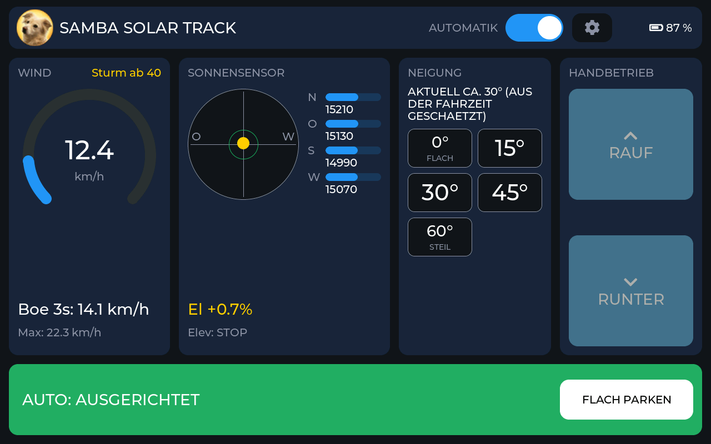
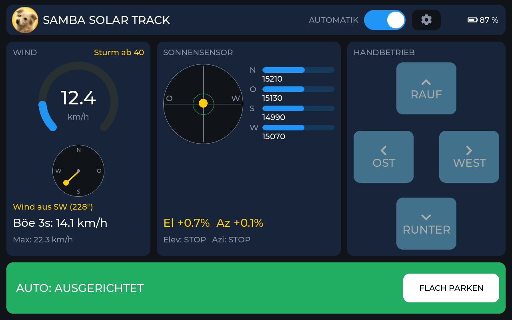
Auch die übrigen Bildschirme (Einrichtung, WERTE, Netzwerk, Uhrzeit, Fernzugriff, Design, Ton, Bildschirm, Firmware, Einmessen) nutzen das ganze Display: Sie sind für 1280 × 800 Bildpunkte angelegt, mit großer Schrift (zum Beispiel Abb. 24). Das große Dashboard ist am 20.10.2026 auf das Testboard aufgespielt worden, das Gerät ist danach im Netz erreichbar. Wie es dort aussieht, ob die Finger die Tasten treffen und ob es flüssig läuft, ist noch nicht bestätigt; die vergrößerten übrigen Bildschirme sind nur am Rechner gebaut. Die Bilder hier hat das Werkzeug für die Screenshots aus dem echten Code der Oberfläche erzeugt.
Töne aus dem Lautsprecher (in Vorbereitung, am Testboard gehört)
Das 10,1-Zoll-Board hat einen eingebauten Lautsprecher. Die begonnene Firmware nutzt ihn für Töne. Am Testboard sind die Töne am 20.10.2026 zu hören (Firmware 0.4.6); Lautstärkestufen und Alarmtöne sind noch nicht einzeln geprüft. Was hier steht, beschreibt, was die Firmware dafür enthält.
| Ton | Wann | Wie oft |
|---|---|---|
| Bestätigung: ein kurzer, heller Piep | bei jedem Antippen einer Taste oder eines Schalters am Display | einmal je Antippen; lässt sich abschalten |
| Störung eines E/A-Bausteins: drei kurze, hohe Töne | der Baustein der Schaltausgänge auf der Platine antwortet nicht | sofort, dann alle 20 Sekunden |
| Sturm: dreimal hoch-tief | der Sturmschutz hat das Modul flach gelegt | sofort, dann jede Minute |
| Antriebsfehler: zwei lange Töne | ein Antrieb hat seine Endlage nicht rechtzeitig erreicht | sofort, dann alle 30 Sekunden |
| Windmesser ausgefallen: hoch, dann tief | der Windmesser antwortet nicht mehr, es gibt keinen Sturmschutz | sofort, dann alle 2 Minuten |
Die Alarmtöne klingen, solange der Zustand besteht. Bestehen mehrere zugleich, hörst du nur den wichtigsten (in der Reihenfolge der Tabelle). Ein Alarmton geht immer vor dem Piep der Bestätigung. Solange die Einrichtung nicht abgeschlossen ist, gibt es keine Alarmtöne.
Einstellen: In der Einrichtung führt die Taste TON … zu einem eigenen Bildschirm. Dort schaltest du die Bestätigungstöne ein oder aus und stellst die Lautstärke mit den Tasten − und + in zehn Stufen ein. Erwartet: Nach jeder Änderung der Lautstärke klingt ein kurzer Probeton in der neuen Stufe; die Einstellung gilt sofort und bleibt nach dem Ausschalten erhalten. Ab Werk sind die Bestätigungstöne ein und die Lautstärke steht auf Stufe 7.
Damit ein Sturm oder ein Fehler nicht überhört wird, klingen Alarmtöne mindestens mit Stufe 7, auch wenn du die Lautstärke niedriger stellst. Lauter als Stufe 10 geht nicht: Diese Grenze ist fest eingebaut, damit Netzteil und Sicherung der Platine auch bei vollem Alarmton und ladendem Akku nicht überlastet werden. Ob die Stufen am echten Gerät gut hörbar sind und wie viel Strom der Lautsprecher wirklich braucht, wird gemessen, sobald das Board da ist; die Grenze ist bis dahin eine Annahme.
Ruhezustand und Bewegungsmelder (in Vorbereitung, am Gerät ungeprüft)
Das 10,1-Zoll-Board hat eine eingebaute Kamera. Die begonnene Firmware nutzt sie als Bewegungsmelder: Steht eine Weile niemand vor dem Display, zeigt es einen Bildschirmschoner oder schaltet die Beleuchtung aus. Kommt jemand ans Display, wird es von selbst wieder hell. Das ist bisher nur am Rechner gebaut und getestet; ob die Kamera am Gerät zuverlässig Bewegung erkennt, ist noch nicht geprüft.
Die Firmware wertet die Kamerabilder nur im Arbeitsspeicher aus, um Bewegung zu erkennen. Sie speichert kein Bild, zeigt keines an und schickt keines über das Netz, auch nicht an die Weboberfläche. Von jedem Bild bleibt nur die mittlere Helligkeit von kleinen Feldern übrig.
Was passiert:
- Nach der eingestellten Wartezeit ohne Berührung und ohne Bewegung vor dem Display erscheint der Bildschirmschoner (Abb. 13e): eine dunkle Fläche mit dem Logo, Uhrzeit, dem Zustand aus dem Statusband in dessen Farbe und dem Wind. Der Text wandert alle 20 Sekunden an eine andere Stelle, das Licht ist gedämpft. Oder das Display geht ganz aus, wenn du das so einstellst.
- Aufwecken: Bewegung vor dem Display oder eine Berührung. Die Berührung, die das Display weckt, löst nichts aus: Du kannst also auf eine beliebige Stelle tippen, ohne versehentlich eine Taste zu drücken. Erst wenn du den Finger losgelassen hast, wirkt die nächste Berührung.
- Bei Gefahr bleibt das Display an: Bei Sturm, Ausfall des Windmessers, Antriebsfehler und Störung eines E/A-Bausteins wird das Display hell und bleibt es, solange der Zustand besteht.
- Die Steuerung arbeitet im Ruhezustand ganz normal weiter, auch der Sturmschutz.
- Im Dunkeln (Raum ohne Licht) erkennt die Kamera keine Bewegung; dann weckt nur eine Berührung. Wird es plötzlich hell, zum Beispiel weil jemand das Licht einschaltet oder direkt vor die Kamera tritt, wacht das Display ebenfalls auf. Wer ganz still steht, wird nach wenigen Sekunden nicht mehr als Bewegung erkannt.
Einstellen:
- Bildschirm öffnenÖffne die Einrichtung (Zahnrad im Dashboard) und tippe auf BILDSCHIRM … (Abb. 13d). Erwartet: Der Bildschirm BILDSCHIRM erscheint.
- Art wählenTippe auf IMMER AN, BILDSCHIRMSCHONER oder DISPLAY AUS. Erwartet: Die gewählte Taste ist blau mit gelbem Rahmen. Bei IMMER AN sind Wartezeit und Bewegungsmelder ohne Bedeutung und gesperrt.
- Wartezeit einstellenMit − und + wählst du 1, 2, 3, 5, 10, 15, 20, 30, 45 oder 60 Minuten. Erwartet: Die Zahl in der Mitte ändert sich.
- BewegungsmelderMit dem Schalter schaltest du den Bewegungsmelder ein oder aus. Ist er aus, weckt nur eine Berührung. Erwartet: Daneben steht „BEWEGUNGSMELDER EIN“ bzw. „AUS“, darunter „Kamera bereit.“ Steht dort in Orange „Kamera nicht verfuegbar“, hat die Firmware die Kamera nicht gefunden; dann weckt nur eine Berührung.
- Bewegungsmelder prüfenDarunter zeigt eine Zeile laufend, was die Kamera sieht: Bilder je Sekunde, Helligkeit (0 bis 255) und wie viele Felder sich gerade bewegen, zum Beispiel „5 Bilder/s, Helligkeit 92, Bewegung 412 (ab 96)“. Winke in etwa einem Meter Abstand vor dem Display. Erwartet: Die Zahl hinter „Bewegung“ steigt über 96, und die Zeile wird gelb; dann würde diese Bewegung das Display wecken. Steht dort „zu dunkel“, ist der Raum für die Kamera zu dunkel; steht „Kamera ruht“, ist IMMER AN gewählt oder der Bewegungsmelder aus. Schreib dir die Werte auf, falls das Wecken nicht klappt: Sie helfen beim Einstellen.
- Akku eingebautMit dem Schalter AKKU EINGEBAUT zeigst oder verbirgst du den Füllstand des Akkus oben rechts im Dashboard (Kapitel 7). Erwartet: Daneben steht „AKKU EINGEBAUT“ bzw. „KEIN AKKU“; im Dashboard erscheint oder verschwindet die Anzeige, und Zahnrad und AUTOMATIK rücken entsprechend.
- ZurückTippe auf ZURUECK. Erwartet: Die Einrichtung erscheint wieder. Alles gilt sofort und bleibt nach dem Ausschalten erhalten; ein Neustart ist nicht nötig.
Ab Werk steht der Ruhezustand auf Bildschirmschoner nach 5 Minuten mit eingeschaltetem Bewegungsmelder (Vorschlag, noch nicht endgültig). Aus der Ferne (Weboberfläche, ioBroker) lässt sich das nicht einstellen.
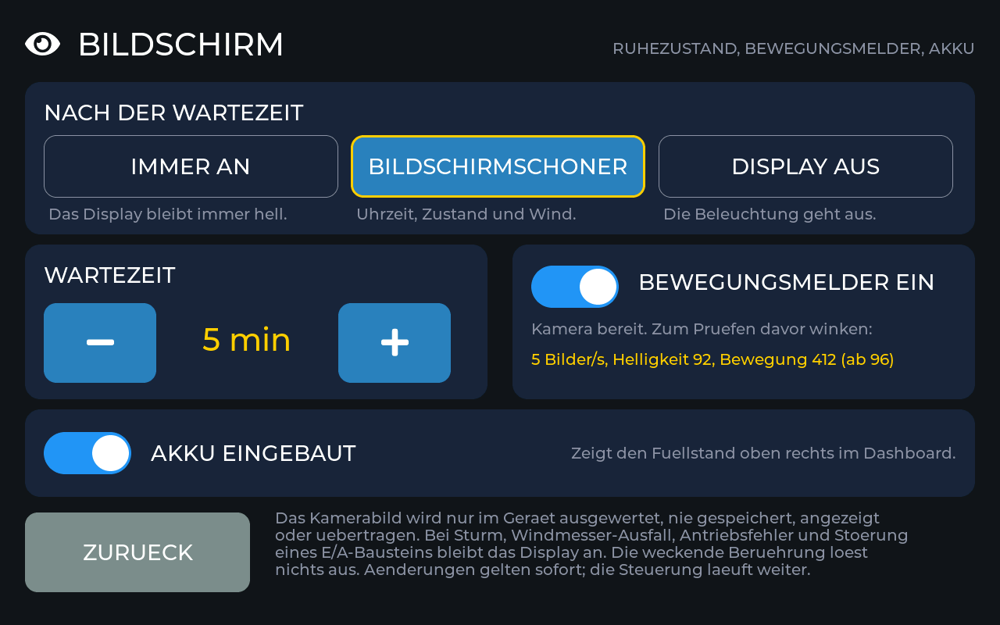
Am Testboard (21.10.2026) erscheint der Bildschirmschoner, und eine Berührung weckt das Display; Bewegung weckt es noch nicht. Außerdem startete das Gerät beim Aufspielen einer neuen Firmware über das Netz sofort neu; die nächste Firmware hält deshalb die Kamera an, bevor sie schreibt. Diese Firmware einmal per USB aufspielen (Die Firmware zum ersten Mal aufspielen), danach geht es wieder über das Netz. Die nächste Firmware bestimmt außerdem selbst, in welchem Teil der Bilddaten die Helligkeit steht, und zeigt die Messwerte der Kamera auf dem Bildschirm BILDSCHIRM (Schritt „Bewegungsmelder prüfen“). Offen ist weiter, ob die Kamera gefunden wird, wie zuverlässig sie Bewegung erkennt (Abstand, Licht, Fehlalarme etwa durch flackerndes Licht oder Tiere), ob das Display bei laufender Kamera ruhig bleibt und ob die gedämpfte Helligkeit des Bildschirmschoners passt. Die Schwellen der Erkennung sind geschätzt (Annahme) und werden nach dem Test angepasst.
Neue Firmware aus dem Internet (in Vorbereitung, am Gerät ungeprüft)
Die Firmware für das 10,1-Zoll-Board kann selbst nachsehen, ob es eine neuere Firmware gibt, und sie auf deinen Wunsch hin aus dem Internet installieren. Auch das ist bisher nur am Rechner gebaut und getestet. Was hier steht, beschreibt, was die Firmware dafür enthält.
Damit das Gerät eine neue Firmware annimmt, muss sie mit dem Schlüssel des Projekts unterschrieben sein (Signatur). Der heutige Schlüssel ist seit Firmware 0.4.7 eingetragen. Ältere Firmware (bis 0.4.6) kennt nur einen früheren Schlüssel, der nicht mehr verwendet wird: Ein Gerät mit dieser Firmware findet über das Internet nie eine neue Version. Spiele 0.4.7 dann einmal über die Weboberfläche (EINRICHTUNG, Firmware-Update) oder wie oben über das USB-Kabel auf; danach geht es über das Internet weiter. Ob Prüfung und Installation am Gerät so ablaufen wie hier beschrieben, wird mit den Fassungen 0.4.7 und 0.4.8 erst ausprobiert. Meldet die Prüfung einen Fehler (zum Beispiel „keine Verbindung zur Release-Quelle“), bleibt die Taste INSTALLIEREN gesperrt.
Was das Gerät von selbst tut: Ist das WLAN verbunden, sieht es einmal am Tag nach (die erste Prüfung 2 bis 20 Minuten nach dem Verbinden). Es lädt dafür eine kleine Datei, das Manifest, über eine verschlüsselte Verbindung (HTTPS) von der Release-Quelle des Projekts unter https://firmware.samba-solar.de/. Es installiert nie von selbst. Gibt es eine neuere Version, steht in der Kopfzeile oben klein in Gelb NEUE FIRMWARE und darunter die Nummer. Einen Ton gibt es dazu nicht.
Ansehen und installieren:
- Bildschirm öffnenZahnrad oben rechts, dann in der Einrichtung die Taste FIRMWARE …. Die Taste gibt es erst, wenn die Einrichtung einmal gespeichert ist. Erwartet: Der Bildschirm FIRMWARE zeigt die laufende Version mit Baudatum, wann zuletzt nachgesehen wurde, und das Ergebnis.
- Jetzt prüfen (wahlweise)Taste JETZT PRUEFEN. Das geht höchstens einmal je Minute und nur mit verbundenem WLAN. Erwartet: Nach wenigen Sekunden steht dort „AKTUELL“, „NEUE FIRMWARE VERFUEGBAR“ mit Nummer, Datum und Kurztext, oder „PRUEFUNG GESCHEITERT“ mit dem Grund.
- InstallierenTaste INSTALLIEREN (nur bei „NEUE FIRMWARE VERFUEGBAR“) und die Rückfrage mit INSTALLIEREN bestätigen. Erwartet: „WIRD GELADEN …“ mit einem Balken. Die Steuerung regelt dabei ganz normal weiter, auch der Sturmschutz. Mit ABBRECHEN lässt sich das Laden beenden; dann ändert sich nichts.
- Schreiben und NeustartNach dem Laden prüft das Gerät die Datei. Erst wenn kein Antrieb mehr fährt, schaltet es alle Ausgänge aus und schreibt die neue Firmware. Erwartet: Über dem Bildschirm steht „FIRMWARE-UPDATE – Gepruefte Firmware wird geschrieben“; dann startet die Steuerung neu. Die Einstellungen bleiben erhalten.
- Nach dem NeustartNichts tun und das Gerät mindestens zwei Minuten laufen lassen. Erwartet: Die neue Version steht im Bildschirm FIRMWARE. Nach zwei Minuten bestätigt sich die neue Firmware selbst, sobald Display und Platine arbeiten und – nur wenn das WLAN eingeschaltet ist – das Gerät sich seit dem Neustart mindestens einmal mit dem WLAN verbunden hat (der Selbsttest).
Das Schreiben dauert schätzungsweise etwa eine Minute (Annahme, noch nicht gemessen). In dieser Zeit stehen alle Antriebe, und das Modul wird bei Sturm nicht flach gelegt. Deshalb beginnt die Installation nicht, solange der Sturmschutz läuft oder ein Antrieb fährt. Kommt während des Ladens oder zwischen Laden und Schreiben ein Sturm, bricht das Gerät ab und verwirft die geladene Datei, auch wenn der Sturm schnell wieder vorbei ist; du musst die Installation danach neu bestätigen. Installiere am besten bei ruhigem Wetter.
Bleibt die neue Firmware hängen oder startet sie in den ersten zwei Minuten neu, startet das Gerät von selbst wieder die bisherige Firmware. Dasselbe geschieht, wenn sie den Selbsttest nicht rechtzeitig besteht (zum Beispiel weil das Display oder die Platine nicht antwortet oder weil sie sich nie mit dem WLAN verbindet): Dann schaltet sie zuerst alle Ausgänge aus und startet die bisherige Firmware. Die Frist beträgt 12 Minuten nach dem Neustart; ist das WLAN eingeschaltet, 30 Minuten, damit ein kurz ausgefallener Router nicht gleich zum Rücksprung führt. Ist das WLAN ausgeschaltet, spielt es für den Selbsttest keine Rolle. Beide Fristen sind Vorschlagswerte, am Gerät noch nicht erprobt. Solange die neue Firmware auf den Selbsttest wartet, steht oben zwischen Produktname und AUTOMATIK ein oranges Band über allen Bildschirmen: die Zeit bis zur Prüfung, danach „NICHT BESTANDEN“, der Stand der Bedingungen (AUSGAENGE und WLAN: OK, FEHLT oder AUS) und die Zeit bis zum Rücksprung. Ohne die Platine RearCircuitBoard_10 steht dort „OHNE PLATINE: SIMULATION EINSCHALTEN“ (Abb. 13c). Woran der Selbsttest scheitert, steht außerdem im Log. Das Display meldet nach einem Rücksprung „UPDATE ZURUECKGENOMMEN“; tippe auf OK.
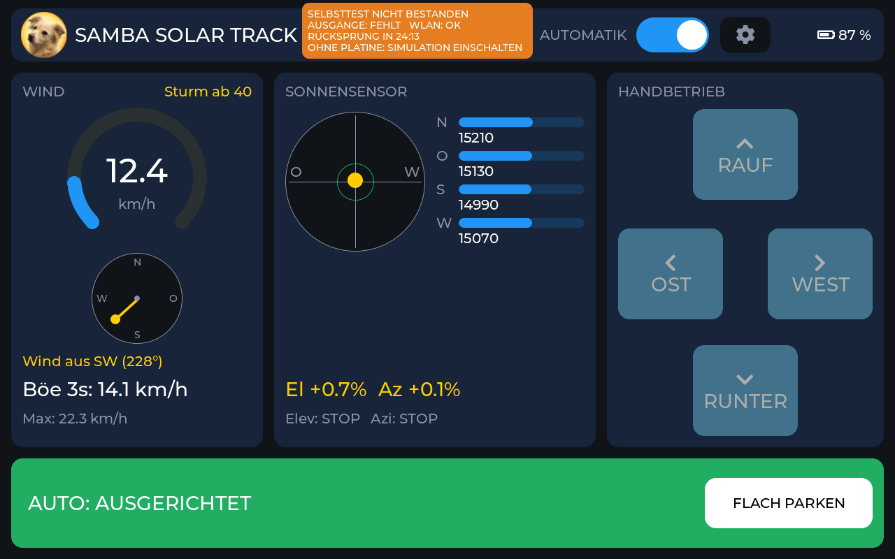
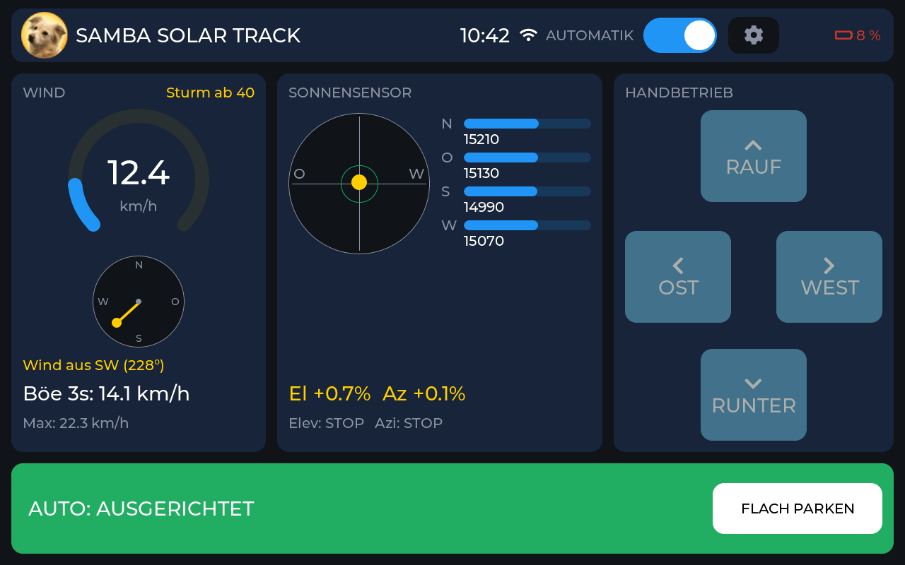
Dieselbe Version wird danach nicht mehr in der Kopfzeile angeboten, lässt sich im Bildschirm FIRMWARE aber trotzdem noch einmal installieren. Das gilt auf dem 10,1-Zoll-Board auch für ein Update über die Weboberfläche.
Aus der Ferne: In der Weboberfläche steht unter EINRICHTUNG der Block „Firmware aus dem Internet“ mit denselben Angaben und den Tasten JETZT PRÜFEN und INSTALLIEREN. Bedienen darf nur ein angemeldetes Gerät (Token), und der Schalter „Fernsteuerung gesperrt“ am Display sperrt beides. Die tägliche Prüfung läuft auch bei gesperrter Fernsteuerung weiter.
Beim Nachsehen sendet das Gerät nur eine einfache Anfrage mit seiner Firmware-Version; keine Kennung, kein Passwort, kein Token. Die Seite des Projekts sieht dabei, wie jede Internetseite, die öffentliche IP-Adresse deines Internetanschlusses. Einen Schalter, der das Nachsehen abschaltet, gibt es nicht; ohne WLAN findet es nicht statt.
Neigung auf Befehl: einen festen Winkel anfahren (in Vorbereitung, am Gerät ungeprüft)
Statt der Sonne nachzuführen, kann die Elevation auf deinen Befehl einen festen Winkel anfahren, zum Beispiel einen flachen im Sommer oder einen steilen im Winter. Danach pausiert die Automatik, bis du die Anforderung wieder aufhebst. Das gibt es nur in der 10-Zoll-Version und nur in der Betriebsart NUR VERTIKAL. Bei zwei Achsen (vertikal + horizontal) sind die Karte NEIGUNG, Wunschwinkel, Fahrzeiten und Gestell ausgeblendet. Auch diese Funktion ist bisher nur am Rechner gebaut und getestet; die Bilder hat das Werkzeug für die Screenshots aus dem echten Code der Oberfläche erzeugt.
Ab Werk gibt es keinen Fühler für die Neigung. Die Firmware rechnet die Neigung aus der Zeit, in der sie den Antrieb tatsächlich eingeschaltet hat, und aus den eingemessenen Fahrzeiten. Deshalb steht am Display immer „CA. 30°“ oder „UNBEKANNT“, nie eine genaue Zahl. Wie genau das ist, steht weiter unten; alle Angaben dazu sind Annahmen, bis am Rack gemessen ist. Genauer geht es mit dem Hall-Abgriff: Dann zählt die Firmware die Impulse des Antriebs und zeigt die Neigung ohne „CA.“.
Welche Winkel es gibt: immer 0° (flach), 30° und 60° (steil), dazu bis zu zwei Wunschwinkel, die du unter WERTE einstellst (ganze Grad von 1 bis 59, nicht 30, nicht zweimal derselbe; 0 heißt aus). Die Tasten stehen immer nach dem Winkel geordnet. Solange die Fahrzeit nicht eingemessen ist, gehen nur 0° und 60°; die anderen Winkel sind ausgegraut.
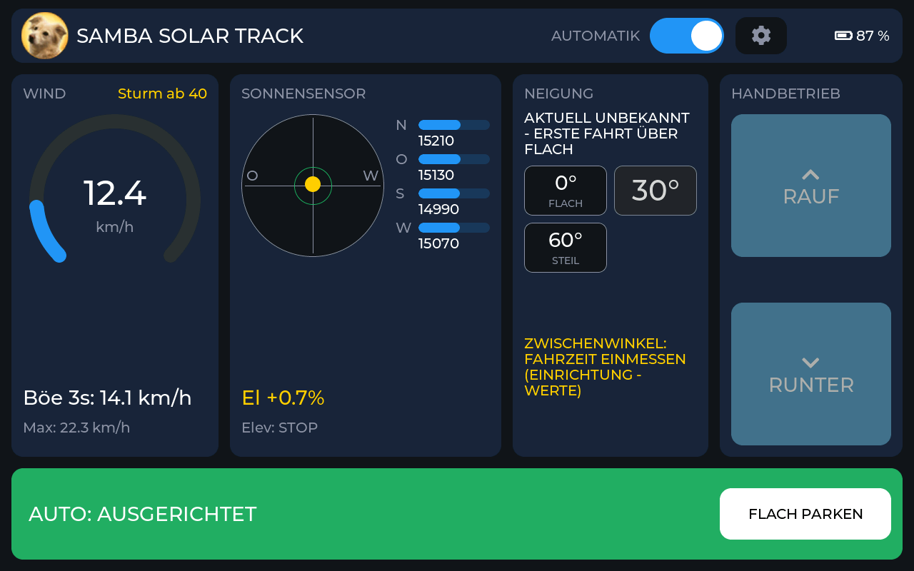
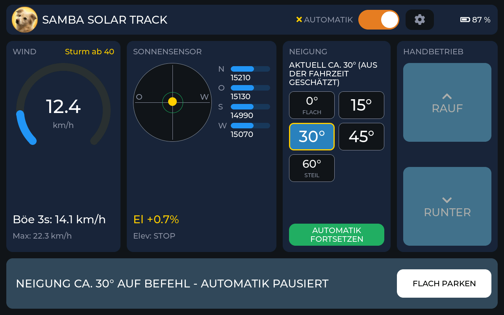
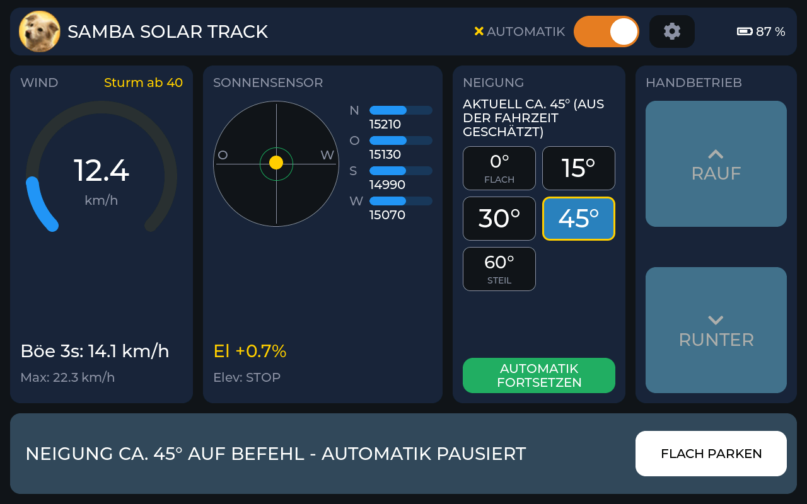
| Anzeige in der Karte NEIGUNG | Bedeutung |
|---|---|
| AKTUELL UNBEKANNT - ERSTE FAHRT UEBER FLACH | Die Stellung ist seit dem Einschalten nicht bekannt, oder die Schätzung ist zu unsicher (mehr als 6°). |
| AKTUELL CA. 31° (AUS DER FAHRZEIT GESCHAETZT) | Geschätzte Neigung. |
| Winkeltaste blau mit gelbem Rand | Diese Neigung auf Befehl besteht, auch während Sturm, Parken oder Handbetrieb. Darunter steht die Taste AUTOMATIK FORTSETZEN. |
| NICHT VERFUEGBAR | Ohne abgeschlossene Einrichtung gibt es keine Neigung auf Befehl; die Tasten sind gesperrt. |
Einen Winkel anfahren:
- Stellung ablesenSieh in die Karte NEIGUNG im Dashboard (Abb. 14 oder 15). Erwartet: Oben steht „AKTUELL CA. 31° (AUS DER FAHRZEIT GESCHAETZT)“ oder „AKTUELL UNBEKANNT - ERSTE FAHRT UEBER FLACH“.
- Winkel wählenTippe in der Karte auf den gewünschten Winkel. Erwartet: Die Taste wird blau mit gelbem Rand, darunter erscheint AUTOMATIK FORTSETZEN, und das Statusband zeigt den Ablauf (nächster Schritt).
- ZusehenIst die Stellung unbekannt oder zu unsicher, fährt die Elevation zuerst flach bis zur Endlage, die Bezugsfahrt. Ohne Endschalter dauert sie die volle Höchstlaufzeit (beim Samba-Solar-Rack 2.0-E Plus 90 Sekunden), auch wenn der Rahmen längst steht. Danach folgt die Fahrt zum Winkel. Erwartet: nacheinander „NEIGUNG 45°: BEZUGSFAHRT IN FLACHSTELLUNG“, „NEIGUNG 45°: FAHRE STEILER, CA. 12°“ und zum Schluss „NEIGUNG CA. 45° AUF BEFEHL - AUTOMATIK PAUSIERT“ (Abb. 17). Nachgeregelt wird danach nicht.
- Zurück zur AutomatikTippe in der Karte auf AUTOMATIK FORTSETZEN. Erwartet: Das Statusband zeigt wieder AUTO, die Nachführung beginnt neu.
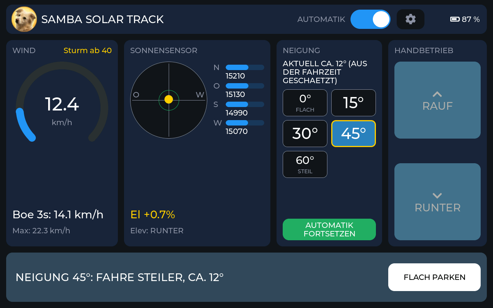
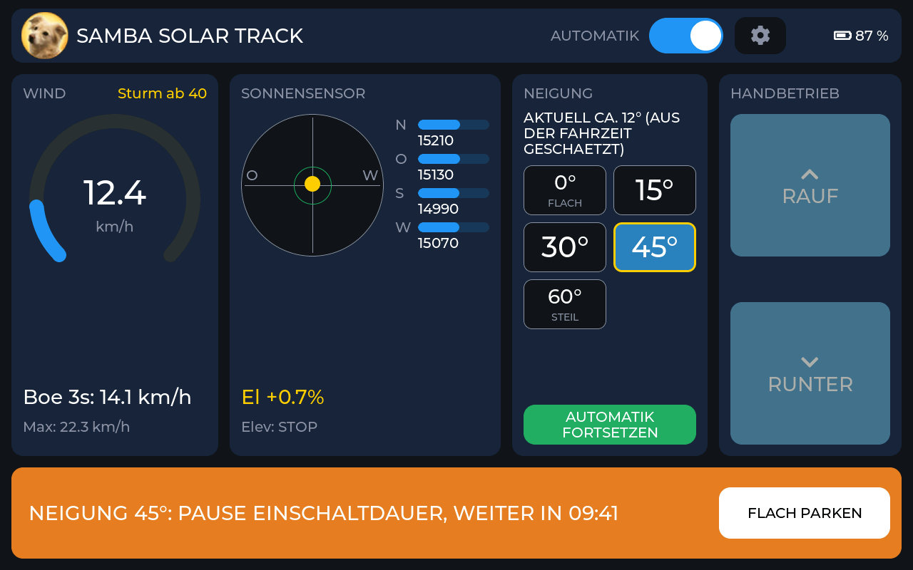
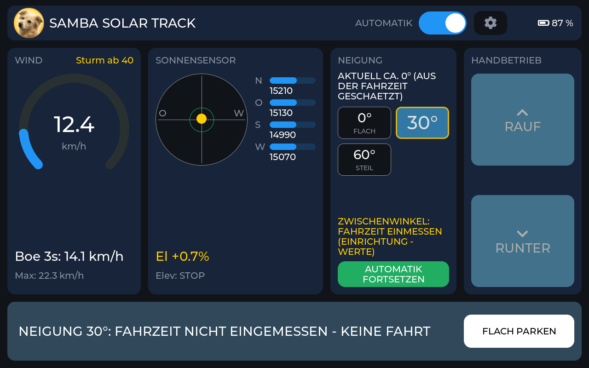
Was Vorrang hat (die Rangfolge der Steuerung): Einrichtung fehlt, Störung eines E/A-Bausteins, Sturm, Antriebsfehler, Handbetrieb, Parken auf Befehl und Windmesser-Ausfall gehen vor. Erst danach kommt die Neigung auf Befehl, und sie geht ihrerseits Sensorfehler, Nacht und Automatik vor. Die Neigung auf Befehl gilt also auch nachts und bei gestörtem Sonnensensor.
| Lage | Was passiert |
|---|---|
| Sturm, Windmesser fällt aus | Gehen vor: Die Elevation fährt flach. Danach fährt sie von selbst wieder auf den befohlenen Winkel. Die Karte sagt „STURMSCHUTZ HAT VORRANG - DANACH WIRD DER WINKEL ANGEFAHREN“ (Abb. 22). |
| FLACH PARKEN | Bleibt eine eigene Taste und geht vor („PARKEN HAT VORRANG …“). Nach dem Aufheben des Parkens fährt die Anlage wieder auf den Winkel. |
| Handbetrieb (Automatik aus) | Die Neigung auf Befehl ruht; sie wirkt, sobald die Automatik wieder ein ist („WIRKT, SOBALD DIE AUTOMATIK EIN IST“). |
| Störung | Geht vor („STOERUNG HAT VORRANG“), es fährt nichts. |
| Stromausfall, Neustart | Die befohlene Neigung bleibt gespeichert, wie die Parkanforderung. Nach dem Einschalten ist die Stellung aber unbekannt: Die erste Fahrt auf einen Zwischenwinkel beginnt mit einer Bezugsfahrt. |
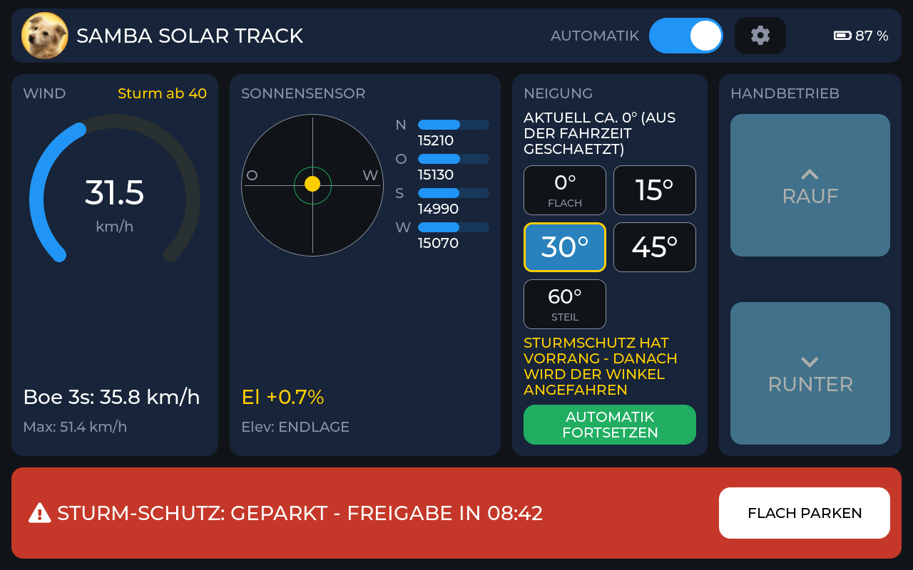
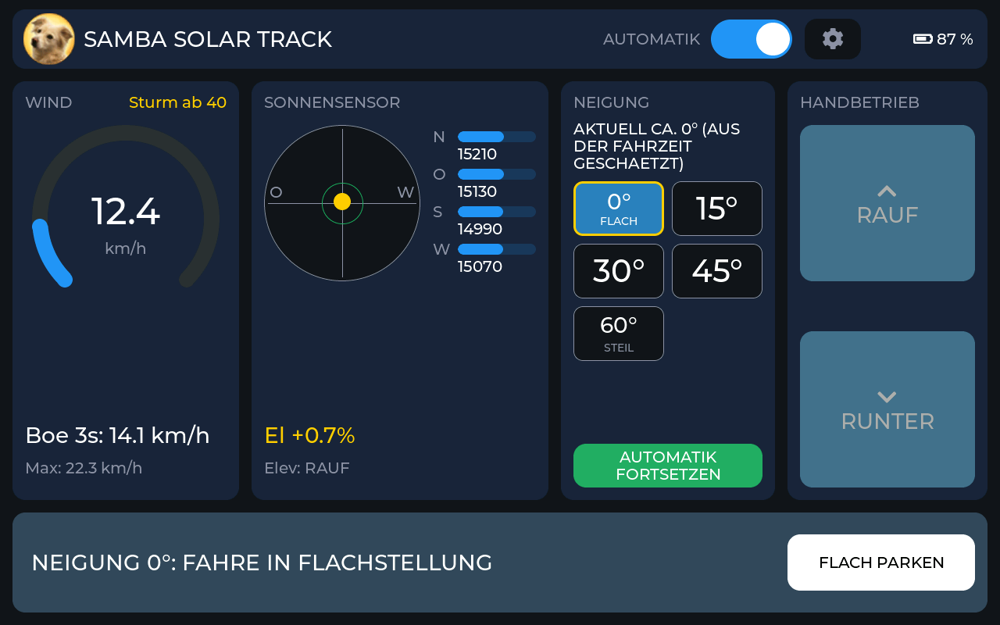
Im Browser: Die Weboberfläche zeigt bei der 10-Zoll-Version dieselbe Aufteilung wie das Display (Abb. 23a und 23b): auf einem breiten Bildschirm (PC, Tablet, Handy quer) Kopfzeile, die Karten WIND (mit Kompassrose, wenn ein Windmesser mit Richtung eingerichtet ist), SONNENSENSOR, NEIGUNG und HANDBETRIEB in denselben Breiten und darunter das Statusband; auf dem Handy untereinander. In der Karte NEIGUNG stehen dieselben Tasten und der Text „Aktuell ca. 31° (aus der Fahrzeit geschätzt)“. Bedienen darf nur ein angemeldetes Gerät, und nur, wenn die Fernsteuerung nicht gesperrt ist. Das Einmessen gibt es nur am Display. Die Bilder stammen vom Vorschauwerkzeug der Weboberfläche (python3 tools/web_vorschau.py) mit nachgestelltem Gerät, nicht vom echten Tracker.
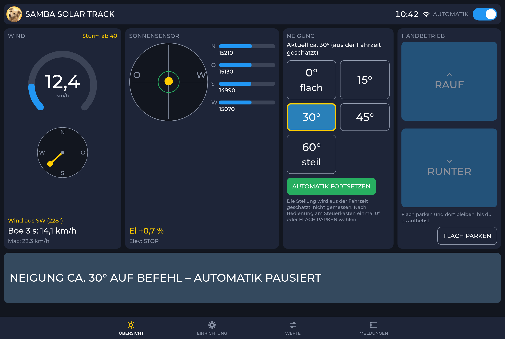
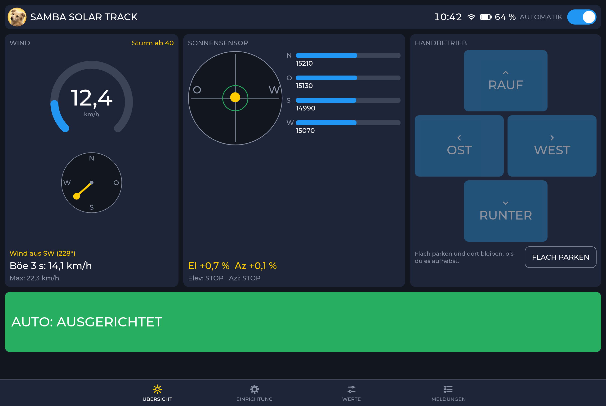
Wunschwinkel, Fahrzeiten und Gestell einstellen
Die Werte stehen in der Einrichtung unter WERTE: die beiden Wunschwinkel in der Gruppe REGELUNG, die Fahrzeiten, das Gestell, der Anlaufverlust und die drei Werte des Hall-Abgriffs in der Gruppe INBETRIEBNAHME. Die Werte der Gruppe INBETRIEBNAHME lassen sich nur ändern, solange kein Antrieb fährt.
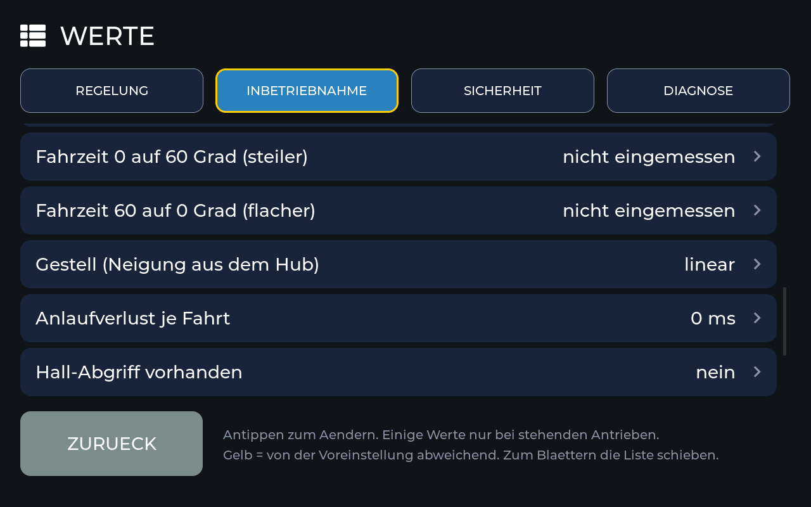
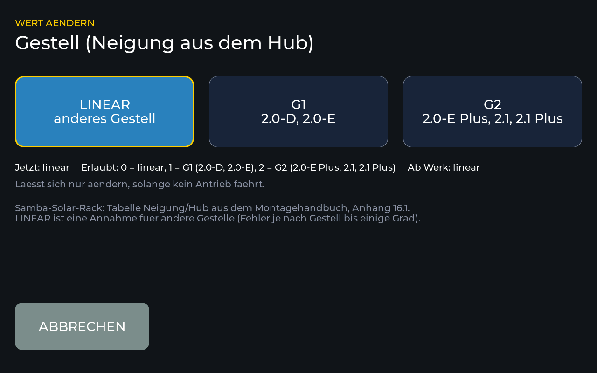
| Wert | Ab Werk | Erlaubt | Wozu |
|---|---|---|---|
| Fahrzeit 0 auf 60 Grad (steiler) | nicht eingemessen | 10 bis 300 s | Zeit für den ganzen Weg von flach nach steil. Am besten einmessen. |
| Fahrzeit 60 auf 0 Grad (flacher) | nicht eingemessen | 10 bis 300 s | Zeit für den Weg zurück. Am besten einmessen. |
| Gestell (Neigung aus dem Hub) | linear | linear, G1 (2.0-D, 2.0-E), G2 (2.0-E Plus, 2.1, 2.1 Plus) | Rechnet den Weg des Antriebs in Grad um (Tabelle aus dem Montagehandbuch, Anhang 16.1). |
| Anlaufverlust je Fahrt | 0 ms | 0 bis 3000 ms | Teil jeder Fahrt, in dem sich der Rahmen noch nicht bewegt. |
| Wunschwinkel 1 und 2 | aus | 1 bis 59°, nicht 30, nicht doppelt; 0 = aus | Zusätzliche Tasten in der Karte NEIGUNG. Gilt sofort. |
Die Fahrzeiten gelten nur, wenn sie kürzer sind als 0,9 × die Höchstlaufzeit der Elevation. Stellst du die Höchstlaufzeit kürzer, gelten sie als nicht eingemessen, bis die Werte wieder passen. „LINEAR“ ist eine Annahme für andere Gestelle; auf einem G2-Gestell wäre sie um bis zu etwa 2,6° falsch. Änderst du einen Wunschwinkel, der gerade befohlen ist, oder schaltest ihn ab, bleibt die Neigung auf Befehl bestehen; AUTOMATIK FORTSETZEN hebt sie auf. Für das Samba-Solar-Rack 2.0-E Plus (Synchronsteuerung HAKIWO SCN4, keine Endschalter am Tracker) gilt außerdem: „Endschalter Elevation eingebaut“ = nein, Höchstlaufzeit Elevation 90 s. Von Hand eingetragen wären es beim 2.0-E Plus etwa 75 s laut Montagehandbuch; einmessen ist genauer.
Die Fahrzeit einmessen
Einmal bei der Inbetriebnahme und nach Möglichkeit im Herbst und im Frühjahr wieder: Die Temperatur ändert die Geschwindigkeit der Antriebe (Annahme, nicht gemessen). Ort: Einrichtung → WERTE → INBETRIEBNAHME → FAHRZEIT EINMESSEN (unterste Zeile, die Liste dafür nach unten schieben, Abb. 34; mit Hall-Abgriff heißt die Taste EINMESSEN: FAHRZEIT UND HALL-SCHRITTE). Steuerung und Sturmschutz laufen dabei weiter.
- VorbereitenDen Schwenkbereich frei machen: Niemand steht am Gestell, nichts liegt im Weg. Bildschirm FAHRZEIT EINMESSEN öffnen. Steht die Automatik auf EIN, tippe AUTOMATIK AUS. Erwartet: „SCHRITT 1 VON 4: VORBEREITEN“ (Abb. 27), danach ist START wählbar.
- STARTTippe auf START. Erwartet: „FAHRE FLACH, BIS ZUR ENDLAGE“ (Abb. 28). Ohne Endschalter bleibt der Kontakt die volle Höchstlaufzeit geschlossen, auch wenn der Rahmen längst steht. Reicht die Einschaltdauer dafür gerade nicht, steht dort „WARTET AUF DIE EINSCHALTDAUER“ mit der Restzeit.
- AUF MESSENTippe auf AUF MESSEN. Die Zeit läuft (Abb. 29). Tippe ANGEKOMMEN, sobald der Rahmen steht und das Motorgeräusch verstummt (der Antrieb steht dann an seinem eigenen Endschalter). Erwartet: „AUF gemessen“ mit der Zeit auf eine Zehntelsekunde. Mit Endschaltern am Tracker und mit Hall-Abgriff endet die Messung von selbst.
- PauseEmpfohlen sind etwa 15 Minuten Pause, damit die Antriebe abkühlen (Einschaltdauer; Abb. 30). Erzwungen wird die Pause nicht. Erwartet: Der Bildschirm zeigt die Empfehlung und die Taste AB MESSEN.
- AB MESSENTippe auf AB MESSEN und wieder auf ANGEKOMMEN, sobald der Rahmen flach steht. Erwartet: Die zweite Zeit erscheint. Steht der Antrieb mitten in der Messung wegen einer Pause der Einschaltdauer, zeigt der Bildschirm „PAUSE EINSCHALTDAUER … NICHT angekommen“ (Abb. 31): Dann nicht tippen, die Messung läuft danach von selbst weiter.
- ÜbernehmenDer Bildschirm zeigt beide Zeiten (Abb. 32). Tippe UEBERNEHMEN. Erwartet: Unter WERTE stehen die Zeiten statt „nicht eingemessen“; in der Karte NEIGUNG sind alle Winkel wählbar.
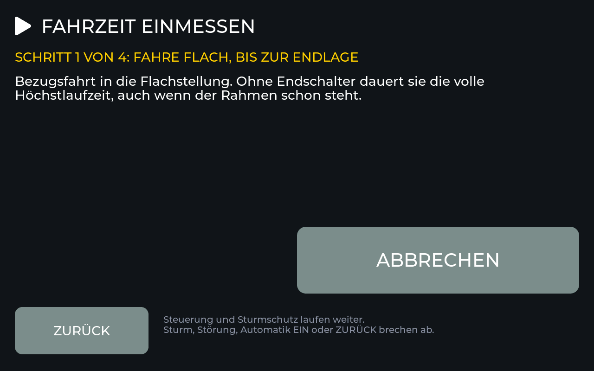
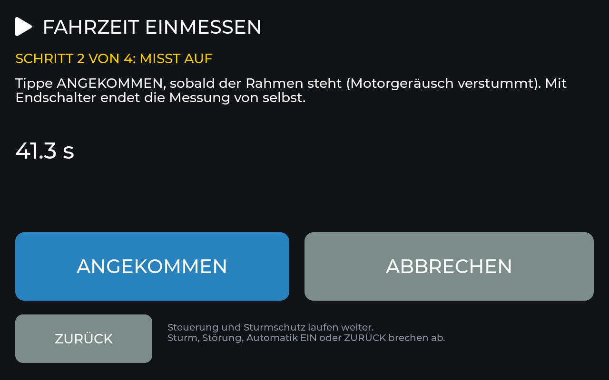
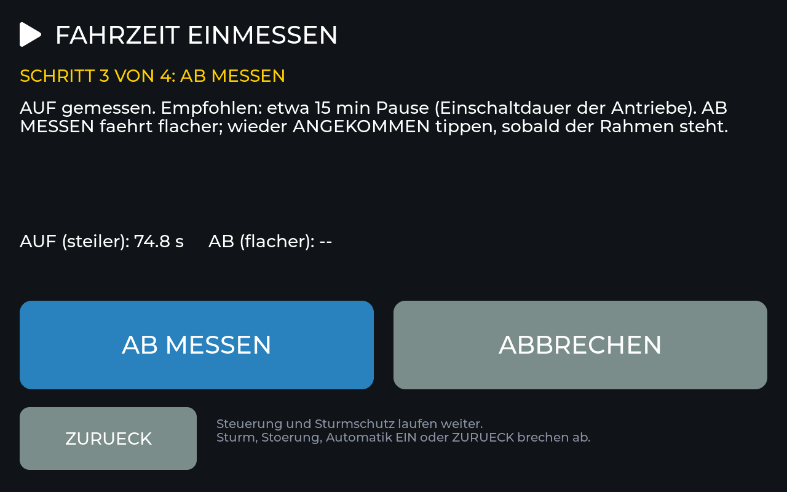
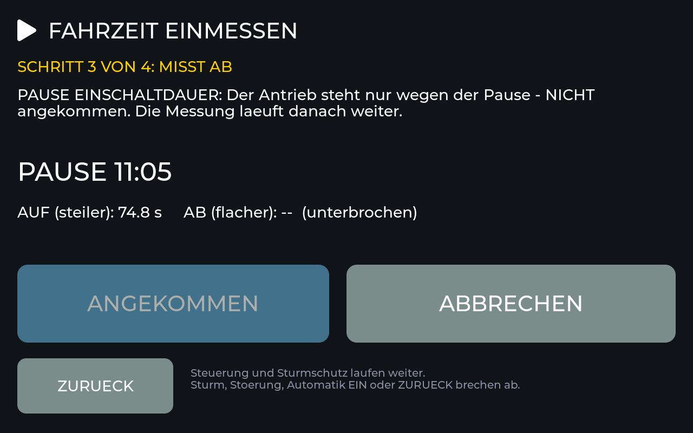
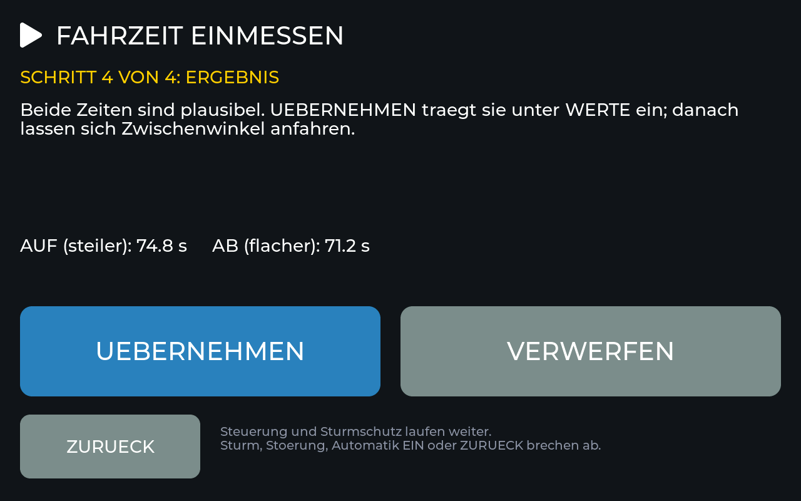
Die Firmware prüft die Messung: Jede Zeit muss mindestens 10 Sekunden dauern und kürzer sein als 0,9 × die Höchstlaufzeit, und AUF und AB dürfen sich höchstens um den Faktor 2 unterscheiden. Sonst erscheint der Grund in gelber Schrift, und nichts wird übernommen (Abb. 33). Sturm, eine Störung, Automatik EIN oder ZURUECK brechen das Einmessen ab. Solange du einmisst, lehnt das Gerät Handfahrten aus der Ferne ab.
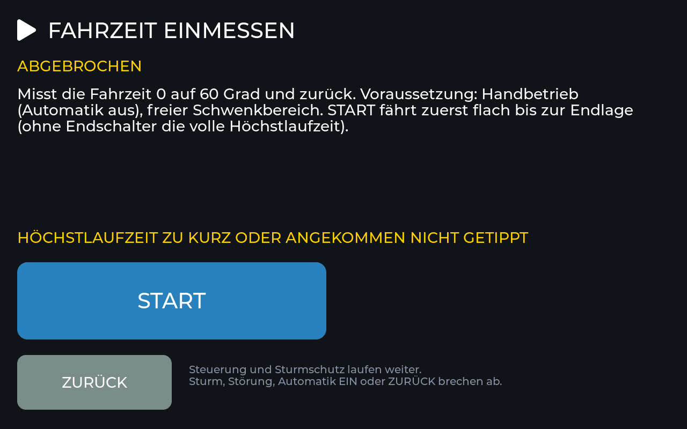
Wie genau ist das?
Alle Zahlen in dieser Tabelle sind Annahmen, nicht gemessen. Sie werden am Rack geprüft.
| Quelle der Abweichung | Größenordnung |
|---|---|
| Endlagen der Mechanik | 0° ± 1°, 60° ± 1,5° (Montagehandbuch) |
| Tabelle des Gestells G1/G2 | unter 0,1° |
| Geschwindigkeit nach dem Einmessen (Last, Spannung) | etwa ± 3 bis 5 % der Fahrstrecke, ± 1 bis 1,5° bei 30° |
| Temperatur (Winter gegen Einmessung im Sommer) | bis etwa 3 bis 6° bei 30° |
| Anlauf und Nachlauf je Fahrt | bis knapp 1° je Fahrt |
Erwartung: eine Fahrt ab einem Bezug ± 1 bis ± 3°, im Winter mit einer Einmessung aus dem Sommer bis etwa ± 5°. Im Stillstand ändert sich die Schätzung nicht. Nach einem Tag Automatik mit vielen kurzen Nachführfahrten ist sie meist „UNBEKANNT“; die erste Fahrt auf einen Zwischenwinkel beginnt dann mit einer Bezugsfahrt. Mit jeder Fahrt wächst die Unsicherheit; ist sie höchstens 3°, fährt die Elevation direkt, sonst vorher flach. Feste Werte dafür (je Fahrt 0,3°, dazu 8 % der gefahrenen Grad, Toleranz 1°, kürzeste Fahrt 0,5 s, 2° Zuschlag nach einem Reset mitten in einer Fahrt) stehen fest in der Firmware und sind ebenfalls Annahmen.
Bewegst du das Modul am Steuerkasten (Wipptaster, Funk-Handsender, Taster der Synchronsteuerung) oder mit der Handkurbel, stimmt die Schätzung nicht mehr. Wähle danach einmal 0° oder FLACH PARKEN, damit die Firmware wieder einen Bezug hat. Mit eingeschaltetem Hall-Abgriff zählt sie Bewegungen über die Synchronsteuerung mit, solange deren Impulse ankommen.
Ohne Endschalter am Tracker gilt eine Endlage als erreicht, wenn der Kontakt die ganze Höchstlaufzeit geschlossen war (Laufzeit-Endlage). Hatten die Antriebe dabei keine Spannung (das Netzteil war aus und das Board lief auf dem Akku, die Sicherung der Antriebe hatte ausgelöst, oder bei zwei Netzteilen war das der Antriebe aus) oder hat die Synchronsteuerung (zum Beispiel HAKIWO SCN4) die Fahrt ohne Rückmeldung abgebrochen, stimmt dieser Bezug nicht, und die Schätzung danach auch nicht. Ohne Hall-Abgriff kann die Firmware das nicht erkennen; sie zeigt deshalb nie mehr als „CA.“. Mit Hall-Abgriff erkennt sie es an den fehlenden Impulsen.
Nach einem Neustart ohne Spannungsverlust (Einrichtung gespeichert, Update, Absturz) übernimmt die Firmware die Schätzung aus einem Speicher, der den Neustart übersteht; lief beim Reset gerade ein Antrieb, wird sie um 2° unsicherer. Ob dieser Speicher am Board hält, ist eine Annahme. Haben die Antriebe während einer Fahrt keine Spannung (Netzteil aus und Board auf dem Akku, Sicherung der Antriebe ausgelöst) oder bricht die Synchronsteuerung die Fahrt ab, schließen die Kontakte trotzdem; nach der Höchstlaufzeit merkt sich die Firmware dann eine falsche Laufzeit-Endlage und eine falsche Neigung. Bei Sturm, Windmesser-Ausfall und Parken fährt sie deshalb erneut flach (siehe unten). Ob sich der Antrieb wirklich bewegt, erkennt der Hall-Abgriff, wenn er eingebaut und eingeschaltet ist (ebenfalls nur am Rechner geprüft). In der Simulation läuft die Funktion mit nachgebildeten Antrieben; deren Stellung wird nie in den echten Betrieb übernommen.
[ 120.010][I][main ] Neigung auf Befehl: 45 Grad (vorher keine), Quelle Display [ 120.010][I][track ] Neigung 45 Grad: Bezugsfahrt noetig [ 210.020][I][elpos ] Bezug Flachstellung (Laufzeit-Endlage), Stellung war unbekannt [ 210.540][I][track ] Neigung 45 Grad: Zielfahrt STEILER von ca. 0.0 Grad, erwartet 55.1 s [ 266.160][I][track ] Neigung 45 Grad erreicht: ca. 45.0 Grad nach 55.6 s, Unsicherheit 3.9 Grad
Die Zeilen sind ein Beispiel im Format der Firmware; die Zahlen sind für das Rack 2.0-E Plus mit Gestell G2 und 75 Sekunden Fahrzeit gerechnet. Die Statuszeile alle 5 Sekunden endet dann mit „| Neigung ca. 45 Grad (+-4), Ziel 45“.
Mit Hall-Abgriff (genauer)
Was ist das? Der Antrieb der Elevation hat einen Hall-Sensor: Bei jeder Umdrehung seines Motors gibt er kurze Impulse aus. Die kleine Platine HallTapBoard im Steuerkasten greift diese Impulse an der Synchronsteuerung ab (der Hall-Abgriff) und gibt sie über Optokoppler galvanisch getrennt an den Impulseingang J22 der Steuerung weiter (Kapitel 6). Die Steuerung zählt sie mit ihrem Pulszähler und weiß dadurch, wie weit der Antrieb gefahren ist. Sie muss die Neigung nicht mehr aus der Fahrzeit schätzen. Das gibt es nur in der 10-Zoll-Version und nur in der Betriebsart NUR VERTIKAL. Gezählt werden nur die Impulse von Antrieb 1.
Die Auswertung ist nur am Rechner gebaut und getestet. Das HallTapBoard ist ein Entwurf (0.3) und noch nicht gefertigt; ob die Synchronsteuerung HAKIWO SCN4 den Abgriff verträgt, ist noch nicht geklärt (Kapitel 6). Die Bilder hat das Werkzeug für die Screenshots aus dem echten Code der Oberfläche erzeugt.
Ohne ihn arbeitet die Neigung auf Befehl wie oben beschrieben: geschätzt aus der Fahrzeit, mit „CA.“ vor der Zahl. Du brauchst den Hall-Abgriff nicht, um die Neigung auf Befehl zu nutzen.
Einschalten – Schritt für Schritt:
- AnschließenDas HallTapBoard einbauen und anschließen (Kapitel 6) und sein Kabel an J22 der Platine RearCircuitBoard_10 stecken (Impulseingang HALL). Erwartet: Am Display ist nichts zu sehen; auf dem HallTapBoard leuchten „24V“ (gelb) und „5V OK“ (grün).
- EinschaltenAm Display: Zahnrad → WERTE → INBETRIEBNAHME, die Liste ganz nach unten schieben, „Hall-Abgriff vorhanden“ antippen und JA wählen (Abb. 34). Das geht nur, solange kein Antrieb fährt. Erwartet: Die Zeile zeigt „ja“ in Gelb, weil der Wert von der Voreinstellung abweicht. Die unterste Taste heißt jetzt EINMESSEN: FAHRZEIT UND HALL-SCHRITTE.
- EinmessenAutomatik aus (Handbetrieb), dann EINMESSEN: FAHRZEIT UND HALL-SCHRITTE öffnen. Der Bildschirm heißt weiter FAHRZEIT EINMESSEN. Vorgehen wie beim Einmessen der Fahrzeit oben: START, AUF MESSEN, Pause, AB MESSEN. Die Messfahrten enden von selbst, sobald der Rahmen steht (Abb. 35). ANGEKOMMEN brauchst du nur, wenn der Rahmen sichtbar steht und die Zeit trotzdem weiterläuft. Erwartet: Im Ergebnis stehen für AUF und AB je eine Zeit und eine Zahl von Hall-Schritten, die beiden Zahlen etwa gleich groß (Abb. 36).
- ÜbernehmenTippe auf UEBERNEHMEN. Erwartet: Unter WERTE steht bei „Hall-Schritte je Hub“ eine Zahl statt „nicht eingemessen“ (der Mittelwert aus AUF und AB), bei den Fahrzeiten die gemessenen Zeiten.
- Wenn es nicht klapptErscheint beim Einmessen „HALL ZAEHLT RUECKWAERTS - ZAEHLRICHTUNG UMKEHREN (WERTE)“ oder in der Kopfzeile „HALL-ABGRIFF GESTOERT“: WERTE → „Hall-Zaehlrichtung umkehren“ → JA, dann neu einmessen. Erwartet: Beim nächsten Einmessen erscheint der Hinweis nicht mehr. Steht dort „ZU WENIG HALL-SCHRITTE - HALL-ABGRIFF PRUEFEN“, kommen kaum Impulse an: Kabel an J22 und das HallTapBoard prüfen (beide Leuchten müssen leuchten, Kapitel 6).
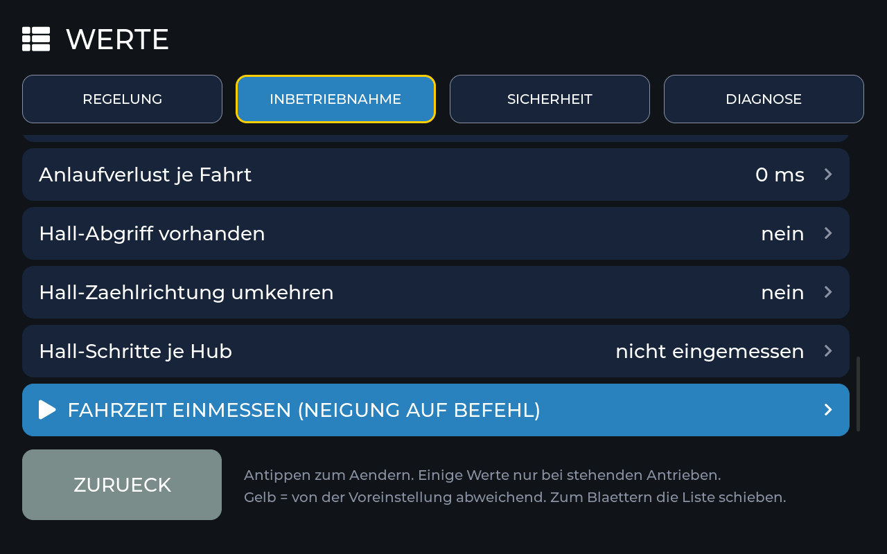
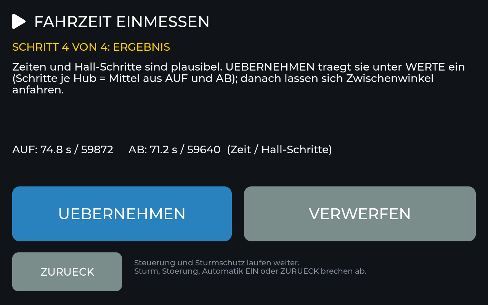
Die Firmware prüft das Ergebnis: Die Zeiten müssen die Prüfung von oben bestehen, AUF und AB müssen je mindestens 1 000 Hall-Schritte zählen und dürfen höchstens 3 % auseinanderliegen (Vorschlagswert). Sonst steht der Grund in gelber Schrift, und nichts wird übernommen.
Im Betrieb:
- Die Karte NEIGUNG zeigt die gezählte Neigung ohne „CA.“, zum Beispiel „AKTUELL 30° (HALL-ABGRIFF)“ (Abb. 37). Wie genau das ist, wird am Rack gemessen; angenommen sind 0,2° (Annahme).
- Nach dem Einschalten ist die Neigung unbekannt, bis die Elevation einmal eine Endlage erreicht hat. Die erste Fahrt auf einen Zwischenwinkel beginnt deshalb mit einer Fahrt in die Flachstellung (Bezugsfahrt). Mit Hall-Abgriff endet sie, sobald der Antrieb steht, nicht erst nach der Höchstlaufzeit (Stillstand-Endlage). Danach fährt die Elevation direkt auf den Winkel und schaltet um den gelernten Nachlauf früher ab.
- Bleibt der Antrieb mitten im Weg stehen (zum Beispiel weil die Antriebe keine Spannung haben oder die Synchronsteuerung abgebrochen hat), beendet die Steuerung die Fahrt; das Log meldet „Antrieb steht ohne Endlage“. Die Neigung bleibt bekannt.
- Bewegst du das Modul am Steuerkasten (Taster der Synchronsteuerung), zählt die Steuerung mit; die Neigung bleibt richtig.
- Bei Sturm, Ausfall des Windmessers und FLACH PARKEN fährt die Elevation wie immer bis in die Flachstellung. Der Hall-Abgriff bricht diese Fahrt nie mitten im Weg ab. Liegt die Elevation nachweislich schon flach, endet die Fahrt nach etwa 1,5 Sekunden; ist die Neigung unbekannt, dauert sie wie ohne Hall-Abgriff die volle Höchstlaufzeit.
- Solange „Hall-Schritte je Hub“ nicht eingemessen ist, zeigt das Display weiter die Schätzung mit „CA.“; das Ende einer Fahrt am Stillstand gibt es aber schon.
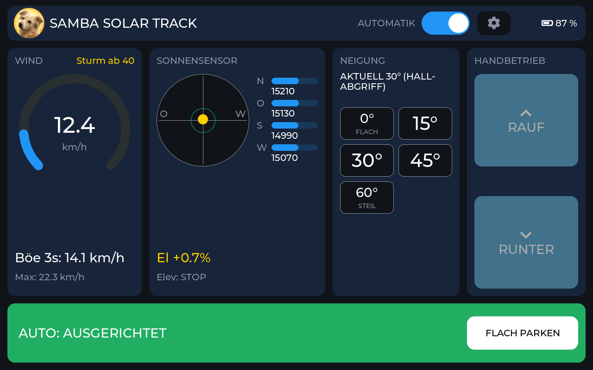
Die Steuerung zählt keine passenden Impulse: Es kommen keine, obwohl der Antrieb fahren müsste, sie zählen gegen die Fahrtrichtung, oder es kommen viel zu viele (Störimpulse). Prüfe das Kabel an J22, das HallTapBoard (Leuchten „24V“ und „5V OK“), die Spannung der Antriebe und die Zählrichtung. Solange die Warnung steht, sind nur 0° und 60° wählbar; Zwischenwinkel zeigen „HALL-ABGRIFF GESTOERT - KEINE FAHRT“ (Abb. 38). Sturmschutz, Parken, Automatik und Handbetrieb arbeiten weiter wie ohne Hall-Abgriff. Sobald eine Fahrt wieder passende Impulse liefert, verschwindet die Warnung von selbst; die Neigung ist ab der nächsten Endlage wieder bekannt. In der Weboberfläche erscheint dieselbe Warnung.
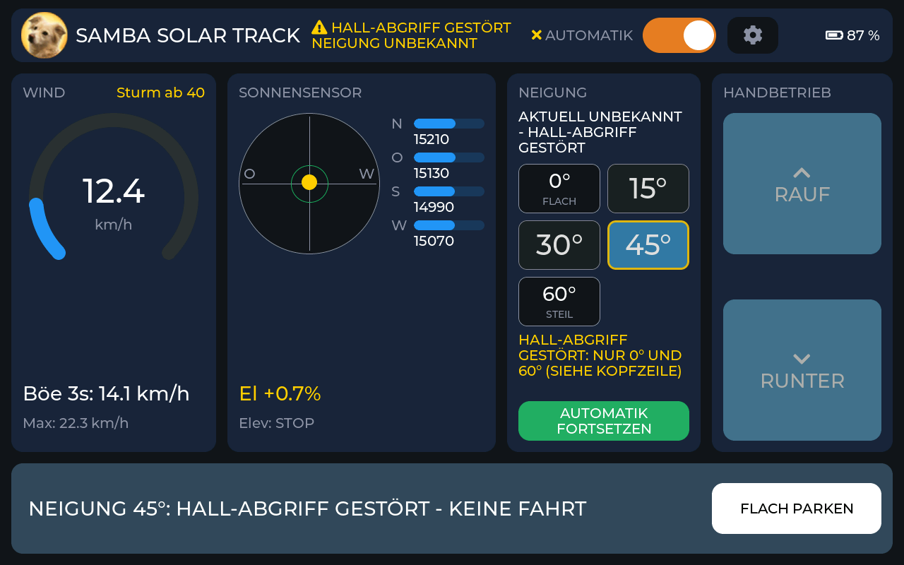
| Wert (WERTE → INBETRIEBNAHME) | Ab Werk | Erlaubt | Wozu |
|---|---|---|---|
| Hall-Abgriff vorhanden | nein | ja oder nein | Schaltet die Auswertung von J22 ein. Nur einschalten, wenn das HallTapBoard angeschlossen ist. |
| Hall-Zaehlrichtung umkehren | nein | ja oder nein | Für den Fall, dass die beiden Kanäle A und B andersherum ankommen; dann zählt die Steuerung rückwärts. |
| Hall-Schritte je Hub | nicht eingemessen | 1 000 bis 2 000 000; 0 = nicht eingemessen | Wie viele Hall-Schritte der ganze Weg von 0° bis 60° hat. Trägt das Einmessen ein. |
Alle drei Werte lassen sich nur ändern, solange kein Antrieb fährt.
[ 120.010][I][main ] Neigung auf Befehl: 30 Grad (vorher keine), Quelle Display [ 120.010][I][track ] Neigung 30 Grad: Bezugsfahrt noetig [ 168.420][I][motor ] Elevation: Endlage PLUS am Stillstand erkannt (Hall-Abgriff) nach 48410 ms [ 168.420][I][main ] Ausgang Elevation: RAUF -> STOP (Hall-Abgriff: Endlage am Stillstand) [ 168.420][I][hall ] Bezug Flachstellung (Stillstand, Stellung war unbekannt (Annahme: eigener Endschalter des Antriebs)), Stellung war unbekannt
Die Zeilen sind ein Beispiel im Format der Firmware. Die Statuszeile alle 5 Sekunden endet mit Hall-Abgriff mit „| Neigung 30.2 Grad (Hall), Ziel 30“.
Anlaufzeit 1,5 Sekunden und Stillstandzeit 1 Sekunde; Genauigkeit 0,2°; Störfilter 5 µs bei höchstens etwa 1 000 Impulsen pro Sekunde und Kanal; die Zählrichtung des Pulszählers; Fenster der Endlage 3 % des Wegs; Toleranz beim Einmessen 3 %; dass die Synchronsteuerung HAKIWO SCN4 die Hall-Leitung von Antrieb 1 mit dem Abgriff teilen kann; dass der Speicher, der einen Neustart übersteht, am Board hält. Steht die Elevation bei unbekannter Neigung still, nimmt die Firmware an, dass der Antrieb an seinem eigenen Endschalter steht.
Pausen für die Antriebe: die Einschaltdauer (in Vorbereitung, am Gerät ungeprüft)
Elektrische Linearantriebe dürfen nicht dauernd laufen, sonst werden sie zu heiß. Der Händler HAKIWO nennt für die Antriebe des Samba-Solar-Rack 2.0-E Plus eine Einschaltdauer von 10 % und höchstens 2 Minuten am Stück (Montagehandbuch, Kapitel 3.6 und 14.4). Die 10-Zoll-Firmware hält das für jeden Antrieb selbst ein. Auch das ist nur am Rechner gebaut und getestet.
- FahrzeitkontoFür jeden Antrieb führt die Firmware ein Konto. Jede Fahrt zieht davon ab, jede Sekunde Stillstand füllt es wieder auf (mit einem Neuntel der Zeit). Voll erlaubt das Konto 120 Sekunden Fahrt am Stück. Erwartet: Im normalen Betrieb mit kurzen Nachführfahrten merkst du davon nichts.
- PauseIst das Konto leer, beginnt eine Pause. Erwartet: Eine laufende Fahrt stoppt. Das Statusband wird orange und zeigt „PAUSE EINSCHALTDAUER: ANTRIEB WIEDER FREI IN 13:30“ (im Handbetrieb, bei „ausgerichtet“ und in der Ruhezeit) oder bei der Neigung auf Befehl „NEIGUNG 45°: PAUSE EINSCHALTDAUER, WEITER IN …“ (Abb. 20). Die Restzeit zählt herunter.
- Wieder freiSind 90 Sekunden Fahrzeit angespart, ist der Antrieb wieder frei. Nach einem ganz geleerten Konto dauert das etwa 13,5 Minuten. Erwartet: Das Statusband zeigt wieder den normalen Zustand; eine wartende Fahrt (Neigung, Einmessen) geht von selbst weiter.
Auch in der Pause fährt die Elevation flach, wenn ein Sturm kommt, der Windmesser ausfällt oder du FLACH PARKEN wählst. Diese Flachfahrten haben Vorrang. Alles andere wartet: Handfahrt, Nachführung und die Fahrt auf einen Winkel. Die Automatik beendet eine laufende Nachführfahrt, wenn die Pause beginnt, und startet in der Pause keine neue. Befehle aus dem Browser nimmt das Gerät an, der Antrieb wartet aber das Ende der Pause ab.
Ohne Endschalter erreicht eine Fahrt die Endlage nur, wenn sie die ganze Höchstlaufzeit am Stück fährt. Eine Bezugsfahrt, die Fahrt auf 0° oder 60° und die Bezugsfahrt beim Einmessen beginnen deshalb erst, wenn das Konto eine volle Fahrt erlaubt. Bis dahin zeigt das Display die Wartezeit. Wechsle Winkel deshalb nicht häufig.
Die 90 Sekunden bis zur Freigabe sind eine Annahme (eine volle Fahrt von 0° auf 60° mit Reserve) und werden am Rack geprüft. Nach einem Neustart beginnt das Konto wieder voll; die Fahrzeit vor dem Neustart zählt nicht mit.
[ 930.100][W][motor ] Elevation: Einschaltdauer erreicht -> Pause, Fahrt wieder in 810 s (Flachfahrt bei Sturm, Windmesser-Ausfall und Parken bleibt frei) [ 930.100][I][motor ] Elevation: Fahrt PLUS wegen Einschaltdauer beendet [ 930.100][I][main ] Ausgang Elevation: RAUF -> STOP (Zustand MANUAL) [ 1740.110][I][motor ] Elevation: Pause der Einschaltdauer beendet, Antrieb wieder frei
Bei Sturm erneut flach fahren (in Vorbereitung, am Gerät ungeprüft)
Ohne Endschalter am Tracker merkt sich die Firmware nach einer Fahrt über die ganze Höchstlaufzeit: „Hier ist die Endlage“ (Laufzeit-Endlage). Weiter in diese Richtung fährt sie dann nicht. Das ist richtig, solange die Antriebe sich wirklich bewegt haben. Fällt aber das Netzteil aus (das Board läuft dann auf dem Akku weiter), löst die Sicherung der Antriebe aus, oder bricht die Synchronsteuerung (zum Beispiel HAKIWO SCN4) eine Fahrt ab, schalten die Kontakte der Platine trotzdem, nur bewegt sich nichts, und die Firmware hält das Modul fälschlich für flach.
Deshalb hebt die 10-Zoll-Firmware eine Laufzeit-Endlage in Richtung „flach“ wieder auf und fährt erneut flach:
- Beim BeginnSobald ein Sturm beginnt, der Windmesser ausfällt oder du FLACH PARKEN wählst (auch gleich nach dem Einschalten in einem dieser Zustände). Erwartet: Die Elevation fährt flach, auch wenn sie laut Firmware schon flach liegt. Ohne Endschalter bleibt der Kontakt dabei die volle Höchstlaufzeit geschlossen.
- Alle 30 MinutenSolange der Sturm oder der Ausfall des Windmessers anhält, wiederholt sich das alle 30 Minuten (beim Parken nicht). Erwartet: Etwa alle 30 Minuten schließt der Kontakt für „flach“ noch einmal für die Höchstlaufzeit.
Jede dieser Fahrten endet weiter spätestens nach der Höchstlaufzeit. Sie hat Vorrang und läuft auch in einer Pause der Einschaltdauer. Mit eingebauten Endschaltern gibt es keine Laufzeit-Endlage; dann ändert sich nichts. Mit eingeschaltetem Hall-Abgriff endet die Fahrt nach etwa 1,5 Sekunden, wenn die Elevation nachweislich schon flach liegt; ist die Neigung unbekannt oder steht der Antrieb mitten im Weg, läuft sie wie ohne Hall-Abgriff bis zur Höchstlaufzeit.
Ob die Synchronsteuerung HAKIWO SCN4 es hinnimmt, dass die Steuerung in der Endlage bis zur Höchstlaufzeit weiter „flach“ drückt, ohne den Fehlercode 15 zu melden, ist nicht geklärt. Der Hersteller hat darauf nicht geantwortet (Stand 12.10.2026); geprüft wird es am Rack. Bis dahin ist das ein offener Punkt. Mit Hall-Abgriff endet eine Fahrt in die Endlage etwa 1 Sekunde, nachdem keine Impulse mehr kommen, statt erst nach der Höchstlaufzeit; die Frage bleibt dann für Flachfahrten bei unbekannter Neigung und für den Betrieb ohne Hall-Abgriff offen.
Ohne Hall-Abgriff sieht die Firmware nicht, ob sich die Antriebe bewegen. Die erneute Flachfahrt hilft nur bei Sturm, Windmesser-Ausfall und Parken. Mit eingeschaltetem Hall-Abgriff fallen fehlende Impulse auf (Warnung „HALL-ABGRIFF GESTOERT“ oder „Antrieb steht ohne Endlage“ im Log); beobachtet wird nur Antrieb 1. Der Eingang „24 V vorhanden“ der Platine meldet nur die Spannung an J11: am gemeinsamen Netzteil also auch dessen Ausfall, aber nie eine ausgelöste Sicherung der Antriebe.
[ 3600.000][I][track ] Zustand IDLE -> STORM (Auto ein, Boe 44.8 km/h, El +3, Az +0 Promille)
[ 3600.000][I][motor ] Elevation: Laufzeit-Endlage PLUS aufgehoben, neue Flachfahrt erlaubt
[ 3600.000][I][main ] Ausgang Elevation: STOP -> RAUF (Zustand STORM)
[ 3690.010][I][motor ] Elevation: Laufzeit-Endlage PLUS erreicht
… 30 Minuten später, der Sturm hält an …
[ 5400.000][D][track ] Zustand STORM haelt an: Flachfahrt wird erneut erlaubtOb im Log „PLUS“ oder „MINUS“ steht, hängt von der Einstellung „Richtung der Flachstellung“ ab; ab Werk ist flach = RAUF = PLUS.
Die Platine RearCircuitBoard_10 kann nur an der Hardware geprüft werden (Kapitel 9). Ohne Firmware schaltet kein Kontakt und keine Leuchte. Den Akku nicht anschließen.
9Erste Inbetriebnahme der Hardware
Diese Schritte prüfen die Platine ohne Firmware. Jeder Schritt hat ein klares Ergebnis. Geh erst weiter, wenn es stimmt. Die Schritte 4 bis 7 machst du mit der Platine auf dem Tisch, noch nicht am Board.
- Akku absteckenDer Stecker des Akkus am Board bleibt abgezogen. Erwartet: Der Akku ist mit nichts verbunden.
- Sichtprüfung und LötstellenAlle Lötstellen der Klemmen ansehen. Mit dem Durchgangsprüfer an J3 bis J6 prüfen, dass kein Stift mit seinem Nachbarn verbunden ist. Steckbrücke J16 nach Abschnitt „Windmesser“ setzen, J21 auf 2-3. Erwartet: Keine Lötbrücke, beide Brücken stecken.
- Prüfschritt SteckerVor dem ersten Einschalten jeden Stecker mit der Tabelle der Klemmen und dem Bild der Platine (Abb. 5) vergleichen: richtiger Stecker auf richtiger Klemme, Beschriftung stimmt. Dann J7, J10, J14 und J22 von der Seite ansehen. Erwartet: Jeder Stecker sitzt bündig auf seiner Grundleiste, kein Stift der Leiste ist frei, kein Stecker steht über das Ende einer Klemme hinaus. Sobald es eine Firmware für das 10,1-Zoll-Board gibt, gehört dazu: Beim Start erscheint keine Meldung zu Endschaltern oder Leuchten.
- Sperre erzwingen und messenDie Platine allein (noch nicht am Board) an 24 V anschließen, Steckbrücke J21 auf 1-2. Mit dem Multimeter an den Lötstellen von J1 messen: Pin 2 gegen Pin 6. Erwartet: 3,8 bis 4,1 V. Liegt der Wert höher, ist die Sperre fehlerhaft: Platine nicht verwenden.
- Betrieb und Wartezeit24 V aus, J21 auf 2-3, 24 V wieder ein (der Raum sollte 15 bis 30 °C warm sein). Die Spannung an J1 Pin 2 gegen Pin 6 beobachten. Erwartet: Zuerst etwa 4 V; nach 45 bis 101 Minuten (meist etwa 71 Minuten) springt sie auf 4,9 bis 5,2 V.
- KälteprüfungBei 4,9 bis 5,2 V kurz Kältespray neben die Kupferinsel oben links sprühen, nicht direkt auf Bauteile. Erwartet: Die Spannung fällt sofort auf etwa 4 V. Nach dem Aufwärmen bleibt sie zunächst bei 4 V; erst nach der Wartezeit steigt sie wieder auf etwa 5 V.
- WärmeprüfungDie Kupferinsel mit einem Heißluftgerät auf kleiner Stufe vorsichtig über 37 °C erwärmen; die Temperatur mit einem Thermometer an der Insel prüfen, nicht über 60 °C. Erwartet: Die Spannung fällt auf etwa 4 V. Nach dem Abkühlen kommt sie nach der Wartezeit wieder auf etwa 5 V. Diese Prüfung findet Lötfehler, die das Kältespray nicht findet.
- EinbauenPlatine nach Kapitel 5 mit Distanzbolzen und Pads auf das Board setzen. Erwartet: Bolzen und Pads sitzen unter der Insel und verrutschen nicht; die Platine liegt eben auf allen vier Bolzen.
- Board einschaltenSchiebeschalter des Boards auf EIN, 24 V einschalten. Erwartet: Das Board startet (das Display zeigt das Bild der Werks-Software oder bleibt ohne Firmware dunkel). Die Ladeleuchte des Boards, falls vorhanden, bleibt aus: Ohne Akku wird nicht geladen, sie leuchtet dann ohnehin nicht (Annahme).
- Schaltausgänge und EndschalterErst mit der Firmware für das 10,1-Zoll-Board (in Vorbereitung): Jede Taste am Display halten und mit dem Durchgangsprüfer durch den gesteckten Stecker zwischen den beiden Adern messen (Stecker der Schaltausgänge); jeden Endschalter drücken. Erwartet: Genau der zugehörige Kontakt schließt, genau der gedrückte Endschalter wird gemeldet.
Ob die Abschaltung bei Überspannung (Kapitel 5) arbeitet, lässt sich nur mit einem Labornetzteil am Muster prüfen; die Firmware kann es später nicht prüfen. Diese Prüfung gehört zum Messplan vor der Bestellung (Anhang 11 E).
Kältespray nur kurz und aus 10 bis 20 cm Abstand, Heißluft nur auf kleiner Stufe. Nichts an den Klemmen der 24 V berühren, solange sie anliegen.
10Begriffe einfach erklärt
- Abdeckkappe
- Ein Deckel aus Kunststoff, der das offene Ende eines Aluminiumprofils verschließt. Der Halter des Sonnensensors ersetzt eine solche Kappe und trägt dazu den Sensor.
- Abisolieren
- Die Kunststoffhülle (Isolierung) am Ende einer Ader auf einer bestimmten Länge entfernen, damit das blanke Metall in der Klemme Kontakt bekommt. Am besten mit einer Abisolierzange; die Drähte darunter dürfen dabei nicht eingeschnitten werden.
- Abschlusswiderstand
- Ein Widerstand von 120 Ω zwischen den Adern A und B einer RS485-Leitung, an deren beiden Enden. Er verhindert, dass Signale am Leitungsende zurückgeworfen werden.
- Abstandsbolzen
- Eine kleine Metallsäule mit Gewinde. Mit Außen- und Innengewinde ersetzt sie eine Schraube und trägt zugleich eine zweite Platine im richtigen Abstand. Das HallTapBoard braucht keine: Es wird in seinem Gehäuse direkt auf Domen aus Kunststoff verschraubt, damit über die Befestigung keine leitende Verbindung entsteht.
- Abwärtswandler
- Eine Schaltung, die aus einer höheren Gleichspannung eine niedrigere macht, hier aus 24 V die 5 V für das Board. Sie verliert dabei wenig Energie und wird kaum warm.
- Aderendhülse
- Ein kleines Metallröhrchen, das mit einer Zange auf das abisolierte Ende einer feindrähtigen Ader gepresst wird. Es hält die vielen dünnen Drähte zusammen, damit keiner absteht und die Ader fest in der Klemme sitzt.
- ADS1115
- Ein Messbaustein. Er wandelt die Spannung der Lichtfühler in Zahlen um, mit denen der Rechner arbeiten kann.
- Aluminiumprofil (Nutprofil)
- Ein Stab aus Aluminium mit gleichbleibendem Querschnitt, hier 40 × 40 mm, mit einer Nut auf jeder Seite (Nut 8) und einer Bohrung in der Mitte. Aus solchen Profilen wird zum Beispiel das Samba-Solar-Rack gebaut.
- Akku (Lithium-Akku)
- Eine wiederaufladbare Batterie. Der Akku des 10,1-Zoll-Boards hat 3,7 V. Lithium-Akkus dürfen nur in einem begrenzten Temperaturbereich geladen werden, sonst altern sie schnell oder werden gefährlich.
- Anlaufverlust
- Der Teil jeder Fahrt, in dem sich der Rahmen noch nicht bewegt, zum Beispiel weil Relais anziehen oder die Steuerung der Antriebe langsam anfährt. Bei der Neigung auf Befehl lässt er sich unter WERTE eintragen.
- Anode / Kathode
- Die beiden Anschlüsse einer Diode. Eine Diode lässt Strom nur in eine Richtung durch, von der Anode zur Kathode. Bei einer Leuchtdiode ist deshalb die Anode Plus und die Kathode Minus. Auf der Platine zeigt ein Strich oder Winkel im Aufdruck meist die Kathode an; bei der großen Diode D5 ist die Kathode die Kühlfahne.
- ASA / PETG
- Zwei Kunststoffe für den 3D-Drucker. ASA hält Sonne und Wärme bis etwa 100 °C aus und eignet sich deshalb für das Gehäuse des HallTapBoard im Steuerkasten; PETG ist leichter zu drucken, wird aber schon ab etwa 80 °C weich (Werte als Richtwerte, nicht nachgeschlagen).
- Aufspielen (Flashen)
- Die Firmware in den Speicher des Boards schreiben, über ein USB-Kabel oder über das Netz.
- Azimut
- Die Drehung des Moduls von Ost nach West.
- Bestückungsvorschau
- Ein Bild der fertig bestückten Platine, das JLCPCB bei der Bestellung vor dem Bezahlen zeigt. Darin prüfst du, ob jedes Bauteil richtig herum sitzt. Ein roter Punkt markiert bei gepolten Bauteilen die Seite, die JLCPCB als Bezug nimmt; das ist nicht immer Pin 1.
- Bewegungsmelder
- Erkennt, ob sich vor einem Gerät etwas bewegt. Hier übernimmt das die eingebaute Kamera des Displays: Die Firmware vergleicht jedes Bild mit den vorigen, ohne es zu speichern.
- Bezug, Bezugsfahrt
- Ein Bezug ist eine Endlage, an der die Stellung sicher bekannt ist. Die Bezugsfahrt fährt dorthin (meist flach), bevor die Neigung auf Befehl einen Zwischenwinkel anfährt. Nach einem Bezug ist die Unsicherheit null.
- Bildschirmschoner
- Eine dunkle, ruhige Anzeige, die das Display zeigt, wenn eine Weile niemand davor steht. Sie spart Strom und blendet nicht. Eine Berührung oder Bewegung holt die normale Anzeige zurück.
- Böe
- Ein kurzer, kräftiger Windstoß. Die Steuerung rechnet mit dem Mittel aus drei Sekunden.
- Bootloader
- Ein kleines Startprogramm am Anfang des Speichers. Es startet beim Einschalten die eigentliche Firmware. Im Werksabbild ist es enthalten.
- Buchsenleiste / Stiftleiste
- Zwei Gegenstücke zum Zusammenstecken von Platinen: Die Stiftleiste hat Stifte, die Buchsenleiste passende Öffnungen. Die Platine RearCircuitBoard_10 steckt mit ihrer Stiftleiste J1 in der Buchsenleiste J8 des Boards.
- Codec (Audio-Codec)
- Ein Baustein, der Zahlen aus dem Rechner in eine Tonspannung umwandelt. Auf dem 10,1-Zoll-Board heißt er ES8311; ein kleiner Verstärker (NS4150B) treibt damit den Lautsprecher.
- dBFS
- Maß für die Lautstärke eines digitalen Tons: 0 dBFS ist der lauteste Ton, den der Codec ausgeben kann, kleinere (negative) Werte sind leiser. 3 dB weniger bedeutet halbe Leistung.
- Distanzbolzen
- Eine kleine Säule aus Messing mit Innengewinde an beiden Enden. Hier liegt einer ohne Schraube zwischen zwei Wärmeleitpads und leitet die Temperatur der Rückwand zum Fühler auf der Platine.
- Download-Modus
- Ein besonderer Startzustand des Chips, in dem er neue Firmware über USB annimmt statt sie zu starten. Der PC schaltet ihn normalerweise selbst ein; von Hand: BOOT halten, RESET drücken, BOOT loslassen.
- Durchgangsprüfer
- Ein einfaches Messgerät, oder eine Stellung am Multimeter, das piept, wenn zwei Punkte elektrisch verbunden sind. Damit prüfst du zum Beispiel, ob ein Kontakt geschlossen ist.
- Eindrähtig / feindrähtig
- Eine eindrähtige Ader besteht aus einem einzigen, steifen Draht. Eine feindrähtige Ader (Litze) besteht aus vielen dünnen Drähten und ist biegsam. Feindrähtige Adern bekommen vor dem Einstecken in einen Federanschluss am besten eine Aderendhülse.
- Einmessen
- Das geführte Messen der beiden Fahrzeiten am Display (Einrichtung → WERTE → INBETRIEBNAHME → FAHRZEIT EINMESSEN). Ohne Einmessen kennt die Neigung auf Befehl nur 0° und 60°.
- Einschaltdauer
- Der Anteil der Zeit, den ein Antrieb fahren darf, ohne zu heiß zu werden. Hier sind es 10 % und höchstens 2 Minuten am Stück; danach braucht der Antrieb eine Pause. Die 10-Zoll-Firmware hält das selbst ein; nur die Flachfahrt bei Sturm, Windmesser-Ausfall und Parken fährt auch in der Pause.
- Elefantenfuß
- Beim 3D-Druck wird die erste Schicht auf das Druckbett gedrückt und dabei etwas breiter. Dadurch können feine Vertiefungen auf der Unterseite eines Teils zulaufen. Viele Druckprogramme haben dafür eine Ausgleichseinstellung.
- Elektrofachkraft
- Eine Person mit elektrotechnischer Ausbildung und Erfahrung, die Arbeiten an Netzspannung (230 V) ausführen darf. Netzteile anschließen, Steckdosen setzen oder Leitungen am Stromnetz verlegen gehört in ihre Hände.
- Elektronische Sicherung
- Ein kleiner Baustein, der wie eine Sicherung schützt, aber nicht durchbrennt. Fließt zu viel Strom, begrenzt er ihn oder schaltet ab und versucht es nach kurzer Zeit von selbst wieder. Auf der Platine RearCircuitBoard_10 schützen zwei davon den 24-V-Eingang (U16) und die 5 V zum Board (U15).
- Elevation
- Die Neigung des Moduls, von flach bis steil.
- Endschalter
- Ein Schalter am Ende des Fahrwegs. Er meldet: weiter geht es nicht.
- esptool
- Das Programm des Chip-Herstellers Espressif, das Firmware auf ESP32-Boards schreibt. Die Browser-Seiten nutzen es im Hintergrund.
- Extended / Basic
- Die beiden Klassen der Teilebibliothek von JLCPCB. Für jeden Bauteiltyp der Klasse „Extended“ berechnet JLCPCB je Auftrag eine Rüstgebühr, für „Basic“ nicht.
- Fahrzeit
- Die Zeit, die der Antrieb für den ganzen Weg von 0° nach 60° (steiler) oder zurück (flacher) braucht. Daraus schätzt die Firmware die Neigung.
- Federanschluss (Push-in)
- Ein Anschluss ohne Schraube: Eine Feder im Stecker klemmt die Ader fest. Eine steife Ader oder eine Ader mit Aderendhülse schiebst du einfach bis zum Anschlag hinein. Zum Lösen drückst du den kleinen Drücker neben der Öffnung und ziehst die Ader heraus.
- Fensterkomparator
- Eine Schaltung, die prüft, ob ein Messwert zwischen zwei Grenzen liegt, hier ob die Temperatur zwischen 10 und 35 °C liegt.
- Firmware
- Die Software, die auf dem Board läuft.
- Flash
- Der Speicher des Boards, in dem die Firmware und die gespeicherten Einstellungen stehen. Er behält seinen Inhalt auch ohne Strom.
- Fühlerleitung (Remote Sense)
- Zwei dünne Zusatzadern mancher Netzteile, über die das Netzteil die Spannung an einer entfernten Stelle misst und den Verlust auf der Leitung ausgleicht. Bei Samba Solar Track bleiben sie am Netzteil: Bis zu den Antrieben geführt, würde die Spannung an der Steuerung zu hoch.
- Füllgrad (Infill)
- Wie dicht das Innere eines gedruckten Teils gefüllt ist, in Prozent. 100 % heißt ganz voll; das macht ein Teil schwer und fest, braucht aber viel Filament.
- Galvanisch getrennt
- Zwei Stromkreise ohne leitende Verbindung zwischen sich. Ein Signal kommt trotzdem hinüber, zum Beispiel mit Licht in einem Optokoppler. So können die beiden Seiten verschiedene Massen und Netzteile haben, ohne sich zu stören.
- Gegenmutter
- Eine Mutter, die eine Kabelverschraubung von innen in der Gehäusewand festhält. Die Verschraubung wird von außen durch das Loch gesteckt, innen kommt die Gegenmutter auf ihr Gewinde; dann werden beide gegeneinander angezogen.
- Gestell G1 / G2
- Die Bauform des Samba-Solar-Rack (Lage der Drehachse). Sie bestimmt, welcher Weg des Antriebs welcher Neigung entspricht. G1: Rack 2.0-D und 2.0-E; G2: 2.0-E Plus, 2.1 und 2.1 Plus. Für andere Gestelle gibt es „linear“ (eine Annahme).
- Gewindeeinsatz
- Eine kleine Hülse aus Messing mit Innengewinde, die mit dem heißen Lötkolben in ein Loch eines gedruckten Teils eingeschmolzen wird (auch „Einschmelzmutter“). Danach kann man dort eine Metallschraube oft ein- und ausdrehen, ohne dass das Gewinde im Kunststoff ausreißt. Das Gehäuse des HallTapBoard hat acht Einsätze ruthex M3, der Halter des Sonnensensors zwei Einsätze ruthex M4.
- Gewindestange
- Ein Stab mit Gewinde über die ganze Länge, hier M8 aus Edelstahl. Beim Pendelhalter ist sie die Achse, um die sich das Pendel dreht.
- Glitch-Filter (Störfilter)
- Ein Filter im Pulszähler, der sehr kurze Pulse nicht mitzählt. Am Impulseingang J22 gelten Pulse unter 5 µs als Störung.
- GND
- Masse, der gemeinsame Minuspol der Schaltung.
- Hall-Abgriff
- Das Abnehmen der Impulse der Hall-Sensoren an der Synchronsteuerung, ohne sie zu stören. Das macht das HallTapBoard. Ist unter WERTE „Hall-Abgriff vorhanden“ eingeschaltet, zählt die 10-Zoll-Firmware die Impulse und kennt so die Neigung (Kapitel 8).
- Hall-Schritt
- Jeder Wechsel zwischen LOW und HIGH (Flanke) auf einem der beiden Kanäle A und B. Auf einen Impuls kommen 4 Hall-Schritte. „Hall-Schritte je Hub“ ist die Zahl der Schritte für den ganzen Weg von 0° bis 60°.
- Hall-Sensor
- Ein kleiner Sensor, der ein Magnetfeld erkennt. In vielen Linearantrieben sitzt einer am Motor: Bei jeder Umdrehung gibt er Impulse ab. Wer die Impulse zählt, weiß, wie weit der Antrieb gefahren ist. Mit zwei Kanälen (A und B) erkennt man auch die Richtung.
- HallTapBoard
- Eine eigene kleine Platine für den Steuerkasten (Entwurf 0.5 mit 3D-Druck-Gehäuse, noch nicht gefertigt). Sie greift an der Synchronsteuerung HAKIWO SCN4 die Impulse der Hall-Sensoren von Antrieb 1 ab und gibt sie über Optokoppler galvanisch getrennt als zwei potentialfreie Kontakte an den Impulseingang J22 der Platine RearCircuitBoard_10 weiter. Versorgt wird sie aus den 24 V der Antriebe (Kapitel 6).
- HTTPS
- Die verschlüsselte Form der Verbindung zu einer Internetseite. Das Gerät prüft dabei mit einer eingebauten Liste vertrauenswürdiger Stellen (Zertifikate), dass es wirklich mit der Seite des Projekts spricht.
- Hiccup
- Englisch für Schluckauf: Bei einem Kurzschluss schaltet der Wandler ab, wartet kurz und versucht es erneut, immer wieder, bis der Fehler behoben ist. So wird nichts zu heiß. Manche Netzteile verhalten sich bei Überlast genauso; für das gemeinsame Netzteil ist das ungeeignet.
- HIGH / LOW
- Die zwei Zustände eines digitalen Signals: Spannung da (HIGH) oder keine Spannung (LOW).
- Höchstlaufzeit
- So lange darf ein Antrieb am Stück fahren. Mit Endschaltern ist eine längere Fahrt ein Fehler; ohne Endschalter gilt die Endlage danach als erreicht (Laufzeit-Endlage).
- Hysterese
- Der Abstand zwischen Einschalt- und Ausschaltschwelle. Am Impulseingang J22 schaltet der Komparator bei etwa 2,05 V in die eine und erst bei etwa 2,36 V in die andere Richtung. Kleine Störungen auf der Leitung erzeugen so keine falschen Impulse.
- I2C
- Eine Verbindung aus zwei Leitungen (SDA und SCL), an der mehrere Bausteine hängen. Jeder hat eine eigene Adresse.
- Kabelschirm
- Ein Geflecht oder eine Folie um die Adern eines Kabels. An einer Seite mit GND verbunden, hält er Störungen von den Adern fern.
- Kabelverschraubung (PG-Verschraubung)
- Eine Durchführung für ein Kabel durch eine Gehäusewand. Beim Anziehen der Hutmutter drückt sich ein Dichtring um den Kabelmantel: Das Kabel ist dann dicht und gegen Herausziehen gesichert (Zugentlastung). „PG 11“ ist die Größe des Gewindes (Panzergewinde); jede Größe dichtet nur Kabel in einem bestimmten Bereich des Außendurchmessers, bei der PG 11 von Lapp 4 bis 10 mm.
- Kältespray
- Ein Spray aus dem Elektronikhandel, das eine Stelle in Sekunden stark abkühlt. Damit prüfst du, ob ein Temperaturfühler richtig reagiert.
- Kernloch
- Die Bohrung, in die ein Gewinde geschnitten wird. Für M8 hat sie 6,8 mm; die Mittelbohrung vieler Aluminiumprofile 40 × 40 hat genau dieses Maß.
- Komparator
- Ein Baustein, der zwei Spannungen vergleicht und am Ausgang meldet, welche höher ist. Auf der Platine RearCircuitBoard_10 arbeiten zwei davon: in der Ladesperre (U18) und am Impulseingang J22 (U22).
- Kriechstrecke / Luftstrecke
- Der kürzeste Weg zwischen zwei Leitern über die Oberfläche der Platine (Kriechstrecke) bzw. durch die Luft (Luftstrecke). Je länger, desto schwerer findet ein Fehlerstrom, etwa über Feuchtigkeit und Schmutz, einen Weg.
- Kugellager
- Ein Ring mit Kugeln zwischen Innen- und Außenring, damit sich etwas fast ohne Reibung dreht. Das Lager 608 (8 × 22 × 7 mm) ist sehr verbreitet, zum Beispiel in Inlinern.
- Kühlfahne
- Eine große Metallfläche am Gehäuse eines Bauteils, die flach auf der Platine aufliegt und angelötet wird. Über sie und das Kupfer der Platine gibt das Bauteil seine Wärme ab. Bei der Diode D5 ist die Kühlfahne zugleich ein Anschluss, die Kathode.
- Lader
- Die Schaltung auf dem Board, die den Akku aus den 5 V lädt. Sie lädt nur, wenn ihre Eingangsspannung hoch genug ist (etwa 4,5 V).
- Ladesperre
- Die Schaltung auf der Platine RearCircuitBoard_10, die das Laden des Akkus verhindert, wenn es zu kalt oder zu warm ist: Sie senkt dann die 5 V für das Board auf etwa 4 V.
- Laufzeit-Endlage
- Ohne Endschalter am Tracker gilt eine Endlage als erreicht, wenn der Kontakt die ganze Höchstlaufzeit geschlossen war; der Antrieb steht dann an seinem eigenen, eingebauten Endschalter. Sie kann falsch sein, wenn die Antriebe dabei keine Spannung hatten oder ihre Steuerung die Fahrt abgebrochen hat. Mit Hall-Abgriff gibt es stattdessen die genauere Stillstand-Endlage.
- Leistungsminderung (Derating)
- Ein Netzteil liefert bei Hitze weniger als seine Nennleistung. Wie viel, zeigt eine Kurve im Datenblatt. Deshalb das Netzteil schattig montieren.
- Leuchtdiode (LED)
- Ein kleines Bauteil, das leuchtet, wenn Strom in der richtigen Richtung hindurchfließt. Sie braucht einen Vorwiderstand, der den Strom begrenzt.
- Lichtleiter
- Ein Stab aus klarem Kunststoff (hier Acrylglas, PMMA), der Licht wie ein Rohr weiterleitet: Was unten hineinleuchtet, kommt oben am Ende heraus. So sieht man eine Leuchte im Gehäuse von außen, und das Loch im Deckel ist trotzdem zu.
- Lichtschacht
- Ein kurzes Rohr vom Deckel eines Gehäuses bis knapp über eine Leuchte auf der Platine. Es führt das Licht zum Loch im Deckel, so dass man die Leuchte von außen sieht, ohne den Deckel zu öffnen.
- Linearantrieb
- Ein Motor, der eine Stange ein- und ausfährt.
- Lötbrücke
- Lötzinn, das beim Löten ungewollt zwei benachbarte Stifte verbindet. Was getrennt sein soll, ist dann elektrisch verbunden. Du findest sie mit dem Durchgangsprüfer: Er piept zwischen den beiden Stiften. Zum Entfernen das überschüssige Zinn mit dem heißen Lötkolben wegziehen und danach erneut prüfen.
- Manifest
- Eine kleine Textdatei auf der Seite des Projekts. Sie nennt die neueste Firmware: Versionsnummer, Datum, Größe, eine Prüfsumme der Datei und die Signatur. Daran erkennt das Gerät, ob es eine neuere Firmware gibt und ob die Datei echt und vollständig ist.
- Modbus-RTU
- Eine verbreitete „Sprache“ für Messgeräte. Das Board fragt, das Gerät antwortet mit dem Messwert und einer Prüfsumme.
- Nachlauf
- So weit dreht der Antrieb nach dem Abschalten noch weiter. Mit Hall-Abgriff misst die Steuerung den Nachlauf je Richtung und schaltet bei der Fahrt auf einen Winkel um so viel früher ab.
- NC / NO
- Öffner (normally closed) und Schließer (normally open). Beschreibt, ob ein Kontakt im Ruhezustand geschlossen oder offen ist.
- Neigung auf Befehl
- Die Elevation fährt auf einen gewählten Winkel und bleibt dort; die Automatik pausiert, bis du sie fortsetzt. Im Log heißt der Zustand POSITION. Nur 10-Zoll-Version, nur bei einer Achse.
- NTC
- Ein Widerstand, dessen Wert mit steigender Temperatur sinkt. Damit misst die Platine die Temperatur.
- Optokoppler
- Ein Bauteil, das ein Signal mit Licht überträgt: Eine kleine Leuchtdiode auf der einen Seite schaltet einen Transistor auf der anderen. Ein- und Ausgang sind elektrisch getrennt. Der Ausgang wirkt wie ein potentialfreier Kontakt.
- PCA9538
- Ein Baustein mit acht zusätzlichen Ein- und Ausgängen, gesteuert über I2C.
- Pendel
- Ein Körper, der drehbar aufgehängt ist und sich durch sein Gewicht von selbst senkrecht nach unten stellt. Der Pendelhalter nutzt das, damit der Windmesser immer senkrecht steht.
- PhotoMOS
- Ein elektronischer Schalter ohne bewegte Teile. Eine kleine Leuchtdiode im Inneren schaltet den Kontakt, die beiden Seiten sind elektrisch getrennt.
- Polwendung
- Plus und Minus am Motor tauschen, damit er rückwärts läuft.
- Polymer-Kondensator
- Ein Kondensator mit festem Kunststoff statt flüssigem Inhalt. Er hält lange und dämpft Spannungsschwankungen gut.
- Potentialfrei
- Ein Kontakt, der mit keiner Spannung der Steuerung verbunden ist. Er verhält sich wie ein einfacher Taster mit zwei Anschlüssen.
- Pull-up / Pull-down
- Ein Widerstand, der eine Leitung auf einen festen Zustand zieht, solange niemand sie steuert.
- Pulszähler (PCNT)
- Ein Teil des Rechners ESP32-P4, der Impulse an einem Pin selbstständig zählt, auch sehr schnelle, ohne das Programm zu belasten. Die 10-Zoll-Firmware zählt damit die Impulse vom Eingang J22, wenn der Hall-Abgriff eingeschaltet ist.
- Quadratur
- Zwei Signale (Kanal A und B), die um eine Viertelperiode gegeneinander versetzt sind. Aus der Reihenfolge, in der sie wechseln, erkennt die Steuerung die Richtung der Bewegung.
- Raster
- Der Abstand von Mitte zu Mitte zwischen zwei benachbarten Anschlüssen einer Klemme oder Stiftleiste, zum Beispiel 3,5 mm. Stecker und Klemme müssen dasselbe Raster haben.
- RearCircuitBoard_10
- Die eigene Platine für das 10,1-Zoll-Board ESP32-P4-WIFI6-Touch-LCD-10.1. Sie sitzt außen auf der Rückwand des Geräts und steckt mit der Stiftleiste J1 in dessen Buchsenleiste J8 (in Vorbereitung).
- Relais
- Ein elektrisch gesteuerter Schalter. Ein kleiner Strom schaltet einen großen.
- RGB-Leuchte
- Drei Leuchtdioden in einem Gehäuse: Rot, Grün und Blau. Rot und Grün zusammen ergeben Gelb.
- RS485
- Eine robuste Datenverbindung über zwei Leitungen (A und B), geeignet für lange Kabel im Freien.
- Schlüssel (Signierschlüssel)
- Ein Paar zusammengehöriger Zahlen. Mit dem geheimen Teil unterschreibt der Entwickler eine neue Firmware; den öffentlichen Teil trägt jede Firmware in sich und prüft damit die Unterschrift. Den geheimen Teil hat nur der Entwickler.
- Schutzart (IP65, IP67)
- Gibt an, wie gut ein Gerät gegen Staub und Wasser geschützt ist. Die erste Ziffer steht für Staub (6 = staubdicht), die zweite für Wasser (5 = Strahlwasser, 7 = kurzes Untertauchen). Ein Netzteil im Freien braucht eine hohe Schutzart.
- Schutzkleinspannung (SELV)
- Kurz für „safety extra-low voltage“: eine so kleine Spannung, dass sie bei Berührung nicht gefährlich ist, und die vom Stromnetz sicher getrennt erzeugt wird, zum Beispiel von einem dafür zugelassenen Netzteil. Bei Samba Solar Track liegen an der Platine höchstens 30 V Gleichspannung.
- Selbsthaltung
- Eine Schaltung, die sich nach dem Auslösen selbst festhält. Hier hält sie den 24-V-Eingang aus, bis die 24 V abgeschaltet werden.
- Selbsttest
- Eine kurze Prüfung, die eine eben aufgespielte Firmware an sich selbst macht: Läuft das Display, und antwortet der Baustein der Schaltausgänge auf der Platine (in der Simulation reicht das Display)? Ist das WLAN eingeschaltet, muss sich das Gerät außerdem seit dem Neustart mindestens einmal mit dem WLAN verbunden haben. Erst danach gilt die neue Firmware als gut. Besteht sie die Prüfung nicht, kehrt das Gerät zur bisherigen Firmware zurück.
- Signatur (digitale Unterschrift)
- Eine Zahlenfolge, die nur mit dem geheimen Schlüssel des Projekts erzeugt werden kann. Ändert jemand auch nur ein Zeichen der unterschriebenen Datei, passt sie nicht mehr. So nimmt das Gerät nur Firmware an, die wirklich vom Projekt stammt.
- Sicherung, selbstrückstellend
- Eine Sicherung, die bei zu viel Strom heiß und hochohmig wird und sich nach dem Abkühlen von selbst wieder schließt. Man muss sie nicht tauschen.
- Simulation
- Ein Testbetrieb ohne die Platine RearCircuitBoard_10: Die Firmware bildet Tracker, Sensoren und Antriebe nur nach und schaltet nichts.
- SMD
- Kurz für „surface-mounted device“: Bauteile, die flach auf die Oberfläche der Platine gelötet werden, ohne Löcher. JLCPCB bestückt sie mit Maschinen. Das Gegenstück sind Durchsteckteile wie Klemmen und Stiftleisten, deren Stifte durch Löcher der Platine gesteckt und dann verlötet werden.
- Soft Termination
- Kondensatoren mit nachgiebigen Anschlüssen. Biegt sich die Platine, reißen sie seltener.
- Spannungsregler
- Ein Bauteil, das aus einer höheren, schwankenden Spannung eine feste, niedrigere macht, zum Beispiel aus 24 V genau 5 V. Ein einfacher Regler (Linearregler) wie der TPS7B69 auf dem HallTapBoard wandelt den Rest der Spannung in Wärme um.
- Spannungsteiler
- Zwei Widerstände hintereinander, die eine Spannung in einem festen Verhältnis teilen. Auf dem 10,1-Zoll-Board teilen R92 und R93 die Akkuspannung auf ein Drittel, damit der Messeingang des Chips sie messen kann.
- Spannungsverlust (Spannungsabfall)
- Jede Leitung hat einen kleinen Widerstand. Fließt Strom, geht darauf ein Teil der Spannung verloren: je länger und dünner die Leitung und je größer der Strom, desto mehr. Gerechnet wird mit Hin- und Rückader.
- Steckbare Klemme
- Eine Klemme aus zwei Teilen: Die Grundleiste ist auf die Platine gelötet, die Adern kommen in den losen Stecker. Meist hält sie eine kleine Schraube, bei den Schaltausgängen der Platine RearCircuitBoard_10 ein Federanschluss. So lässt sich die Platine tauschen, ohne die Adern zu lösen.
- Steckbrücke (Jumper)
- Ein kleiner Stecker, der zwei nebeneinander liegende Stifte verbindet. Durch Umstecken wird eine Verbindung ein- oder ausgeschaltet.
- Stellring
- Ein Ring aus Metall mit einer Klemmschraube, der auf einem Rohr oder einer Welle festgeschraubt wird. Er verhindert, dass ein Teil verrutscht oder herunterfällt.
- Sternverdrahtung
- Jeder Verbraucher bekommt seine eigene Leitung direkt von den Klemmen des Netzteils, wie die Strahlen eines Sterns. So fließt der große Strom der Motoren nicht über die Leitung der Steuerung, und jede Leitung hat ihre eigene, passende Sicherung.
- Stillstand-Endlage
- Eine Endlage, die die Steuerung mit Hall-Abgriff daran erkennt, dass trotz eingeschaltetem Ausgang keine Hall-Schritte mehr kommen: nach einem Anlauf von 1,5 Sekunden 1 Sekunde lang keiner (Annahmen). Die Fahrt endet dann sofort, nicht erst nach der Höchstlaufzeit. Steht der Antrieb dagegen mitten im Weg, beendet die Steuerung die Fahrt ohne Endlage („Antrieb steht ohne Endlage“).
- Stirnwand
- Die geschlossene Wand am Ende der Grundleiste einer steckbaren Klemme. Sie hält den Stecker seitlich, so dass er nicht versetzt eingesteckt werden kann.
- Strombegrenzung (CV+CC)
- Ein Netzteil mit Konstantspannung (CV) und Strombegrenzung (CC) hält die Spannung, bis der Höchststrom erreicht ist; darüber begrenzt es den Strom und liefert weiter, statt abzuschalten. Das Gegenstück ist ein Netzteil mit Hiccup.
- Synchronsteuerung
- Ein Steuergerät, das zwei Antriebe gleich schnell fahren lässt, damit sich das Gestell nicht verwindet, zum Beispiel die HAKIWO SCN4 am Samba-Solar-Rack 2.0-E Plus. Die Platine schaltet nur ihren Taster-Eingang.
- Totzeit
- Die Pause zwischen Stopp und Fahrt in die Gegenrichtung.
- Treiber
- Ein kleines Programm für den PC, damit er ein angeschlossenes Gerät, hier den USB-Baustein CH343 des Boards, als Anschluss erkennt.
- Trennstrecke
- Ein Streifen der Platine ohne Kupfer zwischen zwei Teilen der Schaltung, die nicht leitend verbunden sein dürfen. Auf dem HallTapBoard ist er 7 mm breit; nur die Optokoppler überbrücken ihn, mit Licht statt Strom.
- Unsicherheit
- Wie weit die angezeigte Neigung höchstens daneben liegen kann, geschätzt. Sie wächst mit jeder Fahrt und ist nach einem Bezug null. Ab 6° zeigt das Display „UNBEKANNT“.
- Verpolschutz
- Eine Diode im Eingang der Versorgung, die nur in der richtigen Richtung Strom durchlässt. Sind Plus und Minus vertauscht angeschlossen, sperrt sie, und die Schaltung dahinter bekommt keine Spannung und nimmt keinen Schaden. Auf dem HallTapBoard bleiben dann beide Leuchten dunkel.
- Via
- Eine kleine durchkontaktierte Bohrung, die die Kupferlagen einer Platine verbindet. Auf der Platine RearCircuitBoard_10 sind alle Vias gefüllt und verschlossen, damit beim Löten kein Zinn hineinläuft.
- Wärmeleitpad
- Ein weiches, elektrisch isolierendes Kissen, das Wärme gut leitet und Spalte zwischen zwei Teilen ausfüllt.
- Web Serial
- Eine Fähigkeit mancher Browser (Chrome, Edge, Opera, neuere Firefox), mit einem Gerät am USB-Anschluss zu sprechen. Damit lässt sich Firmware ohne eigenes Programm aufspielen.
- Werksabbild (factory.bin)
- Die Datei mit allem, was ein leeres Board zum Starten braucht: Bootloader, Aufteilung des Speichers und Firmware. Sie wird an den Anfang des Speichers (0x0) geschrieben und löscht die gespeicherten Einstellungen.
- Wunschwinkel
- Ein selbst eingestellter Winkel von 1 bis 59° für die Neigung auf Befehl, zusätzlich zu 0°, 30° und 60°.
- Zweireihige Steckklemme
- Eine steckbare Klemme mit zwei Reihen von Anschlüssen übereinander. Bei den Schaltausgängen der Platine RearCircuitBoard_10 sind von den Stiften nur zwei schräg gegenüberliegende belegt: bei RAUF und RUNTER (J3, J4) zwei von vier, bei OST und WEST (J5, J6) die beiden äußeren von sechs. Ihr Stecker passt auf keine einreihige Klemme und nicht auf J11. Ein Stecker von RAUF oder RUNTER in OST oder WEST, oder umgekehrt, auch versetzt gesteckt, berührt höchstens einen Kontaktstift und schaltet nichts; ein fremder Stecker kann den Kontakt deshalb nicht überbrücken.
11Anhang
Stückliste, Bezugsquellen, Kosten, die Belegung der Stiftleiste, der Messplan vor der Bestellung und das HallTapBoard (G). Stand: Entwurf 0.10 vom 11. Oktober 2026 (Entwurf 0.9 vom 8. Oktober 2026, ergänzt um die Stege an der Fühlerinsel und den Impulseingang J22).
A. Stückliste (Bestückungsvariante smd)
JLCPCB bestückt alle 233 SMD-Teile (83 Nummern, davon 37 der Klasse „Extended“ und 46 „Basic“; R92 und C38 bleiben frei). In der Bestückungsvariante „voll“ lötet JLCPCB zusätzlich die 15 Klemmen und Stiftleisten ein (248 Teile, 91 Nummern). Der Impulseingang J22 (11.10.2026) bringt 20 SMD-Teile und keinen neuen Extended-Typ. Die Bezeichner stehen auch im Aufdruck der Platine.
| Bauteil | Typ | JLCPCB-Nr. | Klasse | Stück | Bezeichner | Wofür |
|---|---|---|---|---|---|---|
| Messbaustein | ADS1115IDGS (VSSOP-10) | C37593 | Extended | 2 | U1, U20 | Sonnensensor (0x48); Überwachung (0x49) |
| E/A-Baustein | PCA9538PW, TI (TSSOP-16) | C201530 | Extended | 2 | U2, U8 | Schaltausgänge/ |
| Schaltkontakt | PhotoMOS AQY212GS (SOP-4) | C415471 | Extended | 4 | K1–K4 | Schaltausgänge, 60 V / 1 A |
| Überspannungsschutz | TPD4E1U06DBV (SOT-23-6) | C124691 | Extended | 6 | U3, U4, U6, U10, U13, U14 | Eingänge, Sensorversorgung, Leuchten, LED_5V |
| Strombegrenzer | TPS2553DBV (SOT-23-6) | C55266 | Extended | 2 | U5, U9 | Sensorversorgung, Leuchten |
| TVS-Diode | SMAJ33CA (SMA), bidirektional | C115251 | Extended | 8 | D1–D4, D11, D12, D16, D17 | über den Kontakten; RS485 A/B; Impulse A/B (J22) |
| RS485-Transceiver | THVD2410DR, TI (SOIC-8), ±70 V | C1849398 | Extended | 1 | U11 | Windmesser |
| Spannungsregler 3,3 V | AP7361C-33Y5-13 (SOT-89-5) | C460397 | Extended | 1 | U12 | V3V3_AUX |
| 5-V-Wandler | LM5146RGYR, TI (VQFN-20) | C3188679 | Extended | 1 | U7 | 24 V → 5 V |
| MOSFET | CSD18543Q3A, TI (SON 3,3 × 3,3) | C840100 | Extended | 2 | Q2, Q3 | Schalter des Wandlers |
| Speicherdrossel | Würth WE-LHMI 74437368100, 10 µH | C1519857 | Extended | 1 | L1 | Wandler |
| Shunt | Panasonic ERJ-8BWFR010V, 10 mΩ, 1206, 1 W | C2076185 | Extended | 1 | R53 | Stromgrenze des Wandlers |
| eFuse 5 V | TPS259470ARPWR, TI (VQFN-HR-10) | C3662799 | Extended | 1 | U15 | Sicherung und Rücksperre +5V |
| eFuse 24 V | TPS26600PWPR, TI (HTSSOP-16) | C544399 | Extended | 1 | U16 | Sicherung am 24-V-Eingang |
| Temperaturschalter | TMP390A2DRLR, TI (SOT-563) | C5219772 | Extended | 1 | U17 | schaltet U16 über 110 °C ab |
| Komparator | LM2903BIDR, TI (SOIC-8) | C2869804 | Extended | 2 | U18, U22 | Fenster der Ladesperre; Eingang der Impulse (J22) |
| Zähler | 74HC4060D (SOIC-16) | C5649 | Extended | 1 | U19 | Wartezeit der Ladesperre |
| Referenz | TLV431BIDBZR, TI (SOT-23) | C398375 | Extended | 1 | U21 | Überspannungsabschaltung |
| Sicherung | BSMD2920-200-60V, selbstrückstellend | C49233174 | Extended | 1 | F1 | 24-V-Eingang |
| Schottky-Diode | SS10P6-M3/86A, Vishay (TO-277A) | C2927414 | Extended | 1 | D5 | Verpolschutz |
| TVS-Diode | SMBJ30A (SMB) | C113998 | Extended | 1 | D6 | 24-V-Eingang |
| Z-Diode | BZT52C5V1 (SOD-123) | C173407 | Extended | 1 | D14 | TMP_VDD |
| Z-Diode | BZT52C5V6 (SOD-123), „Preferred“ | C19077402 | Extended | 1 | D15 | Klemmung V5_LOG (E36); Drehung und Polung in der Bestückungsvorschau prüfen (Annahme) |
| Diode | 1N4148WS (SOD-323) | C2128 | Basic | 1 | D13 | Zeitglied U19 |
| NTC 10 kΩ | Murata NCU18XH103F60RB (0603) | C440252 | Extended | 2 | RT1, RT2 | Fühler der Ladesperre; Messung der Firmware |
| Transistor NPN | MMBT3904 (SOT-23) | C20526 | Basic | 3 | Q1, Q11, Q12 | Erkennung 24 V; Selbsthaltung |
| Transistor PNP | SS8550 (SOT-23) | C8542 | Basic | 1 | Q10 | Selbsthaltung |
| MOSFET klein | 2N7002 (SOT-23) | C8545 | Basic | 6 | Q4–Q9 | Ladesperre, Freigabe an U20 |
| Leuchtdiode grün | KT-0805G (0805) | C2297 | Basic | 1 | D9 | BEREIT |
| Leuchtdiode RGB | S4-3528RGBTA-A, gemeinsame Anode | C2827321 | Extended | 1 | D10 | FAIL |
| Elko 100 µF 63 V | Ymin VKMD1001J101MV (8 × 10) | C487384 | Extended | 1 | C14 | 24-V-Eingang |
| Kondensator 2,2 µF 100 V | Samsung CL31B225KCHSFNE (1206, flexible Anschlüsse) | C16195971 | Extended | 8 | C15, C16, C56–C61 | Eingangsbank (Reihenpaare) |
| Kondensator 100 nF 100 V | Murata GCE21BR72A104KA01L (0805, flexible Anschlüsse) | C3011698 | Extended | 3 | C17, C39, C41 | HF an VIN_BUCK, Eingang U16 |
| Kondensator 47 µF 10 V | Murata GRJ32ER71A476KE11L (1210) | C7198516 | Extended | 4 | C20, C21, C65, C66 | Ausgangsbank |
| Polymer 220 µF 16 V | Chemi-Con APXG160ARA221MF80G | C709481 | Extended | 1 | C22 | Ausgangsbank |
| Kondensator 10 µF X7R | Murata GRM188Z71A106KA73D (0603) | C2959727 | Extended | 1 | C31 | Ausgang U15 |
| Kondensator 22 µF 25 V | 1206 X5R | C12891 | Basic | 1 | C28 | Ausgang U12 |
| Kondensator 10 µF | 0603 X5R | C19702 | Basic | 4 | C1, C13, C26, C27 | Puffer |
| Kondensator 100 nF | 0603 X7R | C14663 | Basic | 29 | C2–C12, C18, C24, C25, C29, C30, C32, C42–C46, C48–C53, C71 | Entstörung, Stützkondensatoren (C71 an U22) |
| Kondensator 1 µF 50 V | 0805 | C28323 | Basic | 1 | C34 | VCC des Wandlers |
| Kondensator 1 µF | 0603 X5R | C15849 | Basic | 1 | C68 | Filter V5_LOG |
| Kondensator 220 nF | 0603 X7R | C21120 | Basic | 2 | C47, C67 | Zeitglied U19 |
| Kondensator 47 nF | 0603 | C1622 | Basic | 2 | C33, C40 | Sanftanlauf U7, dVdT U16 |
| Kondensator 22 nF | 0603 | C21122 | Basic | 1 | C35 | Kompensation |
| Kondensator 10 nF | 0603 | C57112 | Basic | 3 | C54, C62, C64 | Abschaltzeit U15, SHDN U16, Selbsthaltung |
| Kondensator 2,2 nF | 0603 | C1604 | Basic | 1 | C55 | U15 |
| Kondensator 1 nF | 0603 | C1588 | Basic | 4 | C37, C63, C69, C70 | Kompensation; Filter OV_REF; Filter der Impulse (J22) |
| Kondensator 22 pF | 0603 C0G | C1653 | Basic | 1 | C36 | Kompensation |
| Widerstand 79,6 kΩ 0,1 % | Yageo RT0603BRD0779K6L | C861560 | Extended | 1 | R24 | Ausgangsspannung |
| Widerstand 15 kΩ 0,1 % | Yageo RT0603BRD0715KL | C326733 | Extended | 1 | R25 | Ausgangsspannung |
| Widerstand 324 kΩ 0,1 % | Yageo RT0603BRD07324KL | C861321 | Extended | 1 | R61 | Schwellen U15 |
| Widerstand 64,9 kΩ 0,1 % | Yageo | C861510 | Extended | 1 | R62 | Schwellen U15 |
| Widerstand 100 kΩ 0,1 % | Yageo | C122538 | Extended | 1 | R63 | Schwellen U15 |
| Widerstand 332 kΩ | 0603, 1 % | C23139 | Extended | 1 | R67 | Schwelle 110 °C an U17 |
| Widerstand 4,7 kΩ 1206 (250 mW) | UNI-ROYAL 1206W4F4701T5E | C17936 | Basic | 2 | R102, R103 | Pull-up der Impulskontakte (24 V auf der Ader) |
| Widerstände 1 % (0603, außer R39 0805) | 200 Ω C8218 (4) · 1 kΩ C21190 (12) · 2,2 kΩ C4190 (6) · 330 Ω C23138 (8) · 10 kΩ C25804 (15) · 200 kΩ C25811 (2) · 120 Ω C17437 (1, 0805) · 680 Ω C23228 (2) · 100 kΩ C25803 (11) · 12 kΩ C22790 (3) · 300 kΩ C23024 (1) · 1 MΩ C22935 (2) · 33 kΩ C4216 (4) · 9,1 kΩ C23260 (1) · 0 Ω C21189 (1) · 150 kΩ C22807 (1) · 15 kΩ C22809 (4) · 6,8 kΩ C23212 (2) · 56 kΩ C23206 (1) · 20 kΩ C4184 (1) · 13 kΩ C22797 (2) · 47 kΩ C25819 (6) · 3 kΩ C4211 (1) · 2 MΩ C22976 (2) · 470 kΩ C23178 (1) · 8,2 kΩ C25981 (1) · 22 kΩ C31850 (1) · 100 Ω C22775 (3, R101, R114, R115) | siehe Typ | Basic | 99 | übrige R (dazu R104–R115) | Messung, Pull-ups, Vorwiderstände, Teiler, Zeitglied, Sperrwiderstände R85/R93/R94 (vorläufig, E29); Filter, Schwelle, Mitkopplung, Pull-up und Reihenwiderstand des Impulseingangs |
| nicht bestückt (DNP) | R92 2,2 Ω (C25369), C38 1 nF 100 V (C43847) | – | – | 0 | R92, C38 | Platz für einen Dämpfer am Schaltknoten |
Engpässe (Bestand bei JLCPCB, Momentaufnahme): L1 C1519857 289 Stück (Zweitquelle nach E32 vorgemerkt: Changjiang FXL1040-100-M C475915 oder Sunlord MWSA1004S-100MT C408487, beide erst nach Prüfung von Maßbild, Landmuster und Sperrbereich), U15 C3662799 1 061, D5 C2927414 1 733, C7198516 2 019 (4 je Platine), C3011698 2 442 (3 je Platine), C201530 2 743 (2 je Platine), U7 C3188679 3 583, R61 C861321 3 778, C709481 3 960, C5649 4 032, C544399 4 923; Stecker KF2EDGKS-3.5-2*3P C2923216 nur 90 Stück bei LCSC. Prüfdatum: Nummern, Klassen und Bestände der SMD-Teile bei JLCPCB am 7.10.2026 um 11:16–11:46 und 12:36–13:57 CEST nachgeschlagen, alle 40 neuen oder geänderten Nummern erneut am 8.10.2026 um 09:57:56–09:58:04 CEST (Hersteller und Typ bestätigt), die ganze Stückliste mit Preisen und Beständen am 8.10.2026 um 09:53–09:55 CEST (Kostenprüfung); R80 C23178 (Basic) am 7.10.2026 um 15:15; D15 C19077402 und R101 C22775 nach der Nacharbeit E36 am 8.10.2026 um 10:49–10:51 CEST, erneut um 11:22 CEST (D15 Extended, 2 966 774 Stück; R101 Basic, 10 999 003 Stück). Die Nummern des Impulseingangs J22 am 11.10.2026 um 14:02:05–14:02:21 und 14:23:18–14:23:21 CEST nachgeschlagen (Bestände um 14:23 CEST: C115251 204 621, C2869804 119 902, C17936 3 149 389, C25804 33 719 722, C22790 1 090 057, C25819 2 212 225, C22775 10 430 569, C1588 7 097 647, C14663 56 390 393, Grundleiste C441172 2 162, Stecker C440848 1 778). Vor der Bestellung erneut prüfen.
B. Von Hand bestückte Teile und Bezugsquellen
JLCPCB verschickt keine losen Teile. Stecker, Steckbrücken, die Stiftleiste J1 und die Mechanik bestellst du bei LCSC (lässt sich mit dem JLCPCB-Auftrag in ein Paket legen) oder bei einem Händler, der an Privatkunden liefert. In der Bestückungsvariante „smd“ kommen die Grundleisten dazu; sie lötest du selbst ein. Dafür gilt der Hinweis zur Haftung in Kapitel 2.
| Teil | Typ (Kefa bzw. Hersteller) | JLCPCB/LCSC | Stück | Bestückungsvariante | Alternative mit Lieferung an Privatkunden (Preis brutto je Stück, Abruf 7.10.2026) |
|---|---|---|---|---|---|
| J7–J10 Grundleiste | KF2EDGR-3.5-2P | C441171 | 4 | smd selbst, voll JLCPCB | Reichelt MC 2 G 3,5 (Phoenix 1844210), 0,58 € |
| J15/J22 Grundleiste | KF2EDGR-3.5-3P | C441172 | 2 | dto. | Reichelt MC 3 G 3,5 (Phoenix 1844223), 0,87 € (Preis vom 7.10.2026, für J22 nicht neu abgerufen) |
| J14 Grundleiste | KF2EDGR-3.5-5P | C441174 | 1 | dto. | Reichelt MC 5 G 3,5 (Phoenix 1844249), 1,25 € |
| J2 Grundleiste | KF2EDGR-3.5-6P | C441175 | 1 | dto. | Reichelt MC 6 G 3,5 (Phoenix 1844252), 1,50 € |
| J11 Grundleiste | KF2EDGRC-5.08-2P (Stirnwände) | C441236 | 1 | dto. | Reichelt MSTBA 2-G 5,08 (Phoenix 1757242), 0,60 €; passt auf denselben Footprint (E35) |
| J3/J4 Grundleiste | KF2EDGSR-3.5-2*2P | C2923260 | 2 | dto. | DigiKey DMC 1,5/2-G1-3,5 P20THR (Phoenix 1786837), 1,23 € netto |
| J5/J6 Grundleiste | KF2EDGSR-3.5-2*3P | C2923261 | 2 | dto. | DigiKey DMC 1,5/3-G1-3,5 P20THR (Phoenix 1786840), 1,91 € (Annahme netto); Bürklin 62P6910, 2,38 € |
| J16/J21 Stiftleiste 1 × 3 | PZ254V-11-03P | C2937625 | 2 | dto. | Reichelt MPE 087-1-003, 0,09 € |
| Stecker J7–J10 | KF2EDGK-3.5-2P | C440847 | 4 | beide | Reichelt MC 2 ST 3,5 (Phoenix 1840366), 1,40 € |
| Stecker J15/J22 | KF2EDGK-3.5-3P | C440848 | 2 | beide | Reichelt MC 3 ST 3,5 (Phoenix 1840379), 1,99 € (dto.) |
| Stecker J14 | KF2EDGK-3.5-5P | C440850 | 1 | beide | Reichelt MC 5 ST 3,5 (Phoenix 1840395), 3,45 € |
| Stecker J2 | KF2EDGK-3.5-6P | C440851 | 1 | beide | Reichelt MC 6 ST 3,5 (Phoenix 1840405), 3,99 € |
| Stecker J11 | KF2EDGK-5.08-2P-AA | C440880 | 1 | beide | Reichelt MSTB 2-ST 5,08 (Phoenix 1757019), 1,40 € |
| Stecker J3/J4 | KF2EDGKS-3.5-2*2P (Federanschluss) | C2923215 | 2 | beide | DigiKey DFMC 1,5/2-ST-3,5 (Phoenix 1790108), 2,68 € (Annahme netto); Bürklin 62P6731, 3,43 € |
| Stecker J5/J6 | KF2EDGKS-3.5-2*3P (Federanschluss) | C2923216 | 2 | beide | DigiKey DFMC 1,5/3-ST-3,5 (Phoenix 1790111), 4,18 € (Annahme netto); Bürklin 62P6743, 5,13 € |
| Steckbrücke 2,54 mm | – | C5305 | 2 | beide | Reichelt JUMPER 2,54 SW, 0,02 € |
| J1 Stiftleiste 1 × 40, lange Stifte (2 × 1 × 20 geschnitten) | BOOMELE, 15 mm (C52461), 17 mm (C44526) oder 21 mm (C51353), Länge nach der Messung | C52461 | 1 | beide | Reichelt ECON SL40G1F (17,8 mm gesamt, Maß über der Platine nicht belegt), 0,85 € |
| Distanzbolzen Messing M3, SW 4,7 | Shuntian, 6 mm / 8 mm | C551326 / C551328 | 1 | beide | Reichelt ECON D3X08I5MT (SW 5 statt 4,7), 0,11 € |
| Wärmeleitpad 6 × 6 mm, 1,0/1,5 mm (2 Zuschnitte) | z. B. Thermal Grizzly Minus Pad 8 TG-MP8-30-30-10-1R / -15-1R, Arctic TP-3 | – (kein JLCPCB-Teil, E31) | 2 | beide | Reichelt TG-MP8-30-30-10-1R (30 × 30 × 1,0 mm, reicht für alle Platinen), 3,35 €; Alternate 2,90 € |
| Abstandsbolzen M2,5 Außen-/Innengewinde | LJZ21055 (Länge nach der Messung, Annahme 10 + 6 mm) | C52976025 | 4 | beide | Reichelt RPI MOUNTINGKIT1 (4 Bolzen 10 mm, 4 Schrauben M2,5 × 4, Muttern; Gewindeart nicht belegt), 3,50 € je Satz |
| Schraube M2,5 | PM2.5X4 | C357536 | 4 | beide | im Satz RPI MOUNTINGKIT1; sonst Kessler SZKM2,5X6MM (Beutel 100), 4,29 € |
| Unterlegscheibe M2,5 (ISO 7089, höchstens 7 mm) | – | bei LCSC nicht gefunden | 4 | beide | offen, kein Preis belegt |
Kefa-Stecker gibt es bei Händlern in der EU nicht (Findchips, Reichelt; 7.10.2026). Ob Phoenix-Stecker in die Kefa-Grundleisten passen, ist nicht belegt (Annahme); in der Bestückungsvariante voll sitzen Kefa-Grundleisten auf der Platine, Stecker von Phoenix nur mit dieser Annahme. Wer bei Reichelt/DigiKey kauft, nimmt deshalb am besten Grundleiste und Stecker vom selben Hersteller (Bestückungsvariante smd). LCSC beliefert nach den Hilfeseiten auch Privatpersonen (keine Einschränkung gefunden, Annahme).
C. Kosten
Grundlage: Fertigungsdaten Entwurf 0.9 (beide Bestückungsvarianten), JLCPCB-Preisrechner und Teilebibliothek, LCSC-Preise, abgerufen am 8.10.2026 zwischen 09:51 und 10:02 CEST; Kurs 1 EUR = 1,1177 USD (EZB-Referenzkurs vom 7.10.2026). Gefertigt werden immer 5 Leiterplatten, bestückt 2 oder 5 (Economic PCBA, 2–50 Stück). Netto, wenn nicht anders genannt. Nachgerechnet am 8.10.2026 für E36: Die Abfrage galt für 212/81 bzw. 226/89 Teile; D15 ist ein weiterer Extended-Typ (+3,07 USD je Auftrag, brutto etwa +3,27 €), sein Teilepreis ist gering und nicht eingerechnet. Die Zeilen mit der Gebühr, dem Auftrag und den Summen enthalten diese 3,07 USD bereits.
| Posten | smd · 2 | smd · 5 | voll · 2 | voll · 5 |
|---|---|---|---|---|
| Leiterplatte, 5 Stück (4 Lagen, ENIG, Vias gefüllt) | 41,98 USD | 41,98 USD | 41,98 USD | 41,98 USD |
| Grundgebühr Bestückung und Schablone | 9,71 USD | 9,71 USD | 9,71 USD | 9,71 USD |
| Gebühr Extended-Typen (3,07 USD × 37 bzw. 45) | 113,59 USD | 113,59 USD | 138,15 USD | 138,15 USD |
| Lötstellen SMD (648 je Platine) | 2,07 USD | 5,18 USD | 2,07 USD | 5,18 USD |
| Handlötung Durchsteckteile bei JLCPCB | – | – | 5,22 USD | 7,68 USD |
| Röntgen (U7, U15, Q2, Q3; Annahme, ob berechnet) | 13,12 USD | 16,40 USD | 13,12 USD | 16,40 USD |
| Teile bei JLCPCB (mit Ausschuss und Mindestmengen) | 87,58 USD | 175,99 USD | 94,72 USD | 190,96 USD |
| JLCPCB-Auftrag (mit 0,45 USD Platzierungsprüfung) | 268,51 USD | 363,31 USD | 305,42 USD | 410,52 USD |
| Handteile über LCSC (Stecker, Brücken, J1, Bolzen, Befestigung; bei smd auch Grundleisten) | 26,59 USD | 46,89 USD | 16,98 USD | 30,87 USD |
| Versand JLCPCB nach Deutschland (Schätzung) + LCSC im selben Paket (Schätzung) | 30 USD | 30 USD | 30 USD | 30 USD |
| Summe brutto Weg A (Handteile über LCSC, Wärmeleitpad bei Reichelt, 19 % Einfuhrumsatzsteuer, Zoll 0 € Schätzung) | 355 € | 478 € | 384 € | 511 € |
| je bestückte Platine, Weg A | 178 € | 96 € | 192 € | 102 € |
| Summe brutto Weg B (Handteile von Reichelt/DigiKey, mit deren Versand) | 449 € | 705 € | 460 € | 684 € |
- Berichtigt am 22.10.2026, Zoll: Nicht in den Summen sind die Gebühr des Paketdienstes für das Auslegen von Zoll und Einfuhrumsatzsteuer (DHL Deutschland 2 %, mindestens 15 €) und der Regelzoll für bestückte Leiterplatten (Satz nicht geprüft), zusammen geschätzt mindestens 15 €.
- Die Rüstgebühr für Extended-Teile ist der größte Einzelposten; sie fällt je Auftrag an. Darum kosten 5 Platinen je Stück nur gut halb so viel wie 2. Die Bestückungsvariante voll kostet bei JLCPCB 37–47 USD mehr (8 weitere Extended-Typen, Handlötung), spart aber das Einlöten von 14 Leisten (seit J22: 15).
- Nachtrag 11.10.2026, Impulseingang J22 (nicht in der Tabelle, Schätzung): kein neuer Extended-Typ, also keine weitere Rüstgebühr. Teile je Platine etwa 0,29 USD (smd, JLCPCB-Stückpreis ab 1 Stück, ohne Mindestmengen und Ausschuss); bei „voll“ dazu die Grundleiste (0,0745 USD) und 3 Lötstellen Handlötung; der Stecker lose bei LCSC 0,29 USD. Die Gebühr für etwa 50 weitere SMD-Lötstellen beträgt wenige Cent. Die Leiterplatte kostet gleich viel. Die Preise der Tabelle sind nicht neu abgefragt.
- Gegenüber Entwurf 0.7 rund 135–170 € mehr (Weg A brutto): 18 zusätzliche Extended-Typen (+55 USD), doppelt so viele Bauteile, die Via-Füllung (+17,38 USD) und mehr Teile mit Röntgenprüfung (Annahme). Die größere Platine kostet nichts extra.
- Schätzungen: Versand (Betrag nur im Warenkorb sichtbar), Zoll (über 150 € Warenwert gilt der Regeltarif, Satz für bestückte Leiterplatten nicht geprüft), Röntgenposten. Nicht angesetzt: Gutscheine, Erstbesteller-Rabatte, die angekündigte EU-Bearbeitungsgebühr ab November 2026, die Unterlegscheiben M2,5. Ob der Lagenaufbau JLC04161H-7628 bei Economic als Standard gilt, ist nicht belegt (der Preisrechner berechnet keinen Aufpreis); bei der Bestellung prüfen. Zuschläge, die erst nach dem Hochladen der Gerber feststehen (Bohrdichte, Schlitze der Fühlerinsel), kennt die Abfrage nicht.
D. Belegung der Stiftleiste J1
Zählung wie in der Planung, Pin 1 = 3,3 V; maßgeblich ist die Lage am Board. Schaltplan und Wiki von Waveshare zählen anders: Wer danach anschließt, kann 5 V auf die 3,3 V des Boards legen. Vor der Bestellung am Gerät prüfen.
| Pin | Signal | Pin | Signal |
|---|---|---|---|
| 1, 17 | 3,3 V vom Board | 2, 4 | 5 V zum Board |
| 3 | SDA (GPIO 7) | 5 | SCL (GPIO 8) |
| 16 | RS485 TX → DI (GPIO 21) | 18 | RS485 RX ← RO (GPIO 22) |
| 15 | RS485 DE/RE (GPIO 28) | 6, 9, 14, 20, 25, 30, 34, 39 | GND |
| 19 | Impuls A von J22 (GPIO 29) | 21 | Impuls B von J22 (GPIO 30) |
Alle übrigen Pins bleiben unbeschaltet.
E. Messplan vor der Bestellung (Auszug)
- Ladestrom gegen Spannung (Freigabe): Am gelieferten Board den Akkustrom bei 3,8 bis 4,4 V an J8 je über mindestens 2 Stunden messen, auch mit gekühlter Zelle. Bis 4,1 V darf kein messbarer Ladestrom fließen; sonst wird die Platine so nicht bestellt.
- Lage des Akkus und Abstand zur Rückwand: bestimmen Lage der Fühlerinsel, Distanzbolzen und Pads.
- Wärme: Transistor Q2 bei 4 A und 30 V; liegt seine Oberseite mehr als 50 K über der Umgebung, wird die Schaltfrequenz gesenkt.
- Schaltknoten: Überschwingen und Welligkeit messen, bei Bedarf den vorbereiteten Dämpfer bestücken.
- Überspannungsabschaltung: Auslösen bei 6,0 bis 6,5 V, Haltung bis zum Abschalten der 24 V, nötige Auszeit (vorgegeben: mindestens 30 Sekunden).
- Stromaufnahme des Boards in allen Betriebsarten, Stecker-Prüfschritt an einem Muster.
Der vollständige Messplan steht in der README des Projekts (Abschnitt der Platine RearCircuitBoard_10, „Offen, Messplan und Restrisiken“).
F. Unterlagen
Schaltplan, Zeichnung und 3D-Ansichten der Platine liegen im Projekt unter hardware/RearCircuitBoard_10/vorschau/ und die Fertigungsdaten unter hardware/RearCircuitBoard_10/fertigung/. Für eine Passprobe im Rückgehäuse gibt es unter hardware/RearCircuitBoard_10/passprobe/ ein druckbares Modell der Platine mit den hohen Bauteilen und gesteckten Steckern (Annahme bei Lage und Steckermaßen).
G. HallTapBoard: Stückliste, Bezugsquellen und Kosten (Entwurf 0.5)
Die JLCPCB-Nummern sind in der Teilebibliothek nachgeschlagen: die übernommenen am 12.10.2026 zwischen 08:34 und 08:51 Uhr, die neuen von Entwurf 0.4 (U1, D1/D5–D8, D2, D10, C2 und die Widerstände 510 Ω und 5,1 kΩ) am 13.10.2026 zwischen 18:02 und 18:12 Uhr. Entwurf 0.5 braucht keine neue Nummer (die vier Widerstände vor den Schutzdioden sind 10 kΩ, C25804). Klasse, Bestand und Preise aller Nummern am 13.10.2026 um 18:46 Uhr neu abgefragt. JLCPCB bestückt 45 SMD-Teile (20 Nummern, davon 5 „Extended“). Unterlagen: hardware/HallTapBoard/ (Vorschau in vorschau/, Fertigungsdaten in fertigung/), Werkzeug tools/halltap_erzeugen.py.
| Bauteil | Typ | JLCPCB-Nr. | Klasse | Stück | Bezeichner |
|---|---|---|---|---|---|
| Optokoppler | Lite-On LTV-817S-TA1-C | C109227 | Basic | 2 | U3, U4 |
| Komparator | TI LM2903BIDR | C2869804 | Extended | 1 | U2 |
| Spannungsregler 5 V (bis 40 V) | TI TPS7B6950QDCYRQ1 (SOT-223) | C108469 | Extended | 1 | U1 |
| Sicherung, selbstrückstellend | TECHFUSE nSMD005 (50 mA) | C70064 | Extended | 1 | F1 |
| Schutzdiode (beide Richtungen) | MDD SMAJ30CA | C110043 | Extended | 5 | D1, D5–D8 |
| Schutzdiode an 5 V | MDD SMAJ6.5A | C123817 | Extended | 1 | D10 |
| Diode (Verpolschutz) | MDD M7 (1 A, 1000 V) | C95872 | Basic | 1 | D2 |
| Leuchtdiode grün „5V OK“ | KENTO KT-0805G (mit R17 + R23, 2 × 1 kΩ: 1,0 bis 1,4 mA) | C2297 | Basic | 1 | D4 |
| Leuchtdiode gelb „24V“ | KENTO KT-0805Y (mit R18 + R24, 2 × 10 kΩ: 0,9 bis 1,4 mA) | C2296 | Basic | 1 | D9 |
| Widerstand 1 kΩ (1206) | 1206W4F1001T5E | C4410 | Basic | 2 | R15, R16 |
| Widerstände (0603) | 1 MΩ C22935 (2) · 10 kΩ C25804 (10) · 47 kΩ C25819 (2) · 5,1 kΩ C23186 (4) · 510 Ω C23193 (4) · 1 kΩ C21190 (2) | siehe Typ | Basic | 24 | R3–R14, R17–R28 |
| Kondensatoren | 1 µF 50 V C28323 (1) · 10 µF 25 V C15850 (1) · 100 nF C14663 (1) · 10 pF C1634 (2) | siehe Typ | Basic | 5 | C1–C5 |
| Von Hand | LCSC | Alternative für Privatkunden (Reichelt, brutto) |
|---|---|---|
| J1 Grundleiste KF2EDGRC-5.08-2P / Stecker KF2EDGK-5.08-2P-AA | C441236 / C440880 | Phoenix MSTBA 2,5/2-G-5,08 0,60 € / MSTB 2,5/2-ST-5,08 1,40 € |
| J2 Grundleiste KF2EDGR-3.81-3P / Stecker KF2EDGK-3.81-3P | C441183 / C440859 | Phoenix MC 1,5/3-G-3,81 0,87 € / MC 1,5/3-ST-3,81 1,99 € |
| J3 Grundleiste KF2EDGR-3.5-3P / Stecker KF2EDGK-3.5-3P | C441172 / C440848 | Phoenix MC 1,5/3-G-3,5 0,87 € / MC 1,5/3-ST-3,5 1,99 € |
Bestellliste der Stecker: Welche Stecker zu welcher Klemme gehören, wie viele man bei LCSC mindestens bestellen muss und was man nicht mischen sollte, steht in hardware/HallTapBoard/STECKER-BESTELLLISTE.md (für die Platine RearCircuitBoard_10 entsprechend hardware/RearCircuitBoard_10/STECKER-BESTELLLISTE.md). Am sichersten passen Stecker und Grundleiste desselben Herstellers.
Kosten der Platine (Preise vom 13.10.2026, Teile und Leiterplatte um 18:46 Uhr; Kurs 1 EUR = 1,1188 USD; Leiterplatte 70 × 40 mm, 5 Stück 3,10 USD, davon 2 bzw. 5 bestückt; Versand 30 USD ist eine Schätzung, 19 % Einfuhrumsatzsteuer eingerechnet; berichtigt am 22.10.2026: nicht enthalten sind 3 € Zoll je Zolltarifnummer, die seit 1.7.2026 bei Sendungen an Privatkunden bis 150 € anfallen, und die Gebühr des Paketdienstes (DHL mindestens 15 €), zusammen geschätzt 18 € oder mehr):
| Posten | smd · 2 | smd · 5 | voll · 2 | voll · 5 |
|---|---|---|---|---|
| JLCPCB-Auftrag netto (Leiterplatte 3,10 USD, Gebühren, Teile) | 35,90 USD | 39,25 USD | 49,49 USD | 53,84 USD |
| Handteile über LCSC (Stecker, bei smd auch Grundleisten) | 5,08 USD | 5,08 USD | 3,41 USD | 3,41 USD |
| Summe brutto, Handteile von LCSC | 75 € | 79 € | 88 € | 93 € |
| je bestückte Platine | 38 € | 16 € | 44 € | 19 € |
| Summe brutto, Handteile von Reichelt | 86 € | 113 € | 96 € | 117 € |
Die vier Widerstände von Entwurf 0.5 kosten je Auftrag 0,07 bis 0,17 USD mehr; die Euro-Summen bleiben gerundet gleich. Die sichere Versorgung von Entwurf 0.4 kostet je Auftrag etwa 4 bis 5 USD mehr als Entwurf 0.3, vor allem für eine zusätzliche Extended-Nummer (3,07 USD) und den Regler (0,33 USD je Stück).
Gehäuse (Preise brutto vom 13.10.2026, Händler mit Lieferung an Privatkunden; Versand nicht angesetzt):
| Teil | Menge je Gehäuse | Bezugsquelle | Preis |
|---|---|---|---|
| Gewindeeinsatz ruthex RX-M3x5,7 (GE-M3x57-001) | 8 | ruthex.de | 8,99 € je 100 |
| Schraube M3 × 8 Zylinderkopf DIN 84 (Würth) | 8 | Kessler-Electronic SZKM3X8MM | 3,79 € je 100 |
| Unterlegscheibe M3, außen 7 mm | 4 | Reichelt 433596 | 2,19 € je 100 |
| Kabelverschraubung Lapp SKINTOP ST PG 11, 4–10 mm, schwarz (53015220) | 3 | Reichelt 158578 | 0,95 € |
| Gegenmutter Lapp SKINTOP GMP-GL PG 11, schwarz (53019220) | 3 | Reichelt 285444 | 0,31 € |
| Schraube M4 × 10 Zylinderkopf DIN 84 (Länge nach Montageplatte) | 4 | Kessler-Electronic SZKM4X10MM | 4,99 € je 100 |
| Filament ASA (oder PETG), etwa 90 g | – | beliebig | etwa 2 € (Schätzung) |
| Lichtleiter: Acrylglas-Rundstab (PMMA) Ø 3 mm, klar | 2 × 26 mm | Bastel- oder Modellbauhandel (Meterware) | nicht nachgeschlagen (offen) |
Für ein Gehäuse kosten Verschraubungen und Gegenmuttern 3,78 €; mit vollen Packungen der Kleinteile einmalig etwa 24 €, die für viele Gehäuse reichen.
Bestellt man das HallTapBoard zusammen mit der Platine RearCircuitBoard_10, fällt der Versand nur einmal an. Einzelheiten und Begründung stehen in der README (Abschnitt „Platine HallTapBoard“).
12Lizenz und Copyright
Samba Solar Track darfst du für dich selbst nachbauen. Geld verdienen darf damit niemand ohne Erlaubnis.
© Silvio Sternitzke, 10/2026. Das ganze Projekt – Firmware, Schaltplan, Platine, Zeichnungen, Logo und dieses Handbuch – steht unter der Lizenz Creative Commons Namensnennung – Nicht kommerziell – Weitergabe unter gleichen Bedingungen 4.0 International, kurz CC BY-NC-SA 4.0.
Erlaubt
Nachbau für private Zwecke. Kopieren, Weitergeben und Verändern, solange es nicht kommerziell geschieht.
Bedingungen
Den Urheber und die Lizenz nennen. Veränderte Fassungen nur unter derselben Lizenz weitergeben.
Verboten
Jede kommerzielle Verwendung durch andere: Verkauf von Geräten, Platinen, Bausätzen oder der Firmware, Nachbau gegen Bezahlung.
Verbindlich ist der Lizenztext in der Datei LICENSE im Projektordner. Eine Zusammenfassung auf Deutsch steht in LIZENZ.md. Dort steht auch, was nicht unter diese Lizenz fällt: die Unterlagen von Waveshare, fremde Software, die beim Bauen geladen wird, und in der Firmware für das 10,1-Zoll-Board die von Waveshare übernommene Tabelle zum Einschalten des Displays (Apache-Lizenz 2.0, Lizenztext in LICENSES/Apache-2.0.txt). Für eine kommerzielle Nutzung brauchst du die schriftliche Erlaubnis des Urhebers.
Das Verbot der kommerziellen Verwendung gilt für alle, die das Projekt unter dieser Lizenz nutzen. Der Rechteinhaber, Silvio Sternitzke, ist daran nicht gebunden: Er kann die Platine selbst verkaufen oder anderen eine kommerzielle Nutzung ausnahmsweise erlauben.
Heute dient das Projekt dem Nachbau für private Zwecke. Ein gewerblicher Verkauf der Platine, eines Bausatzes oder eines Geräts erfordert eine gesonderte Prüfung, zum Beispiel: CE-Kennzeichnung und EMV-Konformität (elektromagnetische Verträglichkeit), Registrierung nach dem Elektro- und Elektronikgerätegesetz (ElektroG, WEEE), RoHS (Beschränkung gefährlicher Stoffe), Produktsicherheit nach der EU-Verordnung GPSR und Verpackungsgesetz. Keiner dieser Punkte ist geprüft oder erfüllt.
Die Unterlagen werden ohne Gewähr bereitgestellt. Aufbau und Betrieb geschehen auf eigene Verantwortung. Für Schäden durch unsachgemäßes Löten, Falschpolung oder falschen Anschluss externer Komponenten wird keine Haftung übernommen, soweit gesetzlich zulässig (Kapitel 2).